2. Die Entitäten JPA
2.1. Beispiel 1 – Objektdarstellung einer einzelnen Tabelle
2.1.1. Die Tabelle [personne]
Betrachten wir eine Datenbank mit einer einzigen Tabelle [personne], deren Aufgabe darin besteht, einige Informationen über Personen zu speichern:
 |
Primärschlüssel der Tabelle | |
Version des Datensatzes in der Tabelle. Jedes Mal, wenn die Person geändert wird, wird ihre Versionsnummer erhöht. | |
Name der Person | |
Vorname | |
Geburtsdatum | |
Ganzzahl 0 (ledig) oder 1 (verheiratet) | |
Anzahl der Kinder der Person |
2.1.2. Die Entität [Personne]
Wir befinden uns in der folgenden Ausführungsumgebung:
 |
Die Schicht JPA [5] soll eine Brücke zwischen der relationalen Welt der Datenbank [7] und der Objektwelt [4] schlagen, die von den Java-Programmen [3] verarbeitet wird. Diese Verbindung wird über die Konfiguration hergestellt, und es gibt zwei Möglichkeiten, dies zu tun:
- mit XML-Dateien. Dies war bis zur Einführung von JDK 1.5
- mit Java-Annotationen seit JDK 1.5
In diesem Dokument werden wir fast ausschließlich die zweite Methode verwenden.
Das [Personne]-Objekt, das die zuvor vorgestellte Tabelle [personne] abbildet, könnte wie folgt aussehen:
...
@SuppressWarnings("unused")
@Entity
@Table(name="Personne")
public class Personne implements Serializable{
@Id
@Column(name = "ID", nullable = false)
@GeneratedValue(strategy = GenerationType.AUTO)
private Integer id;
@Column(name = "VERSION", nullable = false)
@Version
private int version;
@Column(name = "NOM", length = 30, nullable = false, unique = true)
private String nom;
@Column(name = "PRENOM", length = 30, nullable = false)
private String prenom;
@Column(name = "DATENAISSANCE", nullable = false)
@Temporal(TemporalType.DATE)
private Date datenaissance;
@Column(name = "MARIE", nullable = false)
private boolean marie;
@Column(name = "NBENFANTS", nullable = false)
private int nbenfants;
// Konstruktoren
public Personne() {
}
public Personne(String nom, String prenom, Date datenaissance, boolean marie,
int nbenfants) {
setNom(nom);
setPrenom(prenom);
setDatenaissance(datenaissance);
setMarie(marie);
setNbenfants(nbenfants);
}
// toString
public String toString() {
...
}
// Getter und Setter
...
}
Die Konfiguration erfolgt mithilfe von Java-Annotationen @Annotation. Java-Annotationen werden entweder vom Compiler oder von speziellen Tools zur Laufzeit ausgewertet. Abgesehen von der Annotation in Zeile 3, die für den Compiler bestimmt ist, sind alle Annotationen hier für die verwendete Implementierung JPA, Hibernate oder Toplink vorgesehen. Sie werden daher zur Laufzeit ausgewertet. Fehlen die Tools, die sie interpretieren können, werden diese Annotationen ignoriert. Somit könnte die oben genannte Klasse [Personne] in einem Kontext außerhalb von JPA verwendet werden.
Es sind zwei Anwendungsfälle für die Annotationen JPA in einer Klasse C zu unterscheiden, die einer Tabelle T zugeordnet ist:
- Die Tabelle T existiert bereits: Die Annotationen JPA müssen dann den bestehenden Zustand wiedergeben (Name und Definition der Spalten, Integritätsbeschränkungen, Fremdschlüssel, Primärschlüssel usw.).
- Die Tabelle T existiert nicht und wird anhand der in der Klasse C gefundenen Annotationen angelegt.
Fall 2 ist am einfachsten zu handhaben. Mithilfe der Annotationen JPA geben wir die gewünschte Struktur der Tabelle T an. Fall 1 ist oft komplexer. Die Tabelle T wurde möglicherweise vor langer Zeit außerhalb jeglichen JPA-Kontexts erstellt. Ihre Struktur ist dann möglicherweise nicht optimal auf die Relational-Objekt-Brücke von JPA abgestimmt. Der Einfachheit halber gehen wir von Fall 2 aus, in dem die der Klasse C zugeordnete Tabelle T anhand der Annotationen JPA der Klasse C erstellt wird.
Erläutern wir die Annotationen JPA der Klasse [Personne]:
- Zeile 4: Die Annotation @Entity ist die erste unverzichtbare Annotation. Sie steht vor der Zeile, in der die Klasse deklariert wird, und gibt an, dass die betreffende Klasse von der Persistenzschicht JPA verwaltet werden soll. Fehlt diese Annotation, würden alle anderen Annotationen JPA ignoriert.
- Zeile 5: Die Annotation @Table bezeichnet die Datenbanktabelle, die durch die Klasse repräsentiert wird. Ihr Hauptargument ist „name“, das den Namen der Tabelle angibt. Fehlt dieses Argument, erhält die Tabelle den Namen der Klasse, in diesem Fall [Personne]. In unserem Beispiel ist die Annotation @Table daher überflüssig.
- Zeile 8: Die Annotation @Id dient dazu, das Feld in der Klasse zu bezeichnen, das den Primärschlüssel der Tabelle abbildet. Diese Annotation ist obligatorisch. Sie gibt hier an, dass das Feld id aus Zeile 11 den Primärschlüssel der Tabelle abbildet.
- Zeile 9: Die Annotation @Column dient dazu, eine Verbindung zwischen einem Feld der Klasse und der Spalte der Tabelle herzustellen, deren Abbild das Feld ist. Das Attribut „name“ gibt den Namen der Spalte in der Tabelle an. Fehlt dieses Attribut, trägt die Spalte denselben Namen wie das Feld. In unserem Beispiel war das Argument „name“ daher nicht obligatorisch. Das Argument „nullable=false“ gibt an, dass die dem Feld zugeordnete Spalte nicht den Wert „NULL“ annehmen darf und das Feld daher zwingend einen Wert haben muss.
- Zeile 10: Die Anmerkung @GeneratedValue gibt an, wie der Primärschlüssel generiert wird, wenn er automatisch durch das Feld SGBD generiert wird. Dies wird in allen unseren Beispielen der Fall sein. Dies ist nicht zwingend erforderlich. So könnte unsere Person beispielsweise eine Matrikelnummer haben, die als Primärschlüssel dient und nicht durch den SGBD generiert, sondern von der Anwendung festgelegt wird. In diesem Fall würde die Anmerkung @GeneratedValue fehlen. Das Argument „strategy“ gibt an, wie der Primärschlüssel generiert wird, wenn er durch das SGBD generiert wird. Nicht alle SGBD verwenden dieselbe Technik zur Generierung der Primärschlüsselwerte. Zum Beispiel:
verwendet einen Wertgenerator, der vor jedem Einfügen aufgerufen wird | |
Das Primärschlüsselfeld ist mit dem Typ Identity definiert. Das Ergebnis ähnelt dem des Firebird-Wertgenerators, mit dem Unterschied, dass der Schlüsselwert erst nach dem Einfügen der Zeile bekannt ist. | |
verwendet ein Objekt namens SEQUENCE, das auch hier die Rolle eines Wertgenerators übernimmt |
Die Schicht JPA muss je nach SGBD unterschiedliche Befehle SQL generieren, um den Wertgenerator zu erstellen. Über die Konfiguration wird ihr der Typ des SGBD mitgeteilt, den sie verarbeiten soll. Dadurch kann sie erkennen, welche übliche Strategie zur Generierung von Primärschlüsselwerten für dieses SGBD gilt. Das Argument „strategy = GenerationType.AUTO“ weist die Ebene JPA an, diese übliche Strategie anzuwenden. Diese Technik hat in allen Beispielen dieses Dokuments für die sieben verwendeten SGBD funktioniert.
- Zeile 14: Die Anmerkung @Version bezeichnet das Feld, das zur Verwaltung gleichzeitiger Zugriffe auf dieselbe Zeile der Tabelle dient.
Um dieses Problem der gleichzeitigen Zugriffe auf dieselbe Zeile der Tabelle [personne] zu verstehen, nehmen wir an, dass eine Webanwendung die Aktualisierung einer Person ermöglicht, und betrachten wir den folgenden Fall:
Zum Zeitpunkt T1 ruft ein Benutzer U1 den Bearbeitungsmodus für eine Person P auf. Zu diesem Zeitpunkt beträgt die Anzahl der Kinder 0. Er ändert diese Zahl auf 1, doch bevor er seine Änderung bestätigt, ruft ein Benutzer mit der ID U2 die Bearbeitungsseite für dieselbe Person P auf. Da U1 seine Änderung noch nicht bestätigt hat, sieht U2 auf seinem Bildschirm die Anzahl der Kinder als 0 angezeigt. U2 schreibt den Namen der Person P in Großbuchstaben um. Anschließend bestätigen U1 und U2 ihre Änderungen in dieser Reihenfolge. Die Änderung von U2 wird übernommen: In der Datenbank wird der Name in Großbuchstaben umgewandelt und die Anzahl der Kinder bleibt bei Null, obwohl U1 glaubt, sie auf 1 geändert zu haben.
Das Konzept der Personenversion hilft uns, dieses Problem zu lösen. Nehmen wir denselben Anwendungsfall:
Zum Zeitpunkt T1 ruft ein Benutzer U1 die Bearbeitungsfunktion für eine Person P auf. Zu diesem Zeitpunkt beträgt die Anzahl der Kinder 0 und die Version lautet V1. Er ändert die Anzahl der Kinder auf 1, doch bevor er seine Änderung bestätigt, ruft ein Benutzer mit der ID U2 den Bearbeitungsmodus für dieselbe Person P auf. Da U1 seine Änderung noch nicht bestätigt hat, sieht U2 die Anzahl der Kinder auf 0 und die Version auf V1. U2 ändert den Namen der Person P in Großbuchstaben. Anschließend bestätigen U1 und U2 ihre Änderungen in dieser Reihenfolge. Vor der Bestätigung einer Änderung wird überprüft, ob derjenige, der eine Person P ändert, dieselbe Version besitzt wie die aktuell gespeicherte Person P. Dies ist beim Benutzer U1 der Fall. Seine Änderung wird daher akzeptiert, und die Version der geänderten Person wird von V1 auf V2 geändert, um zu vermerken, dass die Person eine Änderung erfahren hat. Bei der Bestätigung der Änderung von U2 wird festgestellt, dass U2 eine Version V1 der Person P enthält, während deren aktuelle Version V2 lautet. Man kann dem Benutzer U2 dann mitteilen, dass jemand vor ihm da war und er von der neuen Version der Person P ausgehen muss. Er wird dies tun, eine Person P der Version V2 abrufen, die nun ein Kind hat, den Namen in Großbuchstaben umwandeln und die Änderung bestätigen. Seine Änderung wird akzeptiert, wenn die gespeicherte Person P noch immer die Version V2 hat. Letztendlich werden die von U1 und U2 vorgenommenen Änderungen berücksichtigt, während im Anwendungsfall ohne Versionsnummer eine der Änderungen verloren gegangen wäre.
Die Schicht [dao] der Client-Anwendung kann die Version der Klasse [Personne] selbst verwalten. Bei jeder Änderung eines P-Objekts wird die Version dieses Objekts in der Tabelle um 1 erhöht. Die Annotation @Version ermöglicht es, diese Verwaltung an die Schicht JPA zu übertragen. Das betreffende Feld muss keineswegs wie im Beispiel version heißen. Es kann einen beliebigen Namen tragen.
Die Felder, die den Annotationen @Id und @Version entsprechen, sind Felder, die aufgrund der Persistenz vorhanden sind. Man bräuchte sie nicht, wenn die Klasse [Personne] nicht persistiert werden müsste. Man sieht also, dass ein Objekt je nachdem, ob es persistiert werden muss oder nicht, unterschiedlich dargestellt wird.
- Zeile 17: Erneut die Annotation @Column, um Informationen über die Spalte der Tabelle [personne] zu liefern, die dem Feld nom der Klasse Personne zugeordnet ist. Hier finden sich zwei neue Argumente:
- unique=true gibt an, dass der Name einer Person eindeutig sein muss. Dies führt in der Datenbank dazu, dass eine Eindeutigkeitsbeschränkung für die Spalte NOM der Tabelle [personne] hinzugefügt wird.
- length=30 legt die Anzahl der Zeichen in der Spalte NOM auf 30 fest. Das bedeutet, dass der Typ dieser Spalte VARCHAR(30) lautet.
- Zeile 24: Die Anmerkung @Temporal dient dazu, anzugeben, welcher Typ SQL einer Spalte/einem Feld vom Typ Datum/Uhrzeit zugewiesen werden soll. Der Typ TemporalType.DATE bezeichnet ein Datum ohne zugehörige Uhrzeit. Weitere mögliche Typen sind TemporalType.TIME zur Kodierung einer Uhrzeit und TemporalType.TIMESTAMP zur Kodierung eines Datums mit Uhrzeit.
Betrachten wir nun den Rest des Codes der Klasse [Personne]:
- Zeile 6: Die Klasse implementiert die Schnittstelle Serializable. Die sérialisation eines Objekts besteht darin, es in eine Bitfolge umzuwandeln. Die désérialisation ist der umgekehrte Vorgang. Die Serialisierung/Deserialisierung wird insbesondere in Client-Server-Anwendungen verwendet, bei denen Objekte über das Netzwerk ausgetauscht werden. Client- oder Server-Anwendungen sind sich dieses Vorgangs nicht bewusst, da er von den JVM transparent durchgeführt wird. Damit dies möglich ist, müssen die Klassen der ausgetauschten Objekte jedoch mit dem Schlüsselwort Serializable „markiert“ sein.
- Zeile 37: ein Konstruktor der Klasse. Es ist zu beachten, dass die Felder „id“ und „version“ nicht zu den Parametern gehören. Diese beiden Felder werden nämlich von der Schicht JPA und nicht von der Anwendung verwaltet.
- Zeile 51 und folgende: die get- und set-Methoden der einzelnen Felder der Klasse. Es ist zu beachten, dass die Annotationen JPA auf die get-Methoden der Felder angewendet werden können, anstatt auf die Felder selbst. Die Position der Annotationen gibt an, welchen Modus JPA für den Zugriff auf die Felder verwenden soll:
- Wenn die Annotationen auf Feldebene gesetzt sind, greift JPA direkt auf die Felder zu, um sie zu lesen oder zu schreiben
- Wenn die Annotationen auf der Ebene der get-Methoden gesetzt sind, greift JPA über die get-/set-Methoden auf die Felder zu, um sie zu lesen oder zu schreiben
Die Position der Annotation @Id bestimmt die Position der Annotationen JPA in einer Klasse. Befindet sie sich auf Feldebene, bedeutet dies einen direkten Zugriff auf die Felder; befindet sie sich auf der Ebene von get, bedeutet dies einen Zugriff auf die Felder über die Annotationen get und set. Die anderen Annotationen müssen dann auf die gleiche Weise wie die Annotation @Id platziert werden.
2.1.3. Das Eclipse-Testprojekt
Wir werden unsere ersten Experimente mit der oben genannten Entität [Personne] durchführen. Dabei werden wir folgende Architektur verwenden:
 |
- in [7]: die Datenbank, die anhand der Annotationen der Entität [Personne] sowie zusätzlicher Konfigurationen in einer Datei namens [persistence.xml] generiert wird
- in [5, 6]: eine von Hibernate implementierte Schicht JPA
- in [4]: die Entität [Personne]
- in [3]: ein Testprogramm im Konsolenmodus
Wir werden verschiedene Experimente durchführen:
- das Schema von BD anhand eines Ant-Skripts und des Tools „Hibernate Tools“ generieren
- die Entität BD generieren und mit einigen Daten initialisieren
- die Tabelle BD nutzen und die vier Grundoperationen an der Tabelle [personne] durchführen (Einfügen, Aktualisieren, Löschen, Abfragen)
Die erforderlichen Tools sind folgende:
- Eclipse und die in Abschnitt 5.2 beschriebenen Plugins.
- das Projekt [hibernate-personnes-entites], das sich im Ordner <exemples>/hibernate/direct/personnes-entites befindet
- die verschiedenen SGBD, die in den Anhängen (Abschnitt 5 und folgende) beschrieben sind.
Das Eclipse-Projekt lautet wie folgt:
 |
- in [1]: der Ordner des Eclipse-Projekts
- in [2]: das in Eclipse importierte Projekt (Datei / Importieren)
- in [3]: die Entität [Personne], die Gegenstand der Tests ist
- in [4]: die Testprogramme
- in [5]: [persistence.xml] ist die Konfigurationsdatei der Schicht JPA
- in [6]: die verwendeten Bibliotheken. Diese wurden in Abschnitt 1.5 beschrieben.
- in [8]: ein Ant-Skript, das zur Generierung der Tabelle verwendet wird, die mit der Entität [Personne] verknüpft ist
- in [9]: die Dateien [persistence.xml] für jedes der verwendeten SGBD
- in [10]: die Schemata der generierten Datenbank für jedes der verwendeten SGBD
Wir werden diese Elemente nacheinander beschreiben.
2.1.4. Die Entität [Personne] (2)
Wir nehmen eine geringfügige Änderung an der zuvor gegebenen Beschreibung der Entität [Personne] vor und fügen zusätzliche Informationen hinzu:
package entites;
...
@SuppressWarnings({ "unused", "serial" })
@Entity
@Table(name="jpa01_personne")
public class Personne implements Serializable{
@Id
@Column(name = "ID", nullable = false)
@GeneratedValue(strategy = GenerationType.AUTO)
private Integer id;
@Column(name = "VERSION", nullable = false)
@Version
private int version;
@Column(name = "NOM", length = 30, nullable = false, unique = true)
private String nom;
@Column(name = "PRENOM", length = 30, nullable = false)
private String prenom;
@Column(name = "DATENAISSANCE", nullable = false)
@Temporal(TemporalType.DATE)
private Date datenaissance;
@Column(name = "MARIE", nullable = false)
private boolean marie;
@Column(name = "NBENFANTS", nullable = false)
private int nbenfants;
// Konstruktoren
public Personne() {
}
public Personne(String nom, String prenom, Date datenaissance, boolean marie,
int nbenfants) {
....
}
// toString
public String toString() {
return String.format("[%d,%d,%s,%s,%s,%s,%d]", getId(), getVersion(),
getNom(), getPrenom(), new SimpleDateFormat("dd/MM/yyyy")
.format(getDatenaissance()), isMarie(), getNbenfants());
}
// Getter und Setter
...
}
- Zeile 7: Wir geben der Tabelle, die mit der Entität [Personne] verknüpft ist, den Namen [jpa01_personne]. In diesem Dokument werden verschiedene Tabellen in einem Schema erstellt, das durchgehend „jpa“ heißt. Am Ende dieses Tutorials wird das Schema „jpa“ zahlreiche Tabellen enthalten. Damit sich der Leser zurechtfindet, erhalten die miteinander verbundenen Tabellen das gleiche Präfix „jpaxx_“.
- Zeile 45: Eine Methode [toString] zum Anzeigen eines Objekts [Personne] auf der Konsole.
2.1.5. Konfiguration der Datenzugriffsebene
Im oben genannten Eclipse-Projekt erfolgt die Konfiguration der Schicht JPA über die Datei [META-INF/persistence.xml]:
 |
Bei der Ausführung wird die Datei „[META-INF/persistence.xml]“ im Ordner „classpath“ der Anwendung gesucht. In unserem Eclipse-Projekt wird der gesamte Inhalt des Ordners „[/src] [1]“ in einen Ordner „[/bin] [2]“ kopiert. Dieser ist Teil des Ordners „classpath“ des Projekts. Aus diesem Grund wird „[META-INF/persistence.xml]“ gefunden, wenn die Ebene „JPA“ konfiguriert wird.
Standardmäßig legt Eclipse die Quellcodes nicht im Ordner „[/src]“ des Projekts ab, sondern direkt unter dem Ordner selbst. Alle unsere Eclipse-Projekte werden so konfiguriert, dass sich die Quelldateien in [/src] und die kompilierten Klassen in [/bin] befinden, wie in Abschnitt 5.2.1 gezeigt.
Sehen wir uns die Konfiguration der Ebene JPA an, die in der Datei [persistence.xml] unseres Projekts vorgenommen wurde:
<?xml version="1.0" encoding="UTF-8"?>
<persistence version="1.0" xmlns="http://java.sun.com/xml/ns/persistence">
<persistence-unit name="jpa" transaction-type="RESOURCE_LOCAL">
<!-- Provider -->
<provider>org.hibernate.ejb.HibernatePersistence</provider>
<properties>
<!-- Persistente Klassen -->
<property name="hibernate.archive.autodetection" value="class, hbm" />
<!-- Protokolle SQL
<property name="hibernate.show_sql" value="true"/>
<property name="hibernate.format_sql" value="true"/>
<property name="use_sql_comments" value="true"/>
-->
<!-- Verbindung JDBC -->
<property name="hibernate.connection.driver_class" value="com.mysql.jdbc.Driver" />
<property name="hibernate.connection.url" value="jdbc:mysql://localhost:3306/jpa" />
<property name="hibernate.connection.username" value="jpa" />
<property name="hibernate.connection.password" value="jpa" />
<!-- Automatische Schemaerstellung -->
<property name="hibernate.hbm2ddl.auto" value="create" />
<!-- Dialekt -->
<property name="hibernate.dialect" value="org.hibernate.dialect.MySQL5InnoDBDialect" />
<!-- Eigenschaften DataSource c3p0 -->
<property name="hibernate.c3p0.min_size" value="5" />
<property name="hibernate.c3p0.max_size" value="20" />
<property name="hibernate.c3p0.timeout" value="300" />
<property name="hibernate.c3p0.max_statements" value="50" />
<property name="hibernate.c3p0.idle_test_period" value="3000" />
</properties>
</persistence-unit>
</persistence>
Um diese Konfiguration zu verstehen, müssen wir noch einmal auf die Architektur des Datenzugriffs unserer Anwendung zurückkommen:
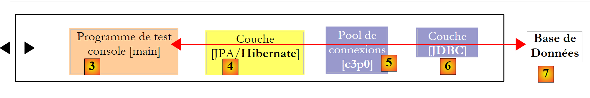 |
- Die Datei [persistence.xml] konfiguriert die Schichten [4, 5, 6]
- [4]: Hibernate-Implementierung von JPA
- [5]: Hibernate greift über einen Verbindungspool auf die Datenbank zu. Ein Verbindungspool ist ein Vorrat an offenen Verbindungen zum SGBD. Auf ein SGBD greifen mehrere Benutzer zu, während es aus Leistungsgründen eine maximale Anzahl N gleichzeitig geöffneter Verbindungen nicht überschreiten darf. Gut geschriebener Code öffnet eine Verbindung zum SGBD nur für eine minimale Zeit: Er sendet Befehle an den SQL und schließt die Verbindung wieder. Dies wiederholt er jedes Mal, wenn er mit der Datenbank arbeiten muss. Der Aufwand für das Öffnen und Schließen einer Verbindung ist nicht zu vernachlässigen, und genau hier kommt der Verbindungspool ins Spiel. Dieser öffnet beim Start der Anwendung N1 Verbindungen zum SGBD. Der Pool stellt der Anwendung bei Bedarf eine offene Verbindung zur Verfügung. Diese wird an den Pool zurückgegeben, sobald die Anwendung sie nicht mehr benötigt – vorzugsweise so schnell wie möglich. Die Verbindung wird nicht geschlossen und steht dem nächsten Benutzer zur Verfügung. Ein Verbindungspool ist also ein System zur gemeinsamen Nutzung offener Verbindungen.
- [6]: Der Treiber JDBC des verwendeten SGBD
Sehen wir uns nun an, wie die Datei [persistence.xml] die oben genannten Ebenen [4, 5, 6] konfiguriert:
- Zeile 2: Das Stamm-Tag der Datei XML lautet <persistence>.
- Zeile 3: <persistence-unit> dient zur Definition einer Persistenz-Einheit. Es kann mehrere Persistenz-Einheiten geben. Jede von ihnen hat einen Namen (Attribut „name“) und einen Transaktionstyp (Attribut „transaction-type“). Die Anwendung greift über den Namen der Persistenz-Einheit auf diese zu, hier „jpa“. Der Transaktionstyp RESOURCE_LOCAL gibt an, dass die Anwendung die Transaktionen mit dem SGBD selbst verwaltet. Dies ist hier der Fall. Wenn die Anwendung in einem EJB3-Container ausgeführt wird, kann sie dessen Transaktionsdienst nutzen. In diesem Fall wird „transaction-type=JTA“ (Java Transaction API) angegeben. „JTA“ ist der Standardwert, wenn das Attribut „transaction-type“ fehlt.
- Zeile 5: Das <provider>-Tag dient dazu, eine Klasse zu definieren, die die Schnittstelle [javax.persistence.spi.PersistenceProvider] implementiert. Diese Schnittstelle ermöglicht es der Anwendung, die Persistenzschicht zu initialisieren. Da wir eine JPA-/Hibernate-Implementierung verwenden, handelt es sich bei der hier verwendeten Klasse um eine Hibernate-Klasse.
- Zeile 6: Das Tag <properties> führt Eigenschaften ein, die für das jeweils ausgewählte provider spezifisch sind. Je nachdem, ob man sich für Hibernate, Toplink, Kodo usw. entschieden hat, gibt es also unterschiedliche Eigenschaften. Die folgenden Eigenschaften sind spezifisch für Hibernate.
- Zeile 8: Weist Hibernate an, das classpath des Projekts zu durchsuchen, um die Klassen mit der Annotation @Entity zu finden und diese zu verwalten. @Entity-Klassen können auch mit den Tags <class>nom_de_la_classe</class> direkt unter dem Tag <persistence-unit> deklariert werden. Genau das werden wir mit dem provider JPA / Toplink tun.
- Die Zeilen 10–12, die hier auskommentiert sind, konfigurieren die Konsolenprotokolle von Hibernate:
- Zeile 10: Legt fest, ob die von Hibernate auf dem SGBD ausgegebenen Befehle angezeigt werden sollen oder nicht. Dies ist während der Einarbeitungsphase sehr hilfreich. Aufgrund der Relational-Objekt-Brücke arbeitet die Anwendung mit persistenten Objekten, auf die sie Operationen vom Typ [persist, merge, remove] anwendet. Es ist sehr interessant zu wissen, welche SQL-Befehle bei diesen Operationen tatsächlich ausgegeben werden. Wenn man diese untersucht, kann man nach und nach erahnen, welche Befehle vom Typ SQL Hibernate generieren wird, wenn man eine bestimmte Operation an den persistenten Objekten durchführt, und die Relational-Objekt-Brücke beginnt, im Kopf Gestalt anzunehmen.
- Zeile 11: Die auf der Konsole angezeigten Befehle SQL können übersichtlich formatiert werden, um das Lesen zu erleichtern
- Zeile 12: Die angezeigten Befehle SQL werden zudem mit Kommentaren versehen
- Die Zeilen 15–19 definieren die Schicht JDBC (Schicht [6] in der Architektur):
- Zeile 15: Die Treiberklasse JDBC des SGBD, hier MySQL5
- Zeile 16: Die URL der verwendeten Datenbank
- Zeilen 17, 18: der Benutzer der Verbindung und sein Passwort
- Wir verwenden hier Elemente, die im Anhang unter Abschnitt 5.5 erläutert werden. Der Leser wird gebeten, diesen Abschnitt über MySQL5 zu lesen.
- Zeile 22: Hibernate muss den SGBD kennen, mit dem es es zu tun hat. Tatsächlich haben alle SGBD proprietäre Erweiterungen, eine eigene Methode zur Verwaltung der automatischen Generierung von Primärschlüsselwerten, … weshalb Hibernate den SGBD kennen muss, mit dem es arbeitet, um ihm die Befehle SQL zu senden, die dieser versteht. [MySQL5InnoDBDialect] bezeichnet das SGBD MySQL5 mit Tabellen vom Typ InnoDB, die Transaktionen unterstützen.
- Die Zeilen 24–28 konfigurieren den Verbindungspool c3p0 (Schicht [5] in der Architektur):
- Zeilen 24, 25: die minimale (Standardwert 3) und maximale Anzahl von Verbindungen (Standardwert 15) im Pool. Die anfängliche Anzahl von Verbindungen beträgt standardmäßig 3.
- Zeile 26: Maximale Wartezeit in Millisekunden auf eine Verbindungsanfrage seitens des Clients. Nach Ablauf dieser Zeit sendet c3p0 eine Ausnahme zurück.
- Zeile 27: Um auf den Befehl BD zuzugreifen, verwendet Hibernate vorbereitete Befehle SQL (PreparedStatement), die c3p0 im Cache speichern kann. Das bedeutet: Wenn die Anwendung ein zweites Mal einen vorbereiteten Befehl SQL anfordert, der bereits im Cache vorhanden ist, muss dieser nicht erneut vorbereitet werden (die Vorbereitung eines Befehls SQL ist mit Kosten verbunden), und es wird der im Cache befindliche Befehl verwendet. Hier wird die maximale Anzahl vorbereiteter SQL-Befehle angegeben, die der Cache über alle Verbindungen hinweg enthalten kann (ein vorbereiteter SQL-Befehl gehört zu einer Verbindung).
- Zeile 28: Häufigkeit der Überprüfung der Gültigkeit der Verbindungen in Millisekunden. Eine Verbindung aus dem Pool kann aus verschiedenen Gründen ungültig werden (der Treiber JDBC erklärt die Verbindung für ungültig, weil sie zu lange besteht, der Treiber JDBC weist „Fehler“ auf, ...).
- Zeile 20: Hier wird festgelegt, dass bei der Initialisierung der Persistenz-Einheit die Datenbankstruktur der @Entity-Objekte generiert wird. Hibernate verfügt nun über alle Werkzeuge, um die Befehle zur Generierung der Datenbanktabellen auszuführen:
- Anhand der Konfiguration der @Entity-Objekte kann Hibernate ermitteln, welche Tabellen generiert werden müssen
- die Zeilen 15–18 und 24–28 ermöglichen es ihm, eine Verbindung zum SGBD herzustellen
- Zeile 22 gibt an, welcher Dialekt SQL zur Generierung der Tabellen verwendet werden soll
Somit erstellt die hier verwendete Datei „[persistence.xml]“ bei jeder neuen Ausführung der Anwendung eine neue Datenbank. Die Tabellen werden neu angelegt (create table), nachdem sie, falls vorhanden, gelöscht wurden (drop table). Es sei darauf hingewiesen, dass dies natürlich nicht bei einer Produktionsdatenbank durchgeführt werden sollte...
Tests haben gezeigt, dass die „Drop/Create“-Phase der Tabellen fehlschlagen kann. Dies war insbesondere dann der Fall, wenn man bei ein und demselben Test von einer Schicht JPA/Hibernate zu einer Schicht JPA/Toplink oder umgekehrt wechselte. Ausgehend von denselben @Entity-Objekten generieren die beiden Implementierungen nicht exakt dieselben Tabellen, Generatoren, Sequenzen usw., und es kam gelegentlich vor, dass die „Drop/Create“-Phase fehlschlug und die Tabellen manuell gelöscht werden mussten. Im Abschnitt „Anhänge“, Absatz 5 und folgende, werden die Anwendungen beschrieben, die für diese manuelle Arbeit verwendet werden können. Es ist anzumerken, dass sich die Implementierung JPA/Hibernate in dieser Phase der anfänglichen Erstellung des Datenbankinhalts als am effizientesten erwiesen hat: Abstürze traten nur selten auf.
Die von der JPA/Hibernate-Schicht verwendeten Tools befinden sich in der Bibliothek [jpa-hibernate], die in Abschnitt 1.5 auf Seite 8 vorgestellt wird. Die für den Zugriff auf die SGBD erforderlichen Treiber JDBC befinden sich in der Bibliothek [jpa-divers]. Diese beiden Bibliotheken wurden in das hier untersuchte Projekt classpath integriert. Im Folgenden fassen wir deren Inhalt zusammen:
 |
2.1.6. Erstellung der Datenbank mit einem Ant-Skript
Wie wir gerade gesehen haben, stellt Hibernate Werkzeuge zur Verfügung, um die Bilddatenbank der @Entity-Objekte der Anwendung zu generieren. Hibernate kann:
- die Textdatei mit den Befehlen SQL zur Erstellung der Datenbank generieren. Dabei wird ausschließlich der Dialekt aus [persistence.xml] verwendet.
- die Schematabellen der @Entity-Objekte in der in [persistence.xml] definierten Zieldatenbank erstellen. Dabei wird die gesamte Datei [persistence.xml] verwendet.
Wir stellen ein Ant-Skript vor, mit dem das Datenbankschema und die Tabellen der @Entity-Objekte generiert werden können. Dieses Skript stammt nicht von mir: Es basiert auf einem ähnlichen Skript aus [ref1]. Ant (Another Neat Tool) ist ein Batch-Tool für Java-Aufgaben. Die Skripte Ant sind für den Laien nicht leicht zu verstehen. Wir werden nur eines davon verwenden, nämlich das, das wir nun erläutern:
 |
- in [1]: die Verzeichnisstruktur der Beispiele dieses Tutorials.
- in [2]: der Ordner [personnes-entites] des derzeit untersuchten Eclipse-Projekts
- in [3]: den Ordner <lib>, der die fünf in Abschnitt 1.5 definierten JAR-Bibliotheken enthält.
- in [4]: das Archiv [hibernate-tools.jar], das für eine der Aufgaben des Skripts [ant-hibernate.xml] benötigt wird, das wir uns nun ansehen werden.
 |
- in [5]: das Eclipse-Projekt und das Skript [ant-hibernate.xml]
- in [6]: der Ordner [src] des Projekts
Das Skript [ant-hibernate.xml] [5] verwendet die JAR-Dateien aus dem Ordner <lib> [3], insbesondere das Archiv [hibernate-tools.jar] [4] aus dem Ordner [lib/hibernate]. Wir haben die Ordnerstruktur nachgebildet, damit der Leser sieht, dass man, um den Ordner [lib] ausgehend vom Ordner [personnes-entites] [2] des Skripts [ant-hibernate.xml] zu finden, dem folgenden Pfad folgen muss: ../../../lib.
Betrachten wir das Skript [ant-hibernate.xml]:
<project name="jpa-hibernate" default="compile" basedir=".">
<!-- Projektname und Version -->
<property name="proj.name" value="jpa-hibernate" />
<property name="proj.shortname" value="jpa-hibernate" />
<property name="version" value="1.0" />
<!-- Globale Eigenschaften -->
<property name="src.java.dir" value="src" />
<property name="lib.dir" value="../../../lib" />
<property name="build.dir" value="bin" />
<!-- Der Classpath des Projekts -->
<path id="project.classpath">
<fileset dir="${lib.dir}">
<include name="**/*.jar" />
</fileset>
</path>
<!-- Konfigurationsdateien, die im Classpath enthalten sein müssen-->
<patternset id="conf">
<include name="**/*.xml" />
<include name="**/*.properties" />
</patternset>
<!-- Projekt bereinigen -->
<target name="clean" description="Nettoyer le projet">
<delete dir="${build.dir}" />
<mkdir dir="${build.dir}" />
</target>
<!-- Projekt kompilieren -->
<target name="compile" depends="clean">
<javac srcdir="${src.java.dir}" destdir="${build.dir}" classpathref="project.classpath" />
</target>
<!-- Konfigurationsdateien in den Classpath kopieren -->
<target name="copyconf">
<mkdir dir="${build.dir}" />
<copy todir="${build.dir}">
<fileset dir="${src.java.dir}">
<patternset refid="conf" />
</fileset>
</copy>
</target>
<!-- Hibernate-Tools -->
<taskdef name="hibernatetool" classname="org.hibernate.tool.ant.HibernateToolTask" classpathref="project.classpath" />
<!-- DDL der Datenbank generieren -->
<target name="DDL" depends="compile, copyconf" description="Génération DDL base">
<hibernatetool destdir="${basedir}">
<classpath path="${build.dir}" />
<!-- META-INF/persistence.xml verwenden -->
<jpaconfiguration />
<!-- Export -->
<hbm2ddl drop="true" create="true" export="false" outputfilename="ddl/schema.sql" delimiter=";" format="true" />
</hibernatetool>
</target>
<!-- Datenbank generieren -->
<target name="BD" depends="compile, copyconf" description="Génération BD">
<hibernatetool destdir="${basedir}">
<classpath path="${build.dir}" />
<!-- Verwenden Sie META-INF/persistence.xml -->
<jpaconfiguration />
<!-- Export -->
<hbm2ddl drop="true" create="true" export="true" outputfilename="ddl/schema.sql" delimiter=";" format="true" />
</hibernatetool>
</target>
</project>
- Zeile 1: Das Projekt [ant] heißt „jpa-hibernate“. Es umfasst eine Reihe von Aufgaben, von denen eine die Standardaufgabe ist: in diesem Fall die Aufgabe mit dem Namen „compile“. Ein Skript ant wird aufgerufen, um eine Aufgabe T auszuführen. Ist diese nicht angegeben, wird die Standardaufgabe ausgeführt. basedir="." gibt an, dass für alle im Skript gefundenen relativen Pfade der Ausgangspunkt der Ordner ist, in dem sich das Skript ant befindet, hier der Ordner <exemples>/hibernate/direct/personnes-entites.
- Zeilen 3–11: Definieren Skriptvariablen mit dem Tag <property name="nomVariable" value="valeurVariable"/>. Die Variable kann anschließend im Skript mit der Notation ${nomVariable} verwendet werden. Die Namen können beliebig gewählt werden. Schauen wir uns die in den Zeilen 9–11 definierten Variablen genauer an:
- Zeile 9: Definiert eine Variable namens „src.java.dir“ (der Name ist frei wählbar), die im weiteren Verlauf des Skripts den Ordner bezeichnet, der den Java-Quellcode enthält. Ihr Wert ist „src“, ein relativer Pfad zu dem Ordner, der durch das Attribut „basedir“ (Zeile 1) angegeben wird. Es handelt sich also um den Pfad „./src“, wobei „.“ hier den Ordner <exemples>/hibernate/direct/personnes-entites bezeichnet. Der Java-Quellcode befindet sich tatsächlich im Ordner <personnes-entites>/src (siehe [6] weiter oben).
- Zeile 10: Definiert eine Variable namens „lib.dir“, die im weiteren Verlauf des Skripts den Ordner bezeichnet, der die JAR-Dateien enthält, die für die Java-Aufgaben des Skripts benötigt werden. Ihr Wert ../../../lib bezeichnet den Ordner <exemples>/lib (siehe [3] weiter oben).
- Zeile 11: Definiert eine Variable namens „build.dir“, die im weiteren Verlauf des Skripts den Ordner bezeichnet, in dem die aus der Kompilierung der .java-Quelldateien resultierenden .class-Dateien erzeugt werden sollen. Ihr Wert „bin“ bezeichnet den Ordner <personnes-entites>/bin. Wir haben bereits erläutert, dass im untersuchten Eclipse-Projekt der Ordner <bin> derjenige war, in dem die .class-Dateien generiert wurden. Ant wird ebenso verfahren.
- Zeilen 14–18: Das <path>-Tag dient dazu, Elemente des classpath zu definieren, die von den Aufgaben ant verwendet werden sollen. Hier umfasst der Pfad „project.classpath“ (der Name ist frei wählbar) alle .jar-Dateien im Verzeichnisbaum von <exemples>/lib.
- Zeilen 21–24: Das Tag <patternset> dient dazu, eine Gruppe von Dateien anhand von Namensmustern zu bezeichnen. Hier bezeichnet das als „conf“ benannte patternset alle Dateien mit der Endung .xml oder .properties. Dieses patternset dient dazu, die .xml- und .properties-Dateien im Ordner <src> (persistence.xml, log4j.properties) (siehe [6]), bei denen es sich um Konfigurationsdateien der Anwendung handelt. Bei der Ausführung bestimmter Aufgaben müssen diese Dateien in den Ordner <bin> kopiert werden, damit sie im Projektverzeichnis enthalten sind. Zur Bezeichnung dieser Dateien wird dann das Tag <target> verwendet.
- Zeilen 27–30: Das Tag <target> bezeichnet eine Aufgabe des Skripts. Dies ist die erste, auf die wir stoßen. Alles, was zuvor stand, betrifft die Konfiguration der Ausführungsumgebung des Skripts ant. Die Aufgabe heißt „clean“. Sie wird in zwei Schritten ausgeführt: Der Ordner <bin> wird gelöscht (Zeile 28) und anschließend neu erstellt (Zeile 29).
- Zeilen 33–35: Die Aufgabe „compile“ ist die Standardaufgabe des Skripts (Zeile 1). Sie hängt (Attribut „depends“) von der Aufgabe „clean“ ab. Das bedeutet, dass ant vor der Ausführung der Aufgabe „compile“ zunächst die Aufgabe „clean“ (c.a.d) ausführen muss, um den Ordner <bin> zu bereinigen. Der Zweck der Aufgabe „compile“ besteht hier darin, die Java-Quelldateien aus dem Ordner <src> zu kompilieren.
- Zeile 34: Aufruf des Java-Compilers mit drei Parametern:
- srcdir: der Ordner, der die Java-Quelldateien enthält, hier der Ordner <src>
- destdir: der Ordner, in dem die generierten .class-Dateien abgelegt werden sollen, hier der Ordner <bin>
- classpathref: der für die Kompilierung zu verwendende Classpath, hier alle JAR-Dateien aus der Verzeichnisstruktur des Ordners <lib>
- (Fortsetzung)
- Zeilen 38–45: Die Aufgabe „copyconf“, deren Zweck darin besteht, alle .xml- und .properties-Dateien aus dem Ordner <src> in den Ordner <bin> zu kopieren.
- Zeile 48: Definition einer Aufgabe mithilfe des Tags <taskdef>. Eine solche Aufgabe ist dafür vorgesehen, an anderer Stelle im Skript wiederverwendet zu werden. Dies erleichtert die Programmierung. Da die Aufgabe an verschiedenen Stellen im Skript verwendet wird, definiert man sie einmal mit dem Tag <taskdef> und ruft sie anschließend bei Bedarf über ihren Namen wieder auf.
- Die Aufgabe heißt hibernatetool (Attribut „name“).
- Ihre Klasse wird durch das Attribut „classname“ definiert. In diesem Fall befindet sich die angegebene Klasse in dem bereits erwähnten Archiv „[hibernate-tools.jar]“.
- Das Attribut „classpathref“ gibt in ant an, wo die vorherige Klasse zu suchen ist
- (Fortsetzung)
- Die Zeilen 51–60 beziehen sich auf die Aufgabe, die uns hier interessiert, nämlich die Generierung des Schemas der Bilddatenbank für die @Entity-Objekte unseres Eclipse-Projekts.
- Zeile 51: Die Aufgabe heißt DDL (wie Data Definition Language, das SQL, das mit der Erstellung von Datenbankobjekten verbunden ist). Sie hängt von den Aufgaben „compile“ und „copyconf“ in dieser Reihenfolge ab. Die Aufgabe „DDL“ löst somit nacheinander die Ausführung der Aufgaben „clean“, „compile“ und „copyconf“ aus. Wenn die Aufgabe DDL gestartet wird, enthält der Ordner <bin> die .class-Dateien der .java-Quelldateien, insbesondere der @Entity-Objekte, sowie die Datei [META-INF/persistence.xml], die die JPA-/Hibernate-Schicht konfiguriert.
- Zeilen 53–59: Die in Zeile 48 definierte Aufgabe [hibernatetool] wird aufgerufen. Ihr werden zahlreiche Parameter übergeben, zusätzlich zu den bereits in Zeile 48 definierten:
- Zeile 53: Der Ausgabeordner für die von der Aufgabe erzeugten Ergebnisse ist der aktuelle Ordner.
- Zeile 54: Der Ordner <bin> wird als classpath der Aufgabe festgelegt.
- Zeile 56: Weist die Aufgabe [hibernatetool] an, wie sie ihre Ausführungsumgebung ermitteln kann: Das Tag <jpaconfiguration/> teilt ihr mit, dass sie sich in einer JPA-Umgebung befindet und daher die Datei [META-INF/persistence.xml] verwenden muss, die sie hier in ihrem classpath findet.
- In Zeile 58 werden die Bedingungen für die Erstellung der Datenbank festgelegt: drop=true gibt an, dass vor der Erstellung der Tabellen die Befehle „SQL drop table“ ausgegeben werden müssen; create=true gibt an, dass die Textdatei mit den Befehlen zur Erstellung der Datenbank „SQL“ erstellt werden muss; outputfilename gibt den Namen dieser Datei „SQL“ an – hier schema.sql – im Ordner <ddl> des Eclipse-Projekts, und „export=false“ gibt an, dass die generierten Befehle SQL nicht über eine Verbindung zum SGBD ausgeführt werden sollen. Dieser Punkt ist wichtig: Er bedeutet, dass zur Ausführung der Aufgabe das Ziel-SGBD nicht gestartet werden muss. „delimiter“ legt das Trennzeichen fest, das zwei Befehle SQL im generierten Schema voneinander trennt; „format=true“ sorgt dafür, dass der generierte Text einer grundlegenden Formatierung unterzogen wird.
- Die Zeilen 51–60 beziehen sich auf die Aufgabe, die uns hier interessiert, nämlich die Generierung des Schemas der Bilddatenbank für die @Entity-Objekte unseres Eclipse-Projekts.
- (Fortsetzung)
- Die Zeilen 63–72 definieren die Aufgabe mit dem Namen BD. Sie ist identisch mit der vorherigen Aufgabe DDL, außer dass sie diesmal die Datenbank generiert (export="true" in Zeile 70). Die Aufgabe stellt eine Verbindung zur Aufgabe SGBD her, wobei die in [persistence.xml] gefundenen Informationen verwendet werden, um dort das Schema SQL auszuführen und die Datenbank zu generieren. Um die Aufgabe BD auszuführen, muss daher die Aufgabe SGBD gestartet sein.
2.1.7. Ausführung der Aufgabe „ “ vor „DDL“
Um das Skript „[ant-hibernate.xml]“ auszuführen, müssen wir zunächst einige Konfigurationen in Eclipse vornehmen.
 |
- in [1]: Wählen Sie [External Tools] aus
- in [2]: eine neue Konfiguration ant anlegen
 |
- in [3]: Konfiguration ant benennen
- in [5]: Das Skript ant über die Schaltfläche [4] auswählen
- in [6]: Die Änderungen übernehmen
- in [7]: Die Konfiguration ant DDL wurde erstellt
 |
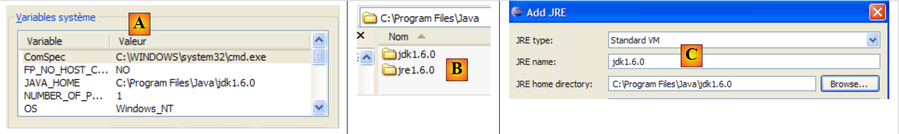 |
- in [8]: Auf der Registerkarte JRE wird festgelegt, welches JRE verwendet werden soll. Das Feld [10] ist normalerweise bereits mit dem von Eclipse verwendeten JRE vorausgefüllt. Daher sind auf diesem Reiter normalerweise keine Änderungen erforderlich. Dennoch bin ich auf einen Fall gestoßen, in dem das Skript ant den Compiler <javac> nicht finden konnte. Dieser befindet sich nicht in einem JRE (Java Runtime Environment), sondern in einem JDK (Java Development Kit). Das Eclipse-Tool ant findet diesen Compiler über die Umgebungsvariable JAVA_HOME (Start / Systemsteuerung / Leistung und Wartung / System / Registerkarte „Erweitert“ / Schaltfläche „Umgebungsvariablen“) [A]. Wenn diese Variable nicht definiert wurde, kann man ant ermöglichen, den Compiler <javac> zu finden, indem man in [10] nicht JRE, sondern JDK eingibt. Dieser befindet sich im selben Ordner wie JRE und [B]. Man verwendet die Schaltfläche [9], um die Datei JDK unter den verfügbaren Dateien JRE und [C] anzugeben, damit man sie anschließend in [10].
- in [12]: Auf der Registerkarte [Targets] wird die Aufgabe DDL ausgewählt. Somit entspricht die Konfiguration ant, die wir DDL [7] genannt haben, der Ausführung der Aufgabe mit dem Namen DDL [12], die, bekanntlich das Schema DDL für die Bilddatenbank der @Entity-Objekte der Anwendung generiert.
 |
- in [13]: Die Konfiguration wird validiert
- in [14]: Man führt sie aus
In der Ansicht [console] werden die Protokolle zur Ausführung der Aufgabe ant und DDL angezeigt:
Buildfile: C:\data\2006-2007\eclipse\dvp-jpa\hibernate\direct\personnes-entites\ant-hibernate.xml
clean:
[delete] Deleting directory C:\data\2006-2007\eclipse\dvp-jpa\hibernate\direct\personnes-entites\bin
[mkdir] Created dir: C:\data\2006-2007\eclipse\dvp-jpa\hibernate\direct\personnes-entites\bin
compile:
[javac] Compiling 3 source files to C:\data\2006-2007\eclipse\dvp-jpa\hibernate\direct\personnes-entites\bin
copyconf:
[copy] Copying 2 files to C:\data\2006-2007\eclipse\dvp-jpa\hibernate\direct\personnes-entites\bin
DDL:
[hibernatetool] Executing Hibernate Tool with a JPA Configuration
[hibernatetool] 1. task: hbm2ddl (Generates database schema)
[hibernatetool] drop table if exists jpa01_personne;
[hibernatetool] create table jpa01_personne (
[hibernatetool] ID integer not null auto_increment,
[hibernatetool] VERSION integer not null,
[hibernatetool] NOM varchar(30) not null unique,
[hibernatetool] PRENOM varchar(30) not null,
[hibernatetool] DATENAISSANCE date not null,
[hibernatetool] MARIE bit not null,
[hibernatetool] NBENFANTS integer not null,
[hibernatetool] primary key (ID)
[hibernatetool] ) ENGINE=InnoDB;
BUILD SUCCESSFUL
Total time: 5 seconds
- Man beachte, dass die Aufgabe DDL den Namen [hibernatetool] trägt (Zeile 10) und dass sie von den Aufgaben clean (Zeile 2), compile (Zeile 5) und copyconf (Zeile 7) abhängt.
- Zeile 10: Die Aufgabe [hibernatetool] verarbeitet die Datei [persistence.xml] aus einer Konfiguration JPA
- Zeile 11: Die Aufgabe [hbm2ddl] wird das Schema DDL der Datenbank generieren
- Zeilen 12–22: das Schema DDL der Datenbank
Wir erinnern uns, dass wir die Aufgabe [hbm2ddl] angewiesen hatten, das Schema DDL an einer bestimmten Stelle zu generieren:
<hbm2ddl drop="true" create="true" export="true" outputfilename="ddl/schema.sql" delimiter=";" format="true" />
- Zeile 74: Das Schema soll in der Datei ddl/schema.sql generiert werden. Überprüfen wir das:
 |
- in [1]: Die Datei ddl/schema.sql ist vorhanden (führen Sie F5 aus, um die Verzeichnisstruktur zu aktualisieren)
- in [2]: deren Inhalt. Dabei handelt es sich um das Schema einer Datenbank MySQL5. Die Konfigurationsdatei [persistence.xml] für die Ebene JPA gab tatsächlich ein SGBD MySQL5 an (Zeile 8 unten):
<!-- Anmeldung JDBC -->
<property name="hibernate.connection.driver_class" value="com.mysql.jdbc.Driver" />
...
<!-- automatische Schemaerstellung -->
<property name="hibernate.hbm2ddl.auto" value="create" />
<!-- Dialekt -->
<property name="hibernate.dialect" value="org.hibernate.dialect.MySQL5InnoDBDialect" />
<!-- Eigenschaften DataSource c3p0 -->
...
Betrachten wir die hier erstellte Objekt-Relational-Mapping-Brücke, indem wir die Konfiguration des @Entity-Objekts „Person“ und das generierte Schema DDL untersuchen:
 |
 |
Dabei sind einige Punkte zu beachten:
- A1-B1: Der in A1 angegebene Tabellenname ist tatsächlich derselbe wie der in B1 verwendete. Zu beachten ist, dass drop in B1 vor create steht.
- A2-B2: Zeigt die Art der Generierung des Primärschlüssels an. Der in A2 angegebene Modus AUTO führte zu dem für MySQL5 spezifischen Attribut autoincrement. Der Modus zur Generierung des Primärschlüssels ist meist spezifisch für SGBD.
- A3-B3: Zeigt das für MySQL5 spezifische SQL-Bit, um einen Java-Typ boolean darzustellen.
Wiederholen wir diesen Test mit einem anderen SGBD:
 |
- Der Ordner „[conf] [1]“ enthält die Dateien „[persistence.xml]“ für verschiedene „SGBD“. Nehmen wir zum Beispiel die Oracle-Datei [2] und legen wir sie im Ordner [META-INF] [3] anstelle der vorherigen Datei ab. Ihr Inhalt lautet wie folgt:
<?xml version="1.0" encoding="UTF-8"?>
<persistence version="1.0" xmlns="http://java.sun.com/xml/ns/persistence">
<persistence-unit name="jpa" transaction-type="RESOURCE_LOCAL">
<!-- Anbieter -->
<provider>org.hibernate.ejb.HibernatePersistence</provider>
<properties>
<!-- Persistente Klassen -->
<property name="hibernate.archive.autodetection" value="class, hbm" />
<!-- Protokolle SQL
<property name="hibernate.show_sql" value="true"/>
<property name="hibernate.format_sql" value="true"/>
<property name="use_sql_comments" value="true"/>
-->
<!-- Verbindung JDBC -->
<property name="hibernate.connection.driver_class" value="oracle.jdbc.OracleDriver" />
<property name="hibernate.connection.url" value="jdbc:oracle:thin:@localhost:1521:xe" />
<property name="hibernate.connection.username" value="jpa" />
<property name="hibernate.connection.password" value="jpa" />
<!-- Automatische Erstellung des Schemas -->
<property name="hibernate.hbm2ddl.auto" value="create" />
<!-- Dialekt -->
<property name="hibernate.dialect" value="org.hibernate.dialect.OracleDialect" />
<!-- Eigenschaften von DataSource c3p0 -->
<property name="hibernate.c3p0.min_size" value="5" />
<property name="hibernate.c3p0.max_size" value="20" />
<property name="hibernate.c3p0.timeout" value="300" />
<property name="hibernate.c3p0.max_statements" value="50" />
<property name="hibernate.c3p0.idle_test_period" value="3000" />
</properties>
</persistence-unit>
</persistence>
Der Leser wird gebeten, im Anhang den Abschnitt über Oracle (Absatz 5.7) zu lesen, insbesondere um die Konfiguration von JDBC zu verstehen.
Nur Zeile 25 ist hier wirklich wichtig: Man teilt Hibernate mit, dass SGBD fortan ein Oracle-SGBD ist. Die Ausführung der Ant-Aufgabe DDL liefert das oben gezeigte Ergebnis [4]. Es ist zu beachten, dass sich das Oracle-Schema vom Schema „MySQL5“ unterscheidet. Dies ist eine Stärke von „JPA“: Der Entwickler muss sich nicht um diese Details kümmern, was die Portabilität seiner Entwicklungen erheblich erhöht.
2.1.8. Ausführung der Aufgabe „ “ unter BD
Man erinnert sich vielleicht daran, dass die Aufgabe ant mit dem Namen BD dasselbe tut wie die Aufgaben ant und DDL, aber zusätzlich die Datenbank generiert. Daher muss die Aufgabe SGBD gestartet werden. Wir betrachten nun den Fall von SGBD und MySQL5 und bitten den Leser, die Datei [conf/mysql5/persistence.xml] in den Ordner [src/META-INF] zu kopieren. Um die Funktionsweise der Aufgabe zu überprüfen, verwenden wir das Plugin „SQL Explorer“ (siehe Abschnitt 5.2.6), um den Status der JPA-Datei „BD“ vor und nach der Ausführung der Aufgabe „ant BD“ zu überprüfen.
Zunächst müssen wir eine neue Konfiguration ant erstellen, um die Aufgabe BD auszuführen. Der Leser wird gebeten, die in Abschnitt 2.1.7 für die Konfiguration DDL beschriebene Vorgehensweise zu befolgen. Die neue Konfiguration ant erhält den Namen BD:
 |
- in [1]: Die vorherige Konfiguration mit dem Namen DDL wird dupliziert
- in [2]: Die neue Konfiguration erhält den Namen BD. Sie führt die Aufgabe ant BD [3] aus, die die Datenbank physisch erstellt.
- Anschließend starten Sie die Aufgaben SGBD und MySQL5 (Abschnitt 5.5).
Wir verwenden nun das Plugin SQL Explorer, um die von SGBD verwalteten Datenbanken zu durchsuchen. Der Leser sollte sich zuvor bei Bedarf mit diesem Plugin vertraut machen (siehe Abschnitt 5.2.6).
 |
- [1]: Wir öffnen die Perspektive „SQL Explorer [Window / Open Perspective / Other]“
- [2]: Bei Bedarf wird eine Verbindung [mysql5-jpa] erstellt (siehe Abschnitt 5.5.5, Seite 252) und geöffnet
- [3]: Man meldet sich mit jpa / jpa an
- [4]: Man ist mit MySQL5 verbunden.
 |
- in [5]: Die Tabelle BD jpa enthält nur eine Tabelle: [articles]
- in [6]: Wir starten die Ausführung der Aufgabe ant BD. Da wir uns in der Perspektive [SQL Explorer] befinden, sehen wir die Ansicht [Console] nicht, die uns die Protokolle der Aufgabe anzeigt. Man kann diese Ansicht [Window / Show View / ...] anzeigen oder zur Java-Perspektive [Window / Open Perspective / ...] zurückkehren.
- In [7]: Sobald die Ant-Aufgabe BD abgeschlossen ist, kehren Sie gegebenenfalls zur Perspektive [SQL Explorer] zurück und aktualisieren Sie die Baumstruktur der JPA-Perspektive BD.
- in [8]: Man sieht die Tabelle [jpa01_personne], die erstellt wurde.
Der Leser wird gebeten, diese Generierung von BD mit anderen SGBD zu wiederholen. Gehen Sie dazu wie folgt vor:
- Kopieren Sie die Datei [conf/<sgbd>/persistence.xml] in den Ordner [src/META-INF], wobei <sgbd> die getestete SGBD ist
- Starten Sie <sgbd> gemäß den Anweisungen im Anhang zu dieser Datenbank
- Erstellen Sie in der SQL Explorer-Perspektive eine Verbindung zu <sgbd>. Dies wird ebenfalls im Anhang für jeden der SGBD-Dateien erläutert
- Wiederholen Sie die vorherigen Tests
An dieser Stelle haben wir bereits einiges gelernt:
- Wir verstehen das Konzept der Objekt-Relational-Brücke besser. Hier wurde sie mit Hibernate realisiert. Später werden wir Toplink verwenden.
- Wir wissen, dass diese Objekt-Relational-Brücke an zwei Stellen konfiguriert wird:
- in den @Entity-Objekten, wo die Verknüpfungen zwischen den Feldern der Objekte und den Spalten der Tabellen der BD angegeben werden
- in [META-INF/persistence.xml], wo der Implementierung JPA Informationen zu den beiden Elementen der Objekt-Relational-Brücke bereitgestellt werden: den @Entity-Objekten (Objekt) und der Datenbank (relational).
- Wir haben zwei Ant-Aufgaben namens DDL und BD erstellt, mit denen wir die Datenbank anhand der vorherigen Konfiguration anlegen können, noch bevor überhaupt Java-Code geschrieben wird.
Nachdem die JPA-Schicht unserer Anwendung nun korrekt konfiguriert ist, können wir damit beginnen, die API und JPA mit Java-Code zu erkunden.
2.1.9. Der Persistenz -Kontext einer Anwendung
Lassen Sie uns die Laufzeitumgebung eines JPA-Clients etwas näher erläutern:
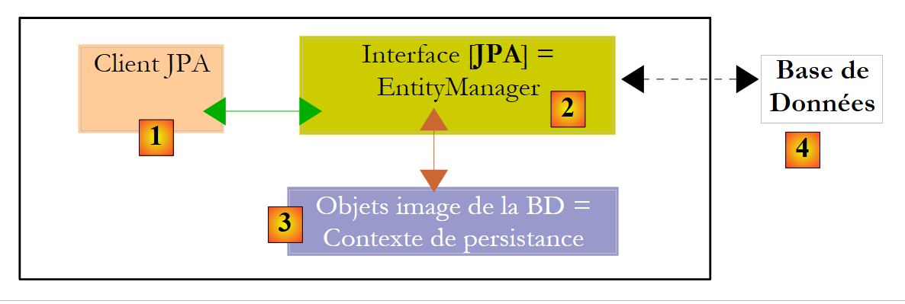 |
Wir wissen, dass die Schicht JPA [2] eine Objekt-Relational-Brücke [3] / [4] erstellt. Als „Persistenzkontext“ bezeichnet man die Gesamtheit der Objekte, die von der Schicht JPA im Rahmen dieser Objekt-Relational-Brücke verwaltet werden. Um auf die Daten des Persistenzkontexts zuzugreifen, muss ein Client JPA [1] die Schicht JPA [2] durchlaufen:
- Er kann ein Objekt anlegen und die Schicht JPA auffordern, dieses persistent zu machen. Das Objekt ist dann Teil des Persistenzkontexts.
- Es kann von der Schicht [JPA] eine Referenz auf ein vorhandenes persistentes Objekt anfordern.
- Er kann ein persistentes Objekt ändern, das er von der Schicht JPA erhalten hat.
- Er kann die Schicht JPA auffordern, ein Objekt aus dem Persistenzkontext zu löschen.
Die Schicht JPA stellt dem Client eine Schnittstelle namens [EntityManager] zur Verfügung, die, wie der Name schon sagt, die Verwaltung der @Entity-Objekte des Persistenzkontexts ermöglicht. Im Folgenden stellen wir die wichtigsten Methoden dieser Schnittstelle vor:
fügt entity in den Persistenzkontext ein | |
entfernt entity aus dem Persistenzkontext | |
führt ein Objekt entity vom Client, das nicht vom Persistenzkontext verwaltet wird, mit dem Objekt entity aus dem Persistenzkontext zusammen, das denselben Primärschlüssel hat. Das Ergebnis ist das Objekt entity aus dem Persistenzkontext. | |
fügt ein in der Datenbank gesuchtes Objekt über seinen Primärschlüssel in den Persistenzkontext ein. Der Typ T des Objekts ermöglicht der Schicht JPA zu erkennen, welche Tabelle abgefragt werden muss. Das so erstellte persistente Objekt wird an den Client zurückgegeben. | |
erstellt ein Query-Objekt aus einer Abfrage JPQL (Java Persistence Query Language). Eine Abfrage JPQL entspricht einer Abfrage SQL, mit dem Unterschied, dass Objekte statt Tabellen abgefragt werden. | |
Methode, die der vorherigen ähnelt, mit dem Unterschied, dass queryText ein Befehl SQL und nicht JPQL. | |
Die Vorgehensweise ist identisch mit createQuery, mit dem Unterschied, dass der Befehl JPQL queryText in eine Konfigurationsdatei ausgelagert und mit einem Namen verknüpft wurde. Dieser Name ist der Parameter der Methode. |
Ein Objekt EntityManager hat einen Lebenszyklus, der nicht unbedingt dem der Anwendung entspricht. Es hat einen Anfang und ein Ende. So kann ein Client JPA nacheinander mit verschiedenen Objekten EntityManager arbeiten. Der einem EntityManager zugeordnete Persistenzkontext hat denselben Lebenszyklus wie dieses Objekt. Sie sind untrennbar miteinander verbunden. Wenn ein EntityManager-Objekt geschlossen wird, wird sein Persistenzkontext bei Bedarf mit der Datenbank synchronisiert und existiert anschließend nicht mehr. Um wieder über einen Persistenzkontext zu verfügen, muss ein neues EntityManager angelegt werden.
Der Client JPA kann mit dem folgenden Befehl ein EntityManager und damit einen Persistenzkontext erstellen:
EntityManagerFactory emf = Persistence.createEntityManagerFactory("jpa");
- javax.persistence.Persistence ist eine statische Klasse, mit der eine Factory für Objekte vom Typ EntityManager abgerufen werden kann. Diese Factory ist mit einer bestimmten Persistenzeinheit verknüpft. Zur Erinnerung: In der Konfigurationsdatei [META-INF/persistence.xml] können Persistenz-Einheiten definiert werden, die jeweils einen Namen haben:
<persistence-unit name="jpa" transaction-type="RESOURCE_LOCAL">
Oben heißt die Persistenz-Einheit „jpa“. Damit verbunden ist eine eigene Konfiguration, insbesondere die Einheit „SGBD“, mit der sie zusammenarbeitet. Die Anweisung [Persistence.createEntityManagerFactory("jpa")] erstellt eine Objektfabrik vom Typ EntityManagerFactory, die Objekte vom Typ EntityManager bereitstellen kann, die zur Verwaltung von Persistenzkontexten im Zusammenhang mit der Persistenzeinheit namens jpa dienen. Das Abrufen eines Objekts vom Typ EntityManager und damit eines Persistenzkontexts erfolgt ausgehend vom Objekt EntityManagerFactory wie folgt:
Die folgenden Methoden der Schnittstelle [EntityManager] ermöglichen die Verwaltung des Lebenszyklus des Persistenzkontexts:
Der Persistenzkontext wird geschlossen. Erzwingt die Synchronisation des Persistenzkontexts mit der Datenbank:
| |
Der Persistenzkontext wird von allen Objekten geleert, aber nicht geschlossen. | |
Der Persistenzkontext wird wie für close() beschrieben mit der Datenbank synchronisiert. |
Der Client JPA kann die Synchronisierung des Persistenzkontexts mit der Datenbank mithilfe der Methode [EntityManager] erzwingen. flush (vorherige). Die Synchronisation kann explizit oder implizit erfolgen. Im ersten Fall ist es Aufgabe des Clients, Operationen flush auszuführen, wenn er Synchronisationen durchführen möchte; andernfalls erfolgt die Synchronisation zu bestimmten Zeitpunkten, die wir im Folgenden näher erläutern werden. Der Synchronisationsmodus wird durch die folgenden Methoden der Schnittstelle [EntityManager] verwaltet:
Für flushmode gibt es zwei mögliche Werte: FlushModeType.AUTO (Standard): Die Synchronisation erfolgt vor jeder Abfrage SELECT an der Datenbank. FlushModeType.COMMIT: Die Synchronisation erfolgt erst am Ende der Transaktionen in der Datenbank. | |
gibt den aktuellen Synchronisationsmodus an |
Fassen wir zusammen: Im Modus FlushModeType.AUTO, dem Standardmodus, wird der Persistenzkontext zu folgenden Zeitpunkten mit der Datenbank synchronisiert:
- vor jeder SELECT-Operation in der Datenbank
- am Ende einer Transaktion in der Datenbank
- nach einer flush- oder close-Operation am Persistenzkontext
Im Modus FlushModeType.COMMIT verhält es sich genauso, mit Ausnahme von Vorgang 1, der nicht stattfindet. Der normale Interaktionsmodus mit der Schicht JPA ist ein transaktionaler Modus. Der Client führt innerhalb einer Transaktion verschiedene Operationen auf dem Persistenzkontext durch. In diesem Fall entsprechen die Zeitpunkte der Synchronisation des Persistenzkontexts mit der Datenbank den oben genannten Fällen 1 und 2 im Modus AUTO sowie ausschließlich Fall 2 im Modus COMMIT.
Abschließend noch der Modus API der Query-Schnittstelle, über die Befehle vom Typ JPQL an den Persistenzkontext oder Befehle vom Typ SQL direkt an die Datenbank gesendet werden können, um dort Daten abzurufen. Die Query-Schnittstelle sieht wie folgt aus:
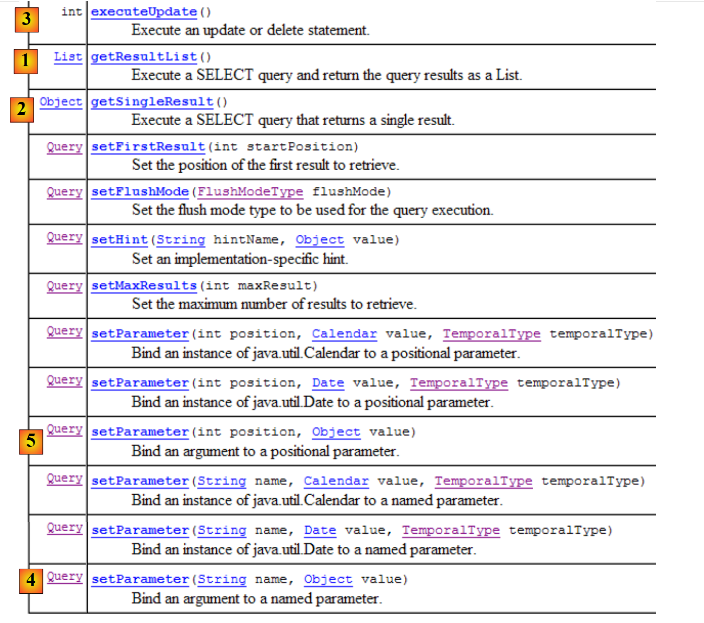 |
Wir werden die oben genannten Methoden 1 bis 4 verwenden:
- 1 – Die Methode getResultList führt einen SELECT aus, der mehrere Objekte zurückgibt. Diese werden in einem Objekt List bereitgestellt. Dieses Objekt ist eine Schnittstelle. Diese stellt ein Objekt Iterator bereit, mit dem die Elemente der Liste L in folgender Form durchlaufen werden können:
Iterator iterator = L.iterator();
while (iterator.hasNext()) {
// das Objekt iterator.next() auswerten, das das aktuelle Element der Liste darstellt
...
}
Die Liste L kann auch mit einem for ausgewertet werden:
for (Object o : L) {
// Objekt o auswerten
}
- 2 – Die Methode getSingleResult führt einen Befehl JPQL / SQL / SELECT aus, der ein einzelnes Objekt zurückgibt.
- 3 – Die Methode executeUpdate führt einen Befehl SQL (Update oder Delete) aus und gibt die Anzahl der von der Operation betroffenen Zeilen zurück.
- 4 – Die Methode setParameter(String, Object) ermöglicht es, einem benannten Parameter eines parametrisierten Befehls JPQL einen Wert zuzuweisen
- 5 – Die Methode setParameter(int, Object) verwendet jedoch nicht den Namen des Parameters, sondern dessen Position im Befehl JPQL.
2.1.10. Ein erster Client JPA
Kehren wir aus der Java-Perspektive zum Projekt zurück:
 |
Wir wissen nun so gut wie alles über dieses Projekt, abgesehen vom Inhalt des Ordners „[src/tests]“, den wir uns nun ansehen. Der Ordner enthält zwei Testprogramme der Schicht „JPA“:
- [InitDB.java] ist ein Programm, das einige Zeilen in die Tabelle [jpa01_personne] der Datenbank einfügt. Sein Code liefert uns die ersten Elemente der Schicht JPA.
- [Main.java] ist ein Programm, das die Operationen CRUD an der Tabelle [jpa01_personne] durchführt. Die Untersuchung seines Codes ermöglicht es uns, die grundlegenden Konzepte des Persistenzkontexts und des Lebenszyklus der Objekte in diesem Kontext zu behandeln.
2.1.10.1. Der Code
Der Code des Programms [InitDB.java] lautet wie folgt:
package tests;
import java.text.ParseException;
import java.text.SimpleDateFormat;
import javax.persistence.EntityManager;
import javax.persistence.EntityManagerFactory;
import javax.persistence.EntityTransaction;
import javax.persistence.Persistence;
import entites.Personne;
public class InitDB {
// Konstanten
private final static String TABLE_NAME = "jpa01_personne";
public static void main(String[] args) throws ParseException {
// Persistenz-Einheit
EntityManagerFactory emf = Persistence.createEntityManagerFactory("jpa");
// ein EntityManagerFactory aus der Persistenz-Einheit abrufen
EntityManager em = emf.createEntityManager();
// Transaktion starten
EntityTransaction tx = em.getTransaction();
tx.begin();
// Elemente aus der Personentabelle löschen
em.createNativeQuery("delete from " + TABLE_NAME).executeUpdate();
// Zwei Personen anlegen
Personne p1 = new Personne("Martin", "Paul", new SimpleDateFormat("dd/MM/yy").parse("31/01/2000"), true, 2);
Personne p2 = new Personne("Durant", "Sylvie", new SimpleDateFormat("dd/MM/yy").parse("05/07/2001"), false, 0);
// Persistenz der Personen
em.persist(p1);
em.persist(p2);
// Personen anzeigen
System.out.println("[personnes]");
for (Object p : em.createQuery("select p from Personne p order by p.nom asc").getResultList()) {
System.out.println(p);
}
// Transaktion beenden
tx.commit();
// Ende EntityManager
em.close();
// Ende EntityManagerFactory
emf.close();
// Protokoll
System.out.println("terminé ...");
}
}
Dieser Code ist im Lichte der Erläuterungen in Abschnitt 2.1.9 zu lesen.
- Zeile 19: Es wird ein EntityManagerFactory-emf-Objekt für die Persistenz-Einheit jpa (definiert in persistence.xml) angefordert. Dieser Vorgang wird normalerweise nur einmal während der Laufzeit einer Anwendung durchgeführt.
- Zeile 21: Es wird ein Objekt vom Typ EntityManager (em) angefordert, um einen Persistenzkontext zu verwalten.
- Zeile 23: Es wird ein „Transaction“-Objekt angefordert, um eine Transaktion zu verwalten. An dieser Stelle sei daran erinnert, dass Operationen am Persistenzkontext innerhalb einer Transaktion durchgeführt werden. Wir werden sehen, dass dies nicht zwingend erforderlich ist, es jedoch zu Problemen kommen kann. Wenn die Anwendung in einem Container EJB3 ausgeführt wird, finden die Operationen am Persistenzkontext immer innerhalb einer Transaktion statt.
- Zeile 24: Die Transaktion beginnt
- Zeile 26: Führt einen Befehl SQL DELETE für die Tabelle „jpa01_personne“ (nativeQuery) aus. Dies geschieht, um die Tabelle vollständig zu leeren und so das Ergebnis der Ausführung der Anwendung [InitDB] besser erkennen zu können
- Zeilen 28–29: Es werden zwei Objekte Personne namens p1 und p2 erstellt. Dies sind normale Objekte, die vorerst nichts mit dem Persistenzkontext zu tun haben. In Bezug auf den Persistenzkontext bezeichnet Hibernate diese Objekte als „transient“ (vorübergehend), um sie von den „persistenten“ (persistent) Objekten abzugrenzen, die vom Persistenzkontext verwaltet werden. Wir werden eher von nicht-persistenten Objekten (kein deutscher Begriff) sprechen, um anzugeben, dass sie noch nicht vom Persistenzkontext verwaltet werden, und von persistenten Objekten für diejenigen, die von diesem verwaltet werden. Es gibt noch eine dritte Kategorie von Objekten, nämlich „detached“-Objekte, bei denen es sich um zuvor persistente Objekte handelt, deren Persistenzkontext jedoch geschlossen wurde. Der Client kann Referenzen auf solche Objekte besitzen, was erklärt, warum sie beim Schließen des Persistenzkontexts nicht unbedingt zerstört werden. Man sagt dann, dass sie sich im „detached“-Zustand befinden. Mit der Transaktion [EntityManager].merge können sie wieder an einen neu erstellten Persistenzkontext angehängt werden.
- Zeilen 31–32: Die Personen p1 und p2 werden durch die Operation [EntityManager].persist in den Persistenzkontext integriert. Sie werden dadurch zu persistenten Objekten.
- Zeilen 35–37: Es wird ein Befehl JPQL „select p from Personne p order by p.nom asc“ ausgeführt. Personne ist nicht die Tabelle (diese heißt jpa01_personne), sondern das der Tabelle zugeordnete @Entity-Objekt. Hier handelt es sich um eine JPQL-Abfrage (Java Persistence Query Language) im Persistenzkontext und nicht um eine Anweisung SQL in der Datenbank. Abgesehen von dem Objekt Personne, das die Tabelle jpa01_personne ersetzt hat, sind die Syntaxen jedoch identisch. Eine Schleife for durchläuft die Ergebnisliste (der Personen) von select, um jedes Element auf der Konsole anzuzeigen. Hier soll überprüft werden, ob die in den Persistenzkontext in den Zeilen 31–32 eingefügten Elemente tatsächlich in der Tabelle zu finden sind. Transparent erfolgt dabei eine Synchronisierung des Persistenzkontexts mit der Datenbank. Tatsächlich wird eine Abfrage select gesendet, und wir haben bereits erwähnt, dass dies einer der Fälle ist, in denen eine Synchronisierung durchgeführt wird. Zu diesem Zeitpunkt sendet JPA / Hibernate die beiden Befehle SQL und insert aus, die die beiden Personen in die Tabelle jpa01_personne einfügen. Die Operation persist hatte dies nicht getan. Diese Operation fügt Objekte in den Persistenzkontext ein, ohne dass dies Auswirkungen auf die Datenbank hat. Die eigentlichen Vorgänge finden bei den Synchronisierungen statt, hier unmittelbar vor der Operation select in der Datenbank.
- Zeile 39: Die in Zeile 24 begonnene Transaktion wird beendet. Es findet erneut eine Synchronisation statt. Hier geschieht nichts, da sich der Persistenzkontext seit der letzten Synchronisation nicht geändert hat.
- Zeile 41: Der Persistenzkontext wird geschlossen.
- Zeile 43: Die EntityManager-Fabrik wird geschlossen.
2.1.10.2. : Ausführung des Codes
- SGBD starten MySQL5
- Kopieren Sie bei Bedarf die Datei „conf/mysql5/persistence.xml“ in den Ordner „META-INF/persistence.xml“
- die Anwendung [InitDB] ausführen
Man erhält folgende Ergebnisse:
 |
- in [1]: die Konsolenausgabe in der Java-Perspektive. Das Ergebnis entspricht den Erwartungen.
- in [2]: Der Inhalt der Tabelle [jpa01_personne] wird mit der Perspektive „SQL Explorer“ überprüft, wie in Abschnitt 2.1.8 erläutert. Dabei fallen zwei Punkte auf:
- Der Primärschlüssel ID wurde automatisch generiert, ohne dass man sich darum kümmern musste
- das Gleiche gilt für die Versionsnummer. Man stellt fest, dass die erste Version die Nummer 0 hat.
Damit liegen uns die ersten Elemente der JPA-Struktur vor. Es ist uns gelungen, Daten in eine Tabelle einzufügen. Auf dieser Grundlage werden wir nun den zweiten Test erstellen, doch zuvor wollen wir uns mit den Protokollen befassen.
2.1.11. Hibernate-Protokolle implementieren
Es ist möglich, die Befehle SQL zu ermitteln, die von der Schicht JPA / Hibernate an die Datenbank gesendet wurden. Es ist interessant, diese zu kennen, um zu sehen, ob die Schicht JPA genauso effizient ist wie ein Entwickler, der die Befehle SQL selbst geschrieben hätte.
Mit JPA / Hibernate können die Protokolle SQL in der Datei [persistence.xml] überprüft werden:
<!-- Persistente Klassen -->
<property name="hibernate.archive.autodetection" value="class, hbm" />
<!-- Protokolle SQL
<property name="hibernate.show_sql" value="true"/>
<property name="hibernate.format_sql" value="true"/>
<property name="use_sql_comments" value="true"/>
-->
<!-- Anmeldung JDBC -->
<property name="hibernate.connection.driver_class" value="com.mysql.jdbc.Driver" />
- Zeilen 4–6: Die Protokolle SQL waren bisher nicht aktiviert. Sie werden nun aktiviert, indem das Kommentarzeichen in den Zeilen 3 und 7 entfernt wird.
Die Anwendung [InitDB] wird erneut ausgeführt. Die Konsolenausgaben sehen dann wie folgt aus:
- Zeilen 2–4: Der Befehl SQL delete, der aus der Anweisung stammt:
// Elemente aus der Personentabelle löschen
em.createNativeQuery("delete from " + TABLE_NAME).executeUpdate();
- Zeilen 5–18: Die Befehle SQL und insert, die aus den Anweisungen stammen:
// Persistenz der Personen
em.persist(p1);
em.persist(p2);
- Zeilen 21–32: Der Befehl SQL „select“, der aus der Anweisung stammt:
for (Object p : em.createQuery("select p from Personne p order by p.nom asc").getResultList())
Wenn man zwischendurch Konsolenausgaben anzeigt, wird man feststellen, dass das Schreiben der Protokolle SQL für eine Anweisung I im Java-Code erfolgt, sobald die Anweisung I ausgeführt wird. Das bedeutet jedoch nicht, dass der angezeigte Befehl SQL zu diesem Zeitpunkt in der Datenbank ausgeführt wird. Sie wird vielmehr zwischengespeichert, um bei der nächsten Synchronisierung des Persistenzkontexts mit der Datenbank ausgeführt zu werden.
Weitere Protokolle können über die Datei [src/log4j.properties] abgerufen werden:
 |
- In [1] wird die Datei [log4j.properties] vom Archiv [log4j-1.2.13.jar] [2] des Tools namens LOG4j (Logs for Java) verwendet, das unter der URL [http://logging.apache.org/log4j/docs/index.html] verfügbar ist. Da es sich im Ordner [src] des Eclipse-Projekts befindet, wissen wir, dass [log4j.properties] automatisch in den Ordner [bin] des Projekts [3] kopiert wird. Ist dies geschehen, befindet sie sich nun im Ordner classpath des Projekts, und genau dort wird das Archiv [2] sie abrufen.
Die Datei [log4j.properties] ermöglicht es uns, bestimmte Hibernate-Protokolle zu überwachen. Bei früheren Ausführungen hatte sie folgenden Inhalt:
# Protokollmeldungen an stdout weiterleiten
log4j.appender.stdout=org.apache.log4j.ConsoleAppender
log4j.appender.stdout.Target=System.out
log4j.appender.stdout.layout=org.apache.log4j.PatternLayout
log4j.appender.stdout.layout.ConversionPattern=%d{ABSOLUTE} %5p %c{1}:%L - %m%n
# Option für den Root-Logger
log4j.rootLogger=ERROR, stdout
# Hibernate-Protokollierungsoptionen (INFO zeigt nur Startmeldungen an)
#log4j.logger.org.hibernate=INFO
# Protokollierung der Laufzeitargumente der Bindeparameter von JDBC
#log4j.logger.org.hibernate.type=DEBUG
Ich werde diese Konfiguration nur kurz kommentieren, da ich mir nie die Zeit genommen habe, mich ernsthaft mit LOG4j auseinanderzusetzen.
- Die Zeilen 1–8 finden sich in allen log4j.properties-Dateien, auf die ich bisher gestoßen bin
- Die Zeilen 10–14 sind in den log4j.properties-Dateien der Hibernate-Beispiele enthalten.
- Zeile 11: Steuert die allgemeinen Hibernate-Protokolle. Da die Zeile auskommentiert ist, werden diese Protokolle hier unterdrückt. Es gibt mehrere Protokollstufen: INFO (allgemeine Informationen darüber, was Hibernate tut), WARN (Hibernate warnt vor einem möglichen Problem), DEBUG (detaillierte Protokolle). Die Stufe INFO ist die knappste, der Modus DEBUG die ausführlichste. Durch Aktivieren von Zeile 11 lässt sich nachvollziehen, was Hibernate tut, insbesondere beim Start der Anwendung. Das ist oft interessant.
- Zeile 12 ermöglicht, sofern sie aktiviert ist, die Ermittlung der tatsächlich verwendeten Argumente bei der Ausführung der konfigurierten Abfragen SQL.
Beginnen wir damit, Zeile 14 zu aktivieren
# Protokollierung der Laufzeitargumente des Bindeparameters JDBC
log4j.logger.org.hibernate.type=DEBUG
und führen wir [InitDB] erneut aus. Die durch diese Änderung erzeugten neuen Protokolle lauten wie folgt (Auszug):
- Die Zeilen 8–10 sind neue Protokolleinträge, die durch die Aktivierung von Zeile 14 in [log4j.properties] erzeugt wurden. Sie geben die 5 Werte an, die den formalen Parametern ? der parametrisierten Abfrage in den Zeilen 2–7 zugewiesen wurden. So ist zu erkennen, dass die Spalte VERSION den Wert 0 erhält (Zeile 8).
Aktivieren wir nun Zeile 11 von [log4j.properties]:
# Hibernate-Protokollierungsoptionen (INFO zeigt nur Startmeldungen an)
log4j.logger.org.hibernate=INFO
und führen wir [InitDB] erneut aus:
Das Lesen dieser Protokolle liefert viele interessante Informationen:
- Zeile 7: Hibernate gibt den Namen einer @Entity-Klasse an, die es gefunden hat
- Zeile 8: gibt an, dass die Klasse [Personne] mit der Tabelle [jpa01_personne] verknüpft wird
- Zeile 9: Gibt den zu verwendenden Verbindungspool C3P0, den Namen des JDBC-Treibers und die URL der zu verwaltenden Datenbank an
- Zeile 10: enthält weitere Eigenschaften der JDBC-Verbindung: Eigentümer, Commit-Typ, ...
- Zeile 14: Der für die Kommunikation mit SGBD verwendete Dialekt
- Zeile 15: Der verwendete Transaktionstyp. JDBCTransactionFactory gibt an, dass die Anwendung ihre Transaktionen selbst verwaltet. Sie wird nicht in einem EJB3-Container ausgeführt, der einen eigenen Transaktionsdienst bereitstellen würde.
- Die folgenden Zeilen beziehen sich auf Hibernate-Konfigurationsoptionen, auf die wir bisher nicht eingegangen sind. Interessierte Leser werden gebeten, die Hibernate-Dokumentation zu lesen.
- Zeile 37: Die Befehle SQL werden auf der Konsole angezeigt. Dies wurde in [persistence.xml] angefordert:
<property name="hibernate.show_sql" value="true" />
<property name="hibernate.format_sql" value="true" />
<property name="use_sql_comments" value="true" />
- Zeilen 43–45: Das Datenbankschema wird in die Dateien „SGBD“ und „c.a.d“ exportiert. Die Datenbank wird geleert und anschließend neu angelegt. Dieser Mechanismus ergibt sich aus der Konfiguration in [persistence.xml] (Zeile 4 unten):
...
<property name="hibernate.connection.password" value="jpa" />
<!-- Automatische Erstellung des Schemas -->
<property name="hibernate.hbm2ddl.auto" value="create" />
<!-- Dialekt -->
...
Wenn eine Anwendung mit einer unverständlichen Hibernate-Ausnahme „abstürzt“, sollten Sie zunächst die Hibernate-Protokolle im Modus DEBUG in [log4j.properties] aktivieren, um Klarheit zu gewinnen:
# Option für den Root-Logger
log4j.rootLogger=ERROR, stdout
# Hibernate-Protokollierungsoptionen (INFO zeigt nur Startmeldungen an)
log4j.logger.org.hibernate=DEBUG
Im weiteren Verlauf dieses Dokuments sind die Protokolle standardmäßig deaktiviert, um eine übersichtlichere Konsolenanzeige zu gewährleisten.
2.1.12. Entdecken Sie die Sprache „ “ JPQL / HQL mit der Hibernate-Konsole
Hinweis: Für diesen Abschnitt ist das Plugin „Hibernate Tools“ erforderlich (Abschnitt 5.2.5).
Im Anwendungscode von [InitDB] haben wir eine Abfrage namens JPQL verwendet. JPQL (Java Persistence Query Language) ist eine Sprache zur Abfrage des Persistenzkontexts. Die vorliegende Abfrage lautete wie folgt:
Sie wählte alle Elemente der Tabelle aus, die mit der @Entity [Personne] verknüpft ist, und gab sie in aufsteigender Reihenfolge nach dem Namen zurück. In der obigen Abfrage ist p.nom das Feld „name“ einer Instanz p der Klasse [Personne]. Eine Abfrage JPQL arbeitet also mit den @Entity-Objekten des Persistenzkontexts und nicht direkt mit den Tabellen der Datenbank. Die Schicht JPA übersetzt diese Abfrage JPQL wiederum in eine Abfrage SQL, die für die Klasse SGBD geeignet ist, mit der sie arbeitet. Im Fall einer Implementierung JPA / Hibernate, die mit einem SGBD und einem MySQL5 verbunden ist, wird die vorherige Abfrage JPQL in die folgende Abfrage SQL übersetzt:
select
personne0_.ID as ID0_,
personne0_.VERSION as VERSION0_,
personne0_.NOM as NOM0_,
personne0_.PRENOM as PRENOM0_,
personne0_.DATENAISSANCE as DATENAIS5_0_,
personne0_.MARIE as MARIE0_,
personne0_.NBENFANTS as NBENFANTS0_
from
jpa01_personne personne0_
order by
personne0_.NOM asc
Die Schicht JPA hat die Konfiguration des @Entity-Objekts [Personne] verwendet, um den korrekten Befehl SQL zu generieren. Hier wurde die Objekt-Relational-Brücke implementiert.
Das Plugin [Hibernate Tools] (Abschnitt 5.2.5) bietet ein Tool namens „Hibernate-Konsole“, mit dem
- Befehle wie JPQL oder die Obermenge HQL (Hibernate Query Language) im Persistenzkontext auszuführen
- die Ergebnisse abzurufen
- das entsprechende SQL-Äquivalent zu ermitteln, das auf der Datenbank ausgeführt wurde
Die Hibernate-Konsole ist ein wertvolles Werkzeug, um die Sprache JPQL zu erlernen und sich mit der Brücke JPQL / SQL vertraut zu machen. Es ist bekannt, dass JPA stark von ORM-Tools wie Hibernate oder Toplink inspiriert wurde. JPQL ist der Sprache HQL von Hibernate sehr ähnlich, übernimmt jedoch nicht alle deren Funktionen. In der Hibernate-Konsole können HQL-Befehle ausgegeben werden, die zwar in der Konsole normal ausgeführt werden, jedoch nicht Teil der Sprache JPQL sind und daher in einem JPA-Client nicht verwendet werden könnten. In solchen Fällen werden wir darauf hinweisen.
Erstellen wir eine Hibernate-Konsole für unser aktuelles Eclipse-Projekt:
 |
- [1]: Wir wechseln in eine [Hibernate Console]-Perspektive (Fenster / Perspektive öffnen / Andere)
- [2]: Wir erstellen eine neue Konfiguration im Fenster [Hibernate Configuration]
- Mithilfe der Schaltfläche [4] wählen wir das Java-Projekt aus, für das die Hibernate-Konfiguration erstellt wird. Der Name wird in [3] angezeigt.
- In [5] geben wir dieser Konfiguration den gewünschten Namen. Hier haben wir [3] übernommen.
- In [6] geben wir an, dass wir eine Konfiguration JPA verwenden, damit das Tool weiß, dass es die Datei [META-INF/persistence.xml] verarbeiten soll
- in [7]: Wir geben an, dass in dieser Datei [META-INF/persistence.xml] die Persistenz-Einheit namens jpa verwendet werden soll.
- In der Datei „[8]“ bestätigen wir die Konfiguration.
Im weiteren Verlauf muss SGBD gestartet werden. Hier handelt es sich um MySQL5.
 |
- in [1]: Die erstellte Konfiguration weist eine Baumstruktur mit drei Zweigen auf
- in [2]: Der Zweig [Configuration] listet die Objekte auf, die die Konsole zur Konfiguration verwendet hat: hier die @Entity Personne.
- in [3]: Die Session Factory ist ein Hibernate-Konzept, das dem EntityManager von JPA ähnelt. Sie stellt mithilfe der Objekte des Zweigs [Configuration] die Brücke zwischen Objekt und Relationaldatenbank her. In [3] werden die Objekte des Persistenzkontexts vorgestellt, hier erneut die @Entity Personne.
- In [4]: die Datenbank, auf die über die in [persistence.xml] enthaltene Konfiguration zugegriffen wird. Dort befindet sich die Tabelle [jpa01_personne].
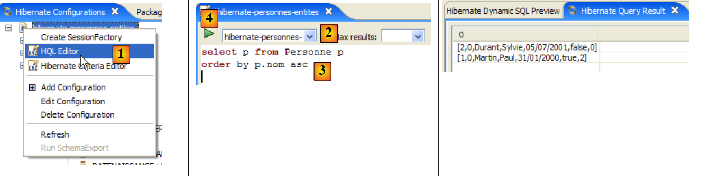 |
- In [1] wird ein Editor HQL
- im Editor HQL,
- in [2] wählt man die zu verwendende Hibernate-Konfiguration aus, falls mehrere vorhanden sind
- in [3] gibt man den Befehl JPQL ein, den man ausführen möchte
- in [4] wird er ausgeführt
- In [5] werden die Ergebnisse der Abfrage im Fenster [Hibernate Query Result] angezeigt. Hier können zwei Probleme auftreten:
- Es wird nichts angezeigt (keine Zeile). Die Hibernate-Konsole hat den Inhalt von [persistence.xml] verwendet, um eine Verbindung zu SGBD herzustellen. Diese Konfiguration enthält jedoch eine Eigenschaft, die anweist, die Datenbank zu leeren:
<property name="hibernate.hbm2ddl.auto" value="create" />
Man muss daher die Anwendung [InitDB] erneut ausführen, bevor man den oben genannten Befehl JPQL erneut ausführt.
- (Fortsetzung)
- Das Fenster [Hibernate Query Result] ist nicht vorhanden. Es wird über [Window / Show View / ...] angefordert.
Das Fenster [Hibernate Dynamic SQL preview] (unten: [1]) zeigt die Abfrage SQL an, die ausgeführt wird, um den Befehl JPQL auszuführen, den man gerade schreibt. Sobald die Syntax des Befehls JPQL korrekt ist, erscheint der entsprechende Befehl SQL in diesem Fenster:
 |
- In [2] löschen wir den vorherigen Befehl HQL
- In [3] wird ein neuer Befehl ausgeführt
- Bei [4] wird das Ergebnis
- in [5] wird der Befehl SQL, der auf der Grundlage
Der Editor HQL bietet eine Hilfe zum Schreiben von Befehlen HQL:
 |
- in [1]: Sobald der Editor erkennt, dass p ein Objekt Personne ist, kann er uns beim Tippen die Felder von p vorschlagen.
- in [2]: ein falscher Befehl HQL. Es muss „where p.marie=true“ geschrieben werden.
- bei [3]: Der Fehler wird im Fenster [SQL Preview] gemeldet
Wir bitten den Leser, weitere Befehle HQL / JPQL auf der Basis auszuführen.
2.1.13. Ein zweiter Client JPA
Kehren wir aus der Java-Perspektive zum Projekt zurück:
|
- [InitDB.java] ist ein Programm, das einige Zeilen in die Tabelle [jpa01_personne] der Datenbank einfügte. Die Untersuchung seines Codes ermöglichte es uns, erste Erkenntnisse über API und JPA zu gewinnen.
- [Main.java] ist ein Programm, das die Operationen CRUD an der Tabelle [jpa01_personne] durchführt. Die Untersuchung seines Codes wird es uns ermöglichen, auf die grundlegenden Konzepte des Persistenzkontexts und des Lebenszyklus der Objekte in diesem Kontext zurückzukommen.
2.1.13.1. Die Struktur des Codes
[Main.java] führt eine Reihe von Tests nacheinander aus, von denen jeder darauf abzielt, einen bestimmten Aspekt von JPA zu veranschaulichen:
 |
Die Methode [main]
- ruft nacheinander die Methoden test1 bis test11 auf. Wir werden den Code jeder dieser Methoden separat vorstellen.
- verwendet darüber hinaus private Hilfsmethoden: clean, dump, log, getEntityManager, getNewEntityManager.
Wir stellen die Methode main und die sogenannten Hilfsmethoden vor:
package tests;
...
import entites.Personne;
@SuppressWarnings("unchecked")
public class Main {
// Konstanten
private final static String TABLE_NAME = "jpa01_personne";
// Persistenzkontext
private static EntityManagerFactory emf = Persistence.createEntityManagerFactory("jpa");
private static EntityManager em = null;
// Gemeinsam genutzte Objekte
private static Personne p1, p2, newp1;
public static void main(String[] args) throws Exception {
// Datenbankbereinigung
log("clean");clean();
// Tabellenauszug
dump();
// Test1
log("test1");test1();
...
// Test11
log("test11");test11();
// Persistenzkontext beenden
if (em.isOpen())
em.close();
// Schließen von EntityManagerFactory
emf.close();
}
// aktuelles EntityManager abrufen
private static EntityManager getEntityManager() {
if (em == null || !em.isOpen()) {
em = emf.createEntityManager();
}
return em;
}
// einen neuen EntityManager abrufen
private static EntityManager getNewEntityManager() {
if (em != null && em.isOpen()) {
em.close();
}
em = emf.createEntityManager();
return em;
}
// Tabelleninhalt anzeigen
private static void dump() {
// aktueller Persistenzkontext
EntityManager em = getEntityManager();
// Transaktion starten
EntityTransaction tx = em.getTransaction();
tx.begin();
// Personen anzeigen
System.out.println("[personnes]");
for (Object p : em.createQuery("select p from Personne p order by p.nom asc").getResultList()) {
System.out.println(p);
}
// Transaktionsende
tx.commit();
}
// BD zurücksetzen
private static void clean() {
// Persistenzkontext
EntityManager em = getEntityManager();
// Transaktionsbeginn
EntityTransaction tx = em.getTransaction();
tx.begin();
// Elemente aus der Tabelle löschen PERSONNES
em.createNativeQuery("delete from " + TABLE_NAME).executeUpdate();
// Transaktionsende
tx.commit();
}
// Protokolle
private static void log(String message) {
System.out.println("main : ----------- " + message);
}
// Objekte anlegen
public static void test1() throws ParseException {
...
}
// Objekt im Kontext ändern
public static void test2() {
...
}
// Objekte abfragen
public static void test3() {
...
}
// Objekt aus dem Persistenzkontext löschen
public static void test4() {
....
}
// Lösen, erneut anfügen und ändern
public static void test5() {
...
}
// ein Objekt löschen, das nicht zum Persistenzkontext gehört
public static void test6() {
...
}
// ein Objekt ändern, das nicht zum Persistenzkontext gehört
public static void test7() {
...
}
// ein Objekt wieder an den Persistenzkontext anfügen
public static void test8() {
...
}
// Eine SELECT-Abfrage löst eine Synchronisation aus
// der Datenbank mit dem Persistenzkontext
public static void test9() {
....
}
// Versionskontrolle (optimistisches Locking)
public static void test10() {
...
}
// Rollback einer Transaktion
public static void test11() throws ParseException {
...
}
}
- Zeile 13: Das EMF-Objekt EntityManagerFactory, das aus der in [persistence.xml] definierten JPA-Persistenz-Einheit erstellt wurde. Damit können wir im Verlauf der Anwendung verschiedene Persistenzkontexte erstellen.
- Zeile 14: Ein noch nicht initialisierter Persistenzkontext EntityManager em
- Zeile 17: drei Objekte [Personne], die von den Tests gemeinsam genutzt werden
- Zeile 21: Die Tabelle jpa01_personne wird geleert und anschließend in Zeile 24 angezeigt, um sicherzustellen, dass von einer leeren Tabelle ausgegangen wird.
- Zeilen 27–31: Abfolge der Tests
- Zeilen 34–35: Schließen des Persistenzkontexts, falls dieser geöffnet war.
- Zeile 38: Schließen des Objekts EntityManagerFactory emf.
- Zeilen 42–47: Die Methode [getEntityManager] macht das EntityManager (bzw. den Persistenzkontext) zum aktuellen oder erstellt ein neues, falls es noch nicht existiert (Zeilen 43–44).
- Zeilen 50–56: Die Methode [getNewEntityManager] legt einen neuen Persistenzkontext an. Falls zuvor bereits einer existierte, wird dieser geschlossen (Zeilen 51–52)
- Zeilen 59–72: Die Methode [dump] zeigt den Inhalt der Tabelle [jpa01_personne] an. Dieser Code wurde bereits in [InitDB] verwendet.
- Zeilen 75–85: Die Methode [clean] leert die Tabelle [jpa01_personne]. Dieser Code kam bereits in [InitDB] vor.
- Zeilen 88–90: Die Methode [log] gibt die als Parameter übergebene Meldung auf der Konsole aus, damit sie bemerkt wird.
Wir können nun mit der Untersuchung der Tests fortfahren.
2.1.13.2. Test 1
Der Code für Test1 lautet wie folgt:
// Erstellung von Objekten
public static void test1() throws ParseException {
// Persistenzkontext
EntityManager em = getEntityManager();
// Anlegen von Personen
p1 = new Personne("Martin", "Paul", new SimpleDateFormat("dd/MM/yy").parse("31/01/2000"), true, 2);
p2 = new Personne("Durant", "Sylvie", new SimpleDateFormat("dd/MM/yy").parse("05/07/2001"), false, 0);
// Transaktion starten
EntityTransaction tx = em.getTransaction();
tx.begin();
// Persistenz von Personen
em.persist(p1);
em.persist(p2);
// Transaktionsende
tx.commit();
// Tabelle wird angezeigt
dump();
}
Dieser Code kam bereits in [InitDB] vor: Er legt zwei Personen an und fügt sie dem Persistenzkontext hinzu.
- Zeile 4: Der aktuelle Persistenzkontext wird abgefragt
- Zeilen 6–7: Die beiden Personen werden angelegt
- Zeilen 9–15: Die beiden Personen werden innerhalb einer Transaktion in den Persistenzkontext aufgenommen.
- Zeile 15: Durch das Commit der Transaktion erfolgt eine Synchronisation des Persistenzkontexts mit der Datenbank. Die beiden Personen werden in die Tabelle [jpa01_personne] aufgenommen.
- Zeile 17: Die Tabelle wird angezeigt
Die Konsolenausgabe dieses ersten Tests sieht wie folgt aus:
main : ----------- test1
[personnes]
[2,0,Durant,Sylvie,05/07/2001,false,0]
[1,0,Martin,Paul,31/01/2000,true,2]
2.1.13.3. Test 2
Der Code für Test 2 lautet wie folgt:
// Objekt im Kontext ändern
public static void test2() {
// Persistenzkontext
EntityManager em = getEntityManager();
// Transaktion starten
EntityTransaction tx = em.getTransaction();
tx.begin();
// Anzahl der Kinder von p1 erhöhen
p1.setNbenfants(p1.getNbenfants() + 1);
// Änderung des Familienstands
p1.setMarie(false);
// Das Objekt p1 wird automatisch gesichert (Dirty Checking)
// bei der nächsten Synchronisierung (Commit oder Select)
// Transaktion beendet
tx.commit();
// die neue Tabelle wird angezeigt
dump();
}
- Ziel von Test 2 ist es, ein Objekt im Persistenzkontext zu ändern und anschließend den Inhalt der Tabelle anzuzeigen, um zu überprüfen, ob die Änderung stattgefunden hat
- Zeile 4: Der aktuelle Persistenzkontext wird abgerufen
- Zeilen 6–7: Die Vorgänge werden in einer Transaktion ausgeführt
- Zeilen 9, 11: Die Anzahl der Kinder der Person p1 sowie deren Familienstand werden geändert
- Zeile 15: Ende der Transaktion, d. h. Synchronisierung des Persistenzkontexts mit der Datenbank
- Zeile 17: Anzeige der Tabelle
Die Konsolenausgabe von Test 2 lautet wie folgt:
- Zeile 4: Die Person p1 vor der Änderung
- Zeile 8: Die Person p1 nach der Änderung. Es ist zu beachten, dass ihre Versionsnummer auf 1 gestiegen ist. Diese wird bei jeder Aktualisierung der Zeile um 1 erhöht.
2.1.13.4. Test 3
Der Code für Test 3 lautet wie folgt:
// Objekte abfragen
public static void test3() {
// Persistenzkontext
EntityManager em = getEntityManager();
// Transaktion starten
EntityTransaction tx = em.getTransaction();
tx.begin();
// Person p1 wird angefordert
Personne p1b = em.find(Personne.class, p1.getId());
// Da p1 bereits im Persistenzkontext vorhanden ist, erfolgte kein Zugriff auf die Datenbank
// p1b und p1 sind dieselben Referenzen
System.out.format("p1==p1b ? %s%n", p1 == p1b);
// Das Abfragen eines nicht vorhandenen Objekts führt dazu, dass ein Zeiger auf null gesetzt wird
Personne px = em.find(Personne.class, -4);
System.out.format("px==null ? %s%n", px == null);
// Transaktion beendet
tx.commit();
}
- Test 3 befasst sich mit der Methode [EntityManager.find], mit der ein Objekt aus der Datenbank abgerufen und in den Persistenzkontext übernommen werden kann. Wir erklären die Transaktion, die in allen Tests stattfindet, nicht mehr gesondert, es sei denn, sie wird auf ungewöhnliche Weise verwendet.
- Zeile 9: Vom Persistenzkontext wird die Person abgefragt, die denselben Primärschlüssel wie die Person p1 hat. Es gibt zwei Fälle:
- p1 befindet sich bereits im Persistenzkontext. Das ist hier der Fall. Dann erfolgt kein Zugriff auf die Datenbank. Die Methode find gibt lediglich eine Referenz auf das persistierte Objekt zurück.
- p1 befindet sich nicht im Persistenzkontext. Dann erfolgt ein Zugriff auf die Datenbank über den angegebenen Primärschlüssel. Die abgerufene Zeile wird in den Persistenzkontext aufgenommen, und find gibt die Referenz auf dieses neue persistierte Objekt zurück.
- Zeile 12: Es wird überprüft, ob find bereits die Referenz auf das Objekt p1 im Kontext zurückgegeben hat
- Zeile 14: Es wird ein Objekt angefordert, das weder im Persistenzkontext noch in der Datenbank existiert. Die Methode find gibt daraufhin den Zeiger null zurück. Dies wird in Zeile 15 überprüft.
Die Konsolenausgabe von Test 3 lautet wie folgt:
2.1.13.5. Test 4
Der Code für Test 4 lautet wie folgt:
// Ein Objekt aus dem Persistenzkontext löschen
public static void test4() {
// Persistenzkontext
EntityManager em = getEntityManager();
// Transaktion starten
EntityTransaction tx = em.getTransaction();
tx.begin();
// Das persistierte Objekt p2 wird gelöscht
em.remove(p2);
// Transaktion beenden
tx.commit();
// Die neue Tabelle wird angezeigt
dump();
}
- Test 4 befasst sich mit der Methode [EntityManager.remove], mit der ein Element aus dem Persistenzkontext und somit aus der Datenbank gelöscht werden kann.
- Zeile 9: Die Person p2 wird aus dem Persistenzkontext entfernt
- Zeile 11: Synchronisierung des Kontexts mit der Datenbank
- Zeile 13: Anzeige der Tabelle. Normalerweise sollte die Person p2 nicht mehr vorhanden sein.
Die Konsolenausgabe von Test 4 lautet wie folgt:
- Zeile 3: Die Person p2 in test1
- Zeilen 12–14: Nach Abschluss von test4 existiert sie nicht mehr.
2.1.13.6. Test 5
Der Code für Test 5 lautet wie folgt:
// Trennen, erneut verbinden und ändern
public static void test5() {
// neuer Persistenzkontext
EntityManager em = getNewEntityManager();
// Transaktion starten
EntityTransaction tx = em.getTransaction();
tx.begin();
// p1 wurde getrennt
Personne oldp1=p1;
// p1 wird wieder an den neuen Kontext angehängt
p1 = em.find(Personne.class, p1.getId());
// Überprüfung
System.out.format("p1==oldp1 ? %s%n", p1 == oldp1);
// Transaktionsende
tx.commit();
// Anzahl der untergeordneten Elemente von p1 erhöhen
p1.setNbenfants(p1.getNbenfants() + 1);
// Die neue Tabelle wird angezeigt
dump();
}
- Test 5 befasst sich mit der Lebensdauer von persistenten Objekten über mehrere aufeinanderfolgende Persistenzkontexte hinweg. Bislang hatten wir in den verschiedenen Tests immer denselben Persistenzkontext verwendet.
- Zeile 4: Ein neuer Persistenzkontext wird angefordert. Die Methode [getNewEntityManager] schließt den vorherigen und eröffnet einen neuen. Dies hat zur Folge, dass die von der Anwendung verwalteten Objekte p1 und p2 sich nicht mehr in einem persistenten Zustand befinden. Sie gehörten zu einem Kontext, der geschlossen wurde. Man sagt, sie befinden sich in einem „detached“-Zustand. Sie gehören nicht zum neuen Persistenzkontext.
- Zeilen 6–7: Beginn der Transaktion. Diese wird hier auf ungewöhnliche Weise verwendet.
- Zeile 9: Die Adresse des nun losgelösten Objekts p1 wird notiert.
- Zeile 11: Die Person p1 (mit dem Primärschlüssel von p1) wird vom Persistenzkontext angefordert. Da es sich um einen neuen Kontext handelt, ist die Person p1 dort nicht vorhanden. Es erfolgt daher ein Zugriff auf die Datenbank. Das zurückgegebene Objekt wird in den neuen Kontext aufgenommen.
- Zeile 13: Es wird überprüft, ob das persistente Objekt p1 des Kontexts sich von dem Objekt oldp1 unterscheidet, bei dem es sich um das zuvor abgelöste Objekt p1 handelte.
- Zeile 15: Die Transaktion ist beendet
- Zeile 17: Das neue persistente Objekt p1 wird außerhalb der Transaktion geändert. Was passiert in diesem Fall? Das wollen wir wissen.
- Zeile 19: Die Tabelle wird angezeigt. Zur Erinnerung: Aufgrund des von der Methode dump ausgegebenen select erfolgt automatisch eine Synchronisierung des Persistenzkontexts mit der Datenbank.
Die Konsolenausgabe von Test 5 sieht wie folgt aus:
- Zeile 5: Die Methode find hat tatsächlich auf die Datenbank zugegriffen, sonst wären die beiden Zeiger gleich
- Zeilen 7 und 3: Die Anzahl der Kinder von p1 hat sich tatsächlich um 1 erhöht. Die außerhalb einer Transaktion vorgenommene Änderung wurde also berücksichtigt. Dies hängt tatsächlich von der verwendeten Methode SGBD ab. In einem SGBD wird ein Befehl SQL immer innerhalb einer Transaktion ausgeführt. Wenn der Client JPA nicht selbst eine explizite Transaktion startet, startet der SGBD eine implizite Transaktion. Es gibt zwei häufige Fälle:
- 1 – Jeder einzelne Befehl SQL ist Gegenstand einer Transaktion, die vor dem Befehl geöffnet und nach dem Befehl geschlossen wird. Man spricht hier vom Autocommit-Modus. Es ist also so, als würde der Client JPA für jeden Befehl SQL eine Transaktion durchführen.
- 2 – Der Befehl SGBD befindet sich nicht im Autocommit-Modus und startet eine implizite Transaktion mit dem ersten Befehl SQL, den der Client JPA außerhalb einer Transaktion sendet, und überlässt es dem Client, diese zu schließen. Alle vom Client JPA gesendeten Befehle SQL sind dann Teil der impliziten Transaktion. Diese kann durch verschiedene Ereignisse beendet werden: Der Client schließt die Verbindung, startet eine neue Transaktion, …
Wir befinden uns hier in einer Situation, die von der Konfiguration von SGBD abhängt. Es handelt sich also um nicht portierbaren Code. Wir werden etwas später einen Code ohne Transaktionen zeigen und sehen, dass nicht alle SGBD in Bezug auf diesen Code das gleiche Verhalten aufweisen. Wir betrachten daher das Arbeiten ohne Transaktionen als Programmierfehler.
- Zeile 7: Man beachte, dass die Versionsnummer auf 2 geändert wurde.
2.1.13.7. Test 6
Der Code für Test 6 lautet wie folgt:
// Ein Objekt löschen, das nicht zum Persistenzkontext gehört
public static void test6() {
// neuer Persistenzkontext
EntityManager em = getNewEntityManager();
// Transaktion starten
EntityTransaction tx = em.getTransaction();
tx.begin();
// p1, das nicht zum neuen Kontext gehört, wird gelöscht
try {
em.remove(p1);
// Transaktion beenden
tx.commit();
} catch (RuntimeException e1) {
System.out.format("Erreur à la suppression de p1 : [%s,%s]%n", e1.getClass().getName(), e1.getMessage());
// Die Transaktion wird zurückgesetzt
try {
if (tx.isActive())
tx.rollback();
} catch (RuntimeException e2) {
System.out.format("Erreur au rollback [%s,%s]%n", e2.getClass().getName(), e2.getMessage());
}
}
// Die neue Tabelle wird angezeigt
dump();
}
- Test 6 versucht, ein Objekt zu löschen, das nicht zum Persistenzkontext gehört.
- Zeile 4: Ein neuer Persistenzkontext wird angefordert. Der alte wird somit geschlossen, und die darin enthaltenen Objekte werden freigegeben. Dies ist der Fall beim Objekt p1 aus dem vorherigen Test 5.
- Zeilen 6–7: Beginn der Transaktion.
- Zeile 10: Das losgelöste Objekt p1 wird gelöscht. Da bekannt ist, dass dies eine Ausnahme auslöst, wurde die Operation mit einem try/catch-Block umschlossen.
- Zeile 12: Das Commit findet nicht statt.
- Zeilen 16–21: Eine Transaktion muss mit einem commit (alle Operationen der Transaktion werden bestätigt) oder einem rollback (alle Operationen der Transaktion werden rückgängig gemacht) enden. Da eine Ausnahme aufgetreten ist, führen wir einen rollback für die Transaktion durch. Es gibt nichts rückgängig zu machen, da der einzige Vorgang der Transaktion fehlgeschlagen ist, aber der rollback beendet die Transaktion. Dies ist das erste Mal, dass wir den Vorgang [EntityTransaction].rollback verwenden. Wir hätten dies bereits in den ersten Beispielen tun sollen. Um den Code einfach zu halten, haben wir darauf verzichtet. Der Leser sollte jedoch bedenken, dass der Fall des rollback der Transaktion im Code immer vorgesehen sein muss.
- Zeile 24: Die Tabelle wird angezeigt. Normalerweise sollte sie sich nicht geändert haben.
Die Konsolenausgabe von Test 6 sieht wie folgt aus:
- Zeile 6: Das Löschen von p1 ist fehlgeschlagen. Die Ausnahmemeldung erklärt, dass versucht wurde, ein losgelöstes Objekt zu löschen, das also nicht Teil des Kontexts ist. Dies ist nicht möglich.
- Zeile 8: Die Person p1 ist immer noch vorhanden.
2.1.13.8. Test 7
Der Code für Test 7 lautet wie folgt:
// Ein Objekt ändern, das nicht zum Persistenzkontext gehört
public static void test7() {
// neuer Persistenzkontext
EntityManager em = getNewEntityManager();
// Transaktion starten
EntityTransaction tx = em.getTransaction();
tx.begin();
// Die Anzahl der untergeordneten Elemente von p1, die nicht zum neuen Kontext gehören, wird erhöht
p1.setNbenfants(p1.getNbenfants() + 1);
// Transaktion beenden
tx.commit();
// Die neue Tabelle wird angezeigt – sie dürfte sich nicht geändert haben
dump();
}
- Test 7 versucht, ein Objekt zu ändern, das nicht zum Persistenzkontext gehört, und zu prüfen, welche Auswirkungen dies auf die Datenbank hat. Man kann davon ausgehen, dass es keine gibt. Das zeigen auch die Testergebnisse.
- Zeile 4: Ein neuer Persistenzkontext wird angefordert. Wir haben also einen neuen Kontext ohne darin gespeicherte Objekte.
- Zeilen 6–7: Beginn der Transaktion.
- Zeile 9: Das abgelöste Objekt p1 wird geändert. Dies ist eine Operation, die den Persistenzkontext em nicht betrifft. Es ist daher nicht mit einer Ausnahme oder Ähnlichem zu rechnen. Es handelt sich um eine grundlegende Operation an einem POJO.
- Zeile 11: Der Commit bewirkt die Synchronisierung des Kontexts mit der Datenbank. Dieser Kontext ist leer. Die Datenbank wird daher nicht verändert.
- Zeile 24: Die Tabelle wird angezeigt. Normalerweise sollte sie sich nicht verändert haben.
Die Konsolenausgabe von Test 7 sieht wie folgt aus:
- Zeile 7: Die Person p1 hat sich in der Datenbank nicht verändert. Für den nächsten Test sollten wir uns jedoch merken, dass die Anzahl ihrer Kinder im Speicher nun bei 5 liegt.
2.1.13.9. Test 8
Der Code für Test 8 lautet wie folgt:
// Ein Objekt wieder an den Persistenzkontext anfügen
public static void test8() {
// neuer Persistenzkontext
EntityManager em = getNewEntityManager();
// Transaktion starten
EntityTransaction tx = em.getTransaction();
tx.begin();
// Das getrennte Objekt p1 wird wieder an den neuen Kontext angehängt
newp1 = em.merge(p1);
// Nun ist newp1 Teil des Kontexts, nicht p1
// Transaktionsende
tx.commit();
// Die neue Tabelle wird angezeigt – die Anzahl der Kinder von p1 muss sich geändert haben
dump();
}
- Test 8 bindet ein abgelöstes Objekt wieder an den Persistenzkontext.
- Zeile 4: Ein neuer Persistenzkontext wird angefordert. Wir haben also einen neuen Kontext ohne persistente Objekte darin.
- Zeilen 6–7: Beginn der Transaktion.
- Zeile 9: Das abgelöste Objekt p1 wird wieder an den Persistenzkontext angehängt. Der Merge-Vorgang kann mehrere Operationen umfassen:
- Fall 1: Im Persistenzkontext existiert ein persistentes Objekt ps1 mit demselben Primärschlüssel wie das abgelöste Objekt p1. Der Inhalt von p1 wird in ps1 kopiert, und merge verweist auf ps1.
- Fall 2: Im Persistenzkontext existiert kein persistentes Objekt ps1 mit demselben Primärschlüssel wie das abgelöste Objekt p1. Die Datenbank wird dann abgefragt, um festzustellen, ob das gesuchte Objekt in der Datenbank vorhanden ist. Wenn ja, wird dieses Objekt in den Persistenzkontext übernommen, wird zum persistenten Objekt ps1 und es gilt wieder Fall 1.
- Fall 3: Weder im Persistenzkontext noch in der Datenbank existiert ein Objekt mit demselben Primärschlüssel wie das abgelöste Objekt p1. Es wird dann ein neues Objekt [Personne] (new) erstellt und anschließend in den Persistenzkontext aufgenommen. Anschließend kehrt man zu Fall 1 zurück.
- Fazit: Das entkoppelte Objekt p1 bleibt entkoppelt. Die Operation merge gibt eine Referenz (hier newp1) auf das persistente Objekt ps1 zurück, das aus merge stammt. Die Client-Anwendung muss nun mit dem persistenten Objekt ps1 arbeiten und nicht mit dem abgelösten Objekt p1.
- Es ist ein Unterschied zwischen den Fällen 1 und 3 hinsichtlich des für das Objekt merge geplanten Auftrags SQL zu beachten: In den Fällen 1 und 2 handelt es sich um den Befehl UPDATE, während es in Fall 3 ein Befehl INSERT ist.
- Zeile 12: Der Commit bewirkt die Synchronisierung des Kontexts mit der Datenbank. Dieser Kontext ist nicht mehr leer. Er enthält das Objekt newp1. Dieses wird in der Datenbank gespeichert.
- Zeile 24: Die Tabelle wird zur Überprüfung angezeigt.
Die Konsolenausgabe von Test 8 sieht wie folgt aus:
- Die Anzahl der Kinder von p1 betrug in Test 6 (Zeile 4) 4, wurde dann in Test 7 auf 5 erhöht, aber nicht in der Datenbank gespeichert (Zeile 7). Nach dem Eintrag „merge“ wurde „newp1“ in der Datenbank gespeichert: In Zeile 10 sind nun tatsächlich 5 Kinder vorhanden.
- Zeile 10: Die Versionsnummer von newp1 wurde auf 3 geändert.
2.1.13.10. Test 9
Der Code für Test 9 lautet wie folgt:
// Eine SELECT-Abfrage löst eine Synchronisierung aus
// der Datenbank mit dem Persistenzkontext
public static void test9() {
// Persistenzkontext
EntityManager em = getEntityManager();
// Transaktion starten
EntityTransaction tx = em.getTransaction();
tx.begin();
// Die Anzahl der Kinder von newp1 wird erhöht
newp1.setNbenfants(newp1.getNbenfants() + 1);
// Anzeige der Personen – die Anzahl der Kinder von newp1 muss sich geändert haben
System.out.println("[personnes]");
for (Object p : em.createQuery("select p from Personne p order by p.nom asc").getResultList()) {
System.out.println(p);
}
// Transaktionsende
tx.commit();
}
- Test 9 soll den Mechanismus der Kontextsynchronisation veranschaulichen, der automatisch vor einem select stattfindet.
- Zeile 5: Der Persistenzkontext wird nicht geändert. newp1 ist also darin enthalten.
- Zeilen 7–8: Beginn der Transaktion.
- Zeile 10: Die Anzahl der untergeordneten Elemente des persistenten Objekts newp1 wird um 1 erhöht (5 -> 6).
- Zeilen 12–15: Die Tabelle wird mit einem SELECT-Befehl angezeigt. Der Kontext wird vor der Ausführung von select mit der Datenbank synchronisiert.
- Zeile 17: Ende der Transaktion
Um die Synchronisation zu sehen, aktivieren wir die Anzeige der Hibernate-Protokolle im Modus DEBUG (log4j.properties):
# Root-Logger-Option
log4j.rootLogger=ERROR, stdout
# Hibernate-Protokollierungsoptionen (INFO zeigt nur Startmeldungen an)
log4j.logger.org.hibernate=DEBUG
Die Konsolenausgabe von Test 9 sieht wie folgt aus:
- Zeile 1: Test 9 startet
- Zeilen 2–6: Die JDBC-Transaktion beginnt. Der Autocommit-Modus von SGBD ist deaktiviert (Zeile 5)
- Zeile 7: Ausgabe, ausgelöst durch Zeile 12 des Java-Codes. Die folgenden Zeilen des Java-Codes lösen ein select aus und damit eine Synchronisierung des Persistenzkontexts mit der Datenbank.
- Zeile 8: Der Befehl JPQL, den wir ausführen wollen, wurde bereits ausgeführt. Hibernate findet ihn in seinem Cache für „vorbereitete Abfragen“.
- Zeile 9: Hibernate kündigt an, dass es einen Flush des Persistenzkontexts durchführen wird
- Zeilen 11–12: Hibernate (Hb) stellt fest, dass die Entität „Person#1“ (mit Primärschlüssel 1) geändert wurde (dirty).
- Zeilen 12–13: Hb meldet, dass es dieses Element aktualisiert und dessen Versionsnummer von 3 auf 4 erhöht.
- Zeile 15: Die Synchronisierung des Kontexts führt zu 0 Einfügungen, 1 Aktualisierung (Update) und 0 Löschungen (Delete)
- Zeilen 17–34: Kontext-Synchronisierung (Flush). Zu beachten: die Versionserhöhung (Zeile 19), der vorbereitete Befehl SQL update (Zeile 21), die Werte der Parameter des Befehls update (Zeilen 24–31).
- Zeile 35: Der Auftrag select beginnt
- Zeile 38: Der Auftrag SQL, der ausgeführt wird
- Zeile 40: Der Auftrag select liefert nur eine Zeile zurück
- Zeile 42: Hb stellt fest, dass sich die Entität Personne#1, die die SELECT-Anweisung aus der Datenbank zurückgegeben hat, bereits in seinem Persistenzkontext befindet. Daher kopiert er die aus der Datenbank erhaltene Zeile nicht in den Kontext – ein Vorgang, den er als „Hydratation“ bezeichnet.
- Zeile 43: Er prüft, ob die von select zurückgegebenen Objekte Abhängigkeiten (in der Regel Fremdschlüssel) aufweisen, die ebenfalls geladen werden müssten (nicht-lazy-Sammlungen). Hier gibt es keine.
- Zeile 44: Anzeige, ausgelöst durch den Java-Code
- Zeile 45: Beendigung der vom Java-Code angeforderten JDBC-Transaktion
- Zeile 46: Die automatische Synchronisierung des Kontexts, die während der Ausführung von commit stattfindet, beginnt.
- Zeile 48: Hb stellt fest, dass sich der Kontext seit der letzten Synchronisation nicht geändert hat.
- Zeile 50: Ende von commit.
Auch hier erweisen sich die Hibernate-Protokolle im Modus DEBUG als sehr nützlich, um genau zu erfahren, was Hibernate tut.
2.1.13.11. Test 10
Der Code für Test10 lautet wie folgt:
// Versionskontrolle (optimistisches Locking)
public static void test10() {
// Persistenzkontext
EntityManager em = getEntityManager();
// Transaktionsstart
EntityTransaction tx = em.getTransaction();
tx.begin();
// Version von newp1 direkt in der Datenbank erhöhen (native Abfrage)
em.createNativeQuery(String.format("update %s set VERSION=VERSION+1 WHERE ID=%d", TABLE_NAME, newp1.getId())).executeUpdate();
// Transaktionsende
tx.commit();
// Start einer neuen Transaktion
tx = em.getTransaction();
tx.begin();
// Die Anzahl der Kinder von newp1 wird erhöht
newp1.setNbenfants(newp1.getNbenfants() + 1);
// Transaktion beenden – sie muss fehlschlagen, da „newp1“ nicht mehr die richtige Version hat
try {
tx.commit();
} catch (RuntimeException e1) {
System.out.format("Erreur lors de la mise à jour de newp1 [%s,%s,%s,%s]%n", e1.getClass().getName(), e1.getMessage(), e1.getCause().getClass().getName(), e1.getCause().getMessage());
// Die Transaktion wird zurückgesetzt
try {
if (tx.isActive())
tx.rollback();
} catch (RuntimeException e2) {
System.out.format("Erreur au rollback [%s,%s]%n", e2.getClass().getName(), e2.getMessage());
}
}
// Der nicht mehr aktuelle Kontext wird geschlossen
em.close();
// Tabellen-Dump – die Version von p1 muss sich geändert haben
dump();
}
- Test 10 soll den Mechanismus veranschaulichen, der durch das Feld version der @Entity „Person“ eingeführt wird, die mit dem Attribut JPA @Version versehen ist. Wir haben erläutert, dass diese Annotation bewirkt, dass in der Datenbank der Wert der Spalte, die mit der Annotation @Version verknüpft ist, bei jedem update-Vorgang in der Zeile, zu der sie gehört, erhöht wird. Dieser Mechanismus, der auch als optimistische Sperre (optimistic locking) bezeichnet wird, erfordert, dass der Client, der ein Objekt O in der Datenbank ändern möchte, über die neueste Version dieses Objekts verfügt. Verfügt er nicht darüber, bedeutet dies, dass das Objekt seit dem Abruf geändert wurde, und er muss darüber informiert werden.
- Zeile 4: Der Persistenzkontext wird nicht geändert. newp1 befindet sich also darin.
- Zeilen 6–7: Beginn einer Transaktion.
- Zeile 9: Die Version des Objekts newp1 wird direkt in der Datenbank um 1 erhöht (4 -> 5). Abfragen vom Typ nativeQuery umgehen den Persistenzkontext und greifen direkt auf die Datenbank zu. Das Ergebnis ist, dass das persistente Objekt newp1 und sein Abbild in der Datenbank nicht mehr dieselbe Version haben.
- Zeile 10: Ende der ersten Transaktion
- Zeilen 13–14: Beginn einer zweiten Transaktion
- Zeile 16: Die Anzahl der untergeordneten Objekte des persistenten Objekts newp1 wird um 1 erhöht (6 -> 7).
- Zeile 19: Ende der Transaktion. Es findet also eine Synchronisation statt. Diese führt zur Aktualisierung der Anzahl der untergeordneten Elemente von newp1 in der Datenbank. Diese Aktualisierung schlägt fehl, da das persistente Objekt newp1 die Version 4 hat, während das zu aktualisierende Objekt in der Datenbank die Version 5 hat. Es wird eine Ausnahme ausgelöst, was die Verwendung von „try“ und „catch“ im Code rechtfertigt.
- Zeile 21: Die Ausnahme und ihre Ursache werden angezeigt.
- Zeile 25: Rollback der Transaktion
- Zeile 33: Anzeige der Tabelle: Man sollte sehen, dass die Version von newp1 in der Datenbank 5 ist.
Die Konsolenausgabe von Test 10 lautet wie folgt:
- Zeile 5: Der Commit löst tatsächlich eine Ausnahme aus. Es handelt sich um den Typ [javax.persistence.RollbackException]. Die zugehörige Meldung ist vage. Betrachtet man die Ursache dieser Ausnahme (Exception.getCause), so stellt man fest, dass es sich um eine Hibernate-Ausnahme handelt, die darauf zurückzuführen ist, dass versucht wird, eine Zeile in der Datenbank zu ändern, ohne über die richtige Version zu verfügen.
- Zeile 7: Man sieht, dass die Version von newp1 in der Datenbank durch nativeQuery tatsächlich auf 5 geändert wurde.
2.1.13.12. Test 11
Der Code für Test11 lautet wie folgt:
// Rollback einer Transaktion
public static void test11() throws ParseException {
// Persistenzkontext
EntityManager em = getEntityManager();
// Transaktionsstart
EntityTransaction tx = null;
try {
tx = em.getTransaction();
tx.begin();
// p1 wird wieder an den Kontext angehängt, indem es aus der Datenbank abgerufen wird
p1 = em.find(Personne.class, p1.getId());
// Die Anzahl der Kinder von p1 wird erhöht
p1.setNbenfants(p1.getNbenfants() + 1);
// Anzeige der Personen – die Anzahl der Kinder von p1 muss sich geändert haben
System.out.println("[personnes]");
for (Object p : em.createQuery("select p from Personne p order by p.nom asc").getResultList()) {
System.out.println(p);
}
// Anlegen von zwei Personen mit identischem Namen, was gemäß DDL nicht zulässig ist
Personne p3 = new Personne("X", "Paul", new SimpleDateFormat("dd/MM/yy").parse("31/01/2000"), true, 2);
Personne p4 = new Personne("X", "Paul", new SimpleDateFormat("dd/MM/yy").parse("31/01/2000"), true, 2);
// Persistenz der Personen
em.persist(p3);
em.persist(p4);
// Transaktion beendet
tx.commit();
} catch (RuntimeException e1) {
// Es ist ein Problem aufgetreten
System.out.format("Erreur dans transaction [%s,%s,%s,%s,%s,%s]%n", e1.getClass().getName(), e1.getMessage(),
e1.getCause().getClass().getName(), e1.getCause().getMessage(), e1.getCause().getCause().getClass().getName(), e1.getCause().getCause()
.getMessage());
try {
if (tx.isActive())
tx.rollback();
} catch (RuntimeException e2) {
System.out.format("Erreur au rollback [%s]%n", e2.getMessage());
}
// Der aktuelle Kontext wird abgebrochen
em.clear();
}
// Dump – die Tabelle dürfte sich aufgrund des Rollbacks nicht geändert haben
dump();
}
- Test 11 befasst sich mit dem Mechanismus von rollback im Rahmen einer Transaktion. Eine Transaktion funktioniert nach dem Alles-oder-Nichts-Prinzip: Die darin enthaltenen Operationen SQL werden entweder alle erfolgreich ausgeführt (Commit) oder im Falle eines Fehlers bei einer der Operationen alle rückgängig gemacht (Rollback).
- Zeile 4: Es wird mit demselben Persistenzkontext fortgefahren. Der Leser erinnert sich vielleicht daran, dass der Kontext nach dem Absturz des vorherigen Tests geschlossen wurde. In diesem Fall liefert [getEntityManager] einen brandneuen, also leeren Kontext.
- Zeilen 7–27: Ein einziges „try/catch“-Block zur Abfangung der auftretenden Probleme
- Zeilen 8–9: Beginn einer Transaktion, die mehrere Operationen mit SQL enthalten wird
- Zeile 11: p1 wird in der Datenbank gesucht und in den Kontext aufgenommen
- Zeile 13: Die Anzahl der Kinder von p1 wird erhöht (6 → 7)
- Zeilen 15–18: Der Inhalt der Datenbank wird angezeigt, was eine Synchronisierung des Kontexts erzwingt. In der Datenbank ändert sich die Anzahl der Kinder von p1 auf 7, was die Konsolenausgabe bestätigen sollte.
- Zeilen 20–21: Erstellung von zwei Personen mit demselben Namen: p3 und p4. Das Feld „name“ der @Entity „Person“ hat jedoch das Attribut „unique=true“, was zur Folge hatte, dass eine Eindeutigkeitsbeschränkung für die Spalte „NOM“ der Tabelle „[jpa01_personne]“ erstellt wurde.
- Zeilen 23–24: Die Personen p3 und p4 werden in den Persistenzkontext aufgenommen.
- Zeile 26: Die Transaktion wird festgeschrieben. Es folgt eine zweite Synchronisierung des Kontexts, nachdem die erste bereits bei select stattgefunden hat. JPA wird zwei Befehle SQL und insert für die Personen p3 und p4 ausgeben. p3 wird eingefügt. Für p4 löst SGBD eine Ausnahme aus, da p4 denselben Namen wie p3 trägt. p4 wird daher nicht eingefügt, und der JDBC-Treiber gibt eine Ausnahme an den Client zurück.
- Zeile 27: Die Ausnahme wird behandelt
- Zeilen 29–31: Die Ausnahme und ihre beiden vorhergehenden Ursachen in der Ausnahmekette, die uns bis hierher geführt hat, werden angezeigt.
- Zeile 34: Wir führen ein Rollback der aktuell aktiven Transaktion durch. Diese begann in Zeile 9 des Java-Codes. Zuvor wurde eine Operation update durchgeführt, um die Anzahl der Kinder von p1 zu ändern, gefolgt von einer Operation insert für die Person p3. All dies wird durch den Rollback rückgängig gemacht.
- Zeile 39: Der Persistenzkontext wird geleert
- Zeile 42: Die Tabelle [jpa01_personne] wird angezeigt. Es muss überprüft werden, ob p1 weiterhin 6 Kinder hat und ob weder p3 noch p4 in der Tabelle enthalten sind.
Die Konsolenausgabe von Test 11 lautet wie folgt:
main : ----------- test11
[personnes]
[1,6,Martin,Paul,31/01/2000,false,7]
14:50:30,312 ERROR JDBCExceptionReporter:72 - Duplicate entry 'X' for key 2
Erreur dans transaction [javax.persistence.EntityExistsException,org.hibernate.exception.ConstraintViolationException: could not insert: [entites.Personne],org.hibernate.exception.ConstraintViolationException,could not insert: [entites.Personne],java.sql.SQLException,Duplicate entry 'X' for key 2]
[personnes]
[1,5,Martin,Paul,31/01/2000,false,6]
- Zeile 3: Die Anzahl der Kinder von p1 ist in der Datenbank von 6 auf 7 gestiegen, die Version von p1 wurde auf 6 aktualisiert.
- Zeile 4: Die beim Commit der Transaktion abgefangene Ausnahme. Bei genauer Betrachtung ist zu erkennen, dass die Ursache ein doppelter Schlüssel X (der Name) ist. Der Einfügevorgang von p4 löst diesen Fehler aus, da das bereits eingefügte p3 ebenfalls den Namen X trägt.
- Zeile 7: Die Tabelle nach dem Rollback. p1 hat wieder die Version 5 und die Anzahl der Kinder 6, p3 und p4 wurden nicht eingefügt.
2.1.13.13. Test 12
Der Code für Test12 lautet wie folgt:
// Wir machen dasselbe noch einmal, aber ohne die Transaktionen
// man erhält das gleiche Ergebnis wie zuvor mit den SGBD: FIREBIRD, ORACLE, XE, POSTGRES, MYSQL5
// zusammen mit SQLSERVER führt zu einer leeren Tabelle. Die Verbindung bleibt in einem Zustand, der die erneute Ausführung
// des Programms. Der Server muss dann neu gestartet werden.
// Das Gleiche gilt für SGBD Derby
// HSQL fügt die erste Person ein – es erfolgt kein Rollback
public static void test12() throws ParseException {
// p1 wird wieder angehängt
p1 = em.find(Personne.class, p1.getId());
// Die Anzahl der Kinder von p1 wird erhöht
p1.setNbenfants(p1.getNbenfants() + 1);
// Anzeige der Personen – die Anzahl der Kinder von p1 muss sich geändert haben
System.out.println("[personnes]");
for (Object p : em.createQuery("select p from Personne p order by p.nom asc").getResultList()) {
System.out.println(p);
}
// Erstellung von 2 Personen mit identischem Namen, was gemäß DDL verboten ist
Personne p3 = new Personne("X", "Paul", new SimpleDateFormat("dd/MM/yy").parse("31/01/2000"), true, 2);
Personne p4 = new Personne("X", "Paul", new SimpleDateFormat("dd/MM/yy").parse("31/01/2000"), true, 2);
// Persistenz der Personen
em.persist(p3);
em.persist(p4);
// Dump, der die Synchronisierung des EM-Kontexts mit der BD auslöst
try {
dump();
} catch (RuntimeException e3) {
System.out.format("Erreur dans dump [%s,%s,%s,%s]%n", e3.getClass().getName(), e3.getMessage(), e3.getCause().getClass().getName(), e3
.getCause().getMessage());
}
// Der aktuelle Kontext wird geschlossen
em.close();
// Dump
dump();
}
- Test 12 führt dieselben Schritte wie Test 11 durch, jedoch außerhalb einer Transaktion. Wir wollen sehen, was in diesem Fall passiert.
- Zeilen 1–6: zeigen die Testergebnisse mit verschiedenen SGBD:
- Mit einer Reihe von SGBD (Firebird, Oracle, MySQL5, Postgres) erhält man das gleiche Ergebnis wie bei Test 11. Dies lässt vermuten, dass diese SGBD von sich aus eine Transaktion initiiert haben, die alle bis zu demjenigen, der den Fehler verursacht hat, empfangenen SQL-Befehle umfasst, und dass sie selbst einen rollback initiiert haben.
- Zusammen mit anderen SGBD (SQL Server, Apache Derby) kommt es zu einem Absturz der Anwendung und/oder des SGBD.
- Bei den Transaktionen SGBD und HSQLDB scheint die von SGBD geöffnete Transaktion im Modus autocommit zu sein: Die Änderung der Anzahl der Kinder von p1 und das Einfügen von p3 werden dauerhaft gespeichert. Lediglich das Einfügen von p4 schlägt fehl.
Das Ergebnis hängt also von SGBD ab, was die Anwendung nicht portabel macht. Es ist zu beachten, dass Operationen am Persistenzkontext immer innerhalb einer Transaktion durchgeführt werden müssen.
2.1.14. Wechsel zu SGBD
Kehren wir zur Testarchitektur unseres aktuellen Projekts zurück:
 |
Die Client-Anwendung [3] sieht nur die Schnittstelle JPA [5]. Sie sieht weder deren tatsächliche Implementierung noch das Zielobjekt SGBD. Daher muss es möglich sein, diese beiden Elemente der Kette zu ändern, ohne Änderungen am Client [3] vornehmen zu müssen. Das versuchen wir nun zu überprüfen, indem wir zunächst SGBD ändern. Bisher hatten wir MySQL5 verwendet. Wir stellen sechs weitere vor, die in den Anhängen (Absatz 5) beschrieben sind, in der Hoffnung, dass sich darunter auch der Favorit des Lesers, SGBD, befindet.
In jedem Fall ist die im Eclipse-Projekt vorzunehmende Änderung einfach (siehe unten): Ersetzen Sie die Konfigurationsdatei persistence.xml [1] der Ebene JPA durch eine der Dateien aus dem Ordner conf [2] des Projekts. Die Treiber JDBC und SGBD sind bereits in den Bibliotheken [jpa-divers], [3] und [4] vorhanden.
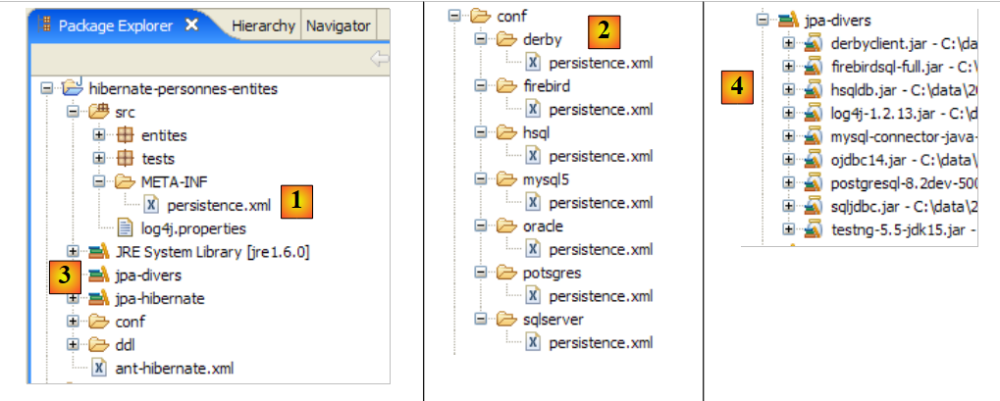 |
2.1.14.1. Oracle 10g Express
Oracle 10g Express wird im Anhang unter Abschnitt 5.7 vorgestellt. Die Oracle-Datei persistence.xml lautet wie folgt:
<?xml version="1.0" encoding="UTF-8"?>
<persistence version="1.0" xmlns="http://java.sun.com/xml/ns/persistence">
<persistence-unit name="jpa" transaction-type="RESOURCE_LOCAL">
<!-- Anbieter -->
<provider>org.hibernate.ejb.HibernatePersistence</provider>
<properties>
<!-- Persistente Klassen -->
<property name="hibernate.archive.autodetection" value="class, hbm" />
<!-- Protokolle SQL
<property name="hibernate.show_sql" value="true"/>
<property name="hibernate.format_sql" value="true"/>
<property name="use_sql_comments" value="true"/>
-->
<!-- Verbindung JDBC -->
<property name="hibernate.connection.driver_class" value="oracle.jdbc.OracleDriver" />
<property name="hibernate.connection.url" value="jdbc:oracle:thin:@localhost:1521:xe" />
<property name="hibernate.connection.username" value="jpa" />
<property name="hibernate.connection.password" value="jpa" />
<!-- Automatische Schemaerstellung -->
<property name="hibernate.hbm2ddl.auto" value="create" />
<!-- Dialekt -->
<property name="hibernate.dialect" value="org.hibernate.dialect.OracleDialect" />
<!-- Eigenschaften DataSource c3p0 -->
<property name="hibernate.c3p0.min_size" value="5" />
<property name="hibernate.c3p0.max_size" value="20" />
<property name="hibernate.c3p0.timeout" value="300" />
<property name="hibernate.c3p0.max_statements" value="50" />
<property name="hibernate.c3p0.idle_test_period" value="3000" />
</properties>
</persistence-unit>
</persistence>
Diese Konfiguration entspricht der für SGBD und MySQL5 vorgenommenen, mit folgenden Abweichungen:
- Zeilen 15–18, die die Verbindung von JDBC zur Datenbank konfigurieren
- Zeile 22: Hier wird der zu verwendende Dialekt SQL festgelegt
In den folgenden Beispielen werden wir nur die Zeilen angeben, die sich ändern. Eine Erläuterung der Konfiguration finden Sie im Anhang zum verwendeten SGBD. Dort wird jeweils ein Anwendungsbeispiel für die Verbindung JDBC im Zusammenhang mit dem Plugin [SQL Explorer] gegeben. Anhand der Informationen im Anhang kann der Leser die in Abschnitt 2.1.10.2 durchgeführte Überprüfung des Ergebnisses der Anwendung [InitDB] wiederholen.
Wir gehen wie im oben genannten Abschnitt beschrieben vor:
- das Oracle-Plugin SGBD starten
- conf/oracle/persistence.xml in META-INF/persistence.xml einfügen
- die Anwendung [InitDB] ausführen
Auf der Konsole werden folgende Ergebnisse angezeigt:
 |
Im weiteren Verlauf werden wir diesen Screenshot, der immer gleich bleibt, nicht mehr zeigen. Interessanter ist die Ansicht „SQL Explorer“ der Verknüpfung zwischen JDBC und SGBD. Wir folgen dabei der in Abschnitt 2.1.8 beschriebenen Vorgehensweise.
 |
- in [1]: die Verbindung zu Oracle
- in [2]: die Verbindungsstruktur nach Ausführung von [InitDB]
- in [3]: die Struktur der Tabelle [jpa01_personne]
- in [4]: deren Inhalt.
Anschließend wird der Leser aufgefordert, die Anwendung [Main] auszuführen und anschließend SGBD zu beenden.
2.1.14.2. PostgreSQL 8.2
PostgreSQL 8.2 wird im Anhang unter Abschnitt 5.6 vorgestellt. Die zugehörige Datei persistence.xml lautet wie folgt:
<?xml version="1.0" encoding="UTF-8"?>
<persistence version="1.0" xmlns="http://java.sun.com/xml/ns/persistence">
<persistence-unit name="jpa" transaction-type="RESOURCE_LOCAL">
...
<!-- Verbindung JDBC -->
<property name="hibernate.connection.driver_class" value="org.postgresql.Driver" />
<property name="hibernate.connection.url" value="jdbc:postgresql:jpa" />
<property name="hibernate.connection.username" value="jpa" />
<property name="hibernate.connection.password" value="jpa" />
...
<!-- Dialekt -->
<property name="hibernate.dialect" value="org.hibernate.dialect.PostgreSQLDialect" />
...
</persistence-unit>
</persistence>
Um [InitDB] auszuführen:
- Starten Sie SGBD PostgreSQL
- Legen Sie „conf/postgres/persistence.xml“ in „META-INF/persistence.xml“ ab
- die Anwendung [InitDB] ausführen
Die SQL-Explorer-Ansicht der Verknüpfung zwischen JDBC und SGBD sieht wie folgt aus:
 |
- in [1]: die Verbindung mit PostgreSQL
- in [2]: die Verknüpfungsstruktur nach Ausführung von [InitDB]
- in [3]: die Struktur der Tabelle [jpa01_personne]
- in [4]: deren Inhalt.
Anschließend wird der Leser aufgefordert, die Anwendung [Main] auszuführen und anschließend SGBD zu beenden
2.1.14.3. SQL Server Express 2005
SQL Server Express 2005 wird im Anhang unter Abschnitt 5.8, Seite 270, vorgestellt. Die zugehörige Datei persistence.xml lautet wie folgt:
<?xml version="1.0" encoding="UTF-8"?>
<persistence version="1.0" xmlns="http://java.sun.com/xml/ns/persistence">
<persistence-unit name="jpa" transaction-type="RESOURCE_LOCAL">
...
<!-- Verbindung JDBC -->
<property name="hibernate.connection.driver_class" value="com.microsoft.sqlserver.jdbc.SQLServerDriver" />
<property name="hibernate.connection.url" value="jdbc:sqlserver://localhost\\SQLEXPRESS:1433;databaseName=jpa" />
<property name="hibernate.connection.username" value="jpa" />
<property name="hibernate.connection.password" value="jpa" />
...
<!-- Dialekt -->
<property name="hibernate.dialect" value="org.hibernate.dialect.SQLServerDialect" />
...
</persistence-unit>
</persistence>
So führen Sie [InitDB] aus:
- Starten Sie SGBD SQL Server
- Legen Sie „conf/sqlserver/persistence.xml“ in „META-INF/persistence.xml“ ab
- die Anwendung [InitDB] ausführen
Die SQL-Explorer-Ansicht der Verknüpfung von JDBC mit SGBD sieht wie folgt aus:
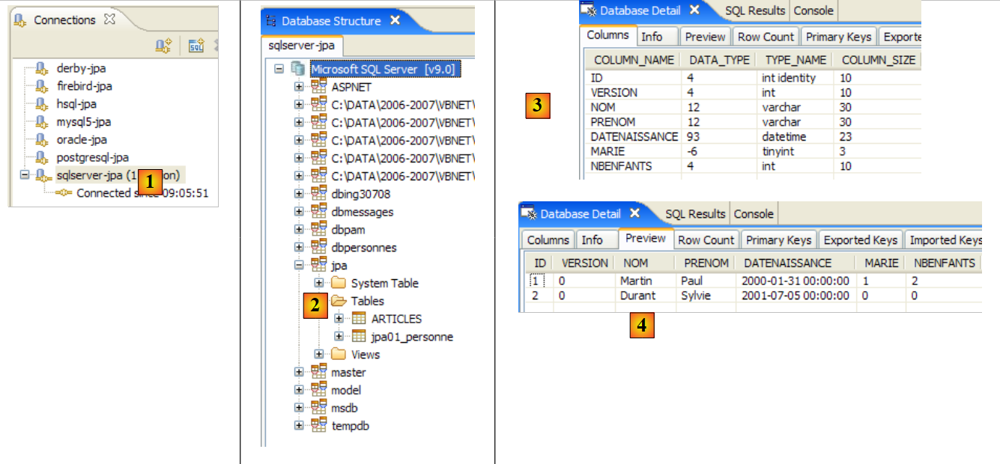 |
- in [1]: die Verbindung mit dem SQL-Server
- in [2]: die Verbindungsstruktur nach Ausführung von [InitDB]
- in [3]: die Struktur der Tabelle [jpa01_personne]
- in [4]: deren Inhalt.
Anschließend wird der Leser aufgefordert, die Anwendung [Main] auszuführen und anschließend SGBD zu beenden
2.1.14.4. Firebird 2.0
Firebird 2.0 wird im Anhang unter Abschnitt 5.4 vorgestellt. Die zugehörige Datei persistence.xml lautet wie folgt:
<?xml version="1.0" encoding="UTF-8"?>
<persistence version="1.0" xmlns="http://java.sun.com/xml/ns/persistence">
<persistence-unit name="jpa" transaction-type="RESOURCE_LOCAL">
...
<!-- Verbindung JDBC -->
<property name="hibernate.connection.driver_class" value="org.firebirdsql.jdbc.FBDriver" />
<property name="hibernate.connection.url" value="jdbc:firebirdsql:localhost/3050:C:\data\2006-2007\eclipse\dvp-jpa\annexes\firebird\jpa.fdb" />
<property name="hibernate.connection.username" value="sysdba" />
<property name="hibernate.connection.password" value="masterkey" />
...
<!-- Dialekt -->
<property name="hibernate.dialect" value="org.hibernate.dialect.FirebirdDialect" />
...
</persistence-unit>
</persistence>
Um [InitDB] auszuführen:
- Starten Sie die Firebird-Datei SGBD
- Legen Sie „conf/firebird/persistence.xml“ in „META-INF/persistence.xml“ ab
- Führen Sie die Anwendung [InitDB] aus
Die SQL-Explorer-Ansicht der Verknüpfung zwischen JDBC und SGBD sieht wie folgt aus:
 |
- in [1]: die Verbindung zu Firebird
- in [2]: die Verbindungsstruktur nach Ausführung von [InitDB]
- in [3]: die Struktur der Tabelle [jpa01_personne]
- in [4]: deren Inhalt.
Anschließend wird der Leser aufgefordert, die Anwendung [Main] auszuführen und anschließend SGBD zu beenden.
2.1.14.5. Apache Derby
Apache Derby wird im Anhang unter Abschnitt 5.10 vorgestellt. Die zugehörige Datei persistence.xml lautet wie folgt:
<?xml version="1.0" encoding="UTF-8"?>
<persistence version="1.0" xmlns="http://java.sun.com/xml/ns/persistence">
<persistence-unit name="jpa" transaction-type="RESOURCE_LOCAL">
...
<!-- Verbindung JDBC -->
<property name="hibernate.connection.driver_class" value="org.apache.derby.jdbc.ClientDriver" />
<property name="hibernate.connection.url" value="jdbc:derby://localhost:1527//data/2006-2007/eclipse/dvp-jpa/annexes/derby/jpa;create=true" />
<property name="hibernate.connection.username" value="jpa" />
<property name="hibernate.connection.password" value="jpa" />
...
<!-- Dialekt -->
...
</persistence-unit>
</persistence>
So führen Sie [InitDB] aus:
- Starten Sie die Apache-Derby-Datei SGBD
- Legen Sie „conf/derby/persistence.xml“ in „META-INF/persistence.xml“ ab
- Führen Sie die Anwendung [InitDB] aus
Die SQL-Explorer-Ansicht der Verknüpfung zwischen JDBC und SGBD sieht wie folgt aus:
 |
- in [1]: die Verbindung zu Apache Derby
- in [2]: die Verbindungsstruktur nach Ausführung von [InitDB]. Zu beachten ist die Tabelle [HIBERNATE_UNIQUE_KEY], die von JPA / Hibernate angelegt wurde, um automatisch die aufeinanderfolgenden Werte des Primärschlüssels ID zu generieren. Wir haben bereits darauf hingewiesen, dass dieser Mechanismus oft proprietär ist. Das wird hier deutlich. Dank JPA muss sich der Entwickler nicht mit diesen Details von SGBD befassen.
- in [3]: die Struktur der Tabelle [jpa01_personne]
- in [4]: ihr Inhalt.
Anschließend wird der Leser aufgefordert, die Anwendung [Main] auszuführen und anschließend SGBD zu beenden.
2.1.14.6. HSQLDB
HSQLDB ist im Anhang unter Abschnitt 5.9 aufgeführt. Die zugehörige Datei persistence.xml lautet wie folgt:
<?xml version="1.0" encoding="UTF-8"?>
<persistence version="1.0" xmlns="http://java.sun.com/xml/ns/persistence">
<persistence-unit name="jpa" transaction-type="RESOURCE_LOCAL">
...
<!-- Verbindung JDBC -->
<property name="hibernate.connection.driver_class" value="org.hsqldb.jdbcDriver" />
<property name="hibernate.connection.url" value="jdbc:hsqldb:hsql://localhost" />
<property name="hibernate.connection.username" value="sa" />
<!--
<property name="hibernate.connection.password" value="" />
-->
...
<!-- Dialekt -->
<property name="hibernate.dialect" value="org.hibernate.dialect.HSQLDialect" />
...
</properties>
</persistence-unit>
</persistence>
Um [InitDB] auszuführen:
- Starten Sie SGBD HSQL
- Fügen Sie „conf/hsql/persistence.xml“ in „META-INF/persistence.xml“ ein
- die Anwendung [InitDB] ausführen
Die SQL-Explorer-Ansicht der Verknüpfung zwischen JDBC und SGBD sieht wie folgt aus:
 |
- in [1]: die Verbindung mit HSQL
- in [2]: die Verbindungsstruktur nach Ausführung von [InitDB].
- in [3]: die Struktur der Tabelle [jpa01_personne]
- in [4]: deren Inhalt.
Anschließend wird der Leser aufgefordert, die Anwendung [Main] auszuführen und anschließend SGBD zu beenden.
2.1.15. Wechsel der Implementierung JPA
Kommen wir noch einmal auf die Testarchitektur unseres aktuellen Projekts zurück:
 |
Die vorherige Untersuchung hat gezeigt, dass wir die Implementierung von SGBD durch [7] ersetzen konnten, ohne Änderungen am Client-Code [3] vorzunehmen. Nun ändern wir die Implementierung JPA [6] und zeigen erneut, dass dies für den Client-Code [3] transparent erfolgt. Wir betrachten eine Implementierung TopLink und [http://www.oracle.com/technology/products/ias/toplink/jpa/index.html]:
 |
2.1.15.1. Das Eclipse-Projekt
Anlässlich der Umstellung der Implementierung auf JPA erstellen wir ein neues Eclipse-Projekt, um das bestehende Projekt nicht zu beeinträchtigen. Das neue Projekt verwendet nämlich Persistenz-Bibliotheken, die mit denen von Hibernate in Konflikt geraten können:
 |
- in [1]: Der Ordner [<exemples>/toplink/direct/personnes-entites] enthält das Eclipse-Projekt. Importieren Sie dieses.
- in [2]: das importierte Projekt [toplink-personnes-entites]. Es ist identisch (es wurde durch Kopieren erstellt) mit dem Projekt [hibernate-personne-entites], abgesehen von zwei Details:
- Die Datei [META-INF/persistence.xml] [3] konfiguriert nun eine JPA-/Toplink-Schicht
- die Bibliothek [jpa-hibernate] wurde durch die Bibliothek [jpa-toplink], [4] und [5] ersetzt (siehe Abschnitt 1.5).
- in [6]: Der Ordner [conf] enthält für jedes SGBD eine Version der Datei [persistence.xml].
- in [7]: Der Ordner [ddl], der die Skripte SQL zur Erstellung des Datenbankschemas enthalten wird.
2.1.15.2. Die Konfiguration der Schicht „ “ JPA / Toplink
Wir wissen, dass die Schicht JPA durch die Datei [META-INF/persistence.xml] konfiguriert wird. Diese konfiguriert nun eine Implementierung JPA / Toplink. Ihr Inhalt für eine Schicht JPA, die mit den Schichten SGBD und MySQL5 verbunden ist, lautet wie folgt:
<?xml version="1.0" encoding="UTF-8"?>
<persistence version="1.0" xmlns="http://java.sun.com/xml/ns/persistence">
<persistence-unit name="jpa" transaction-type="RESOURCE_LOCAL">
<!-- Anbieter -->
<provider>oracle.toplink.essentials.PersistenceProvider</provider>
<!-- Persistenzklassen -->
<class>entites.Personne</class>
<!-- Eigenschaften der Persistenz-Einheit -->
<properties>
<!-- Verbindung JDBC -->
<property name="toplink.jdbc.driver" value="com.mysql.jdbc.Driver" />
<property name="toplink.jdbc.url" value="jdbc:mysql://localhost:3306/jpa" />
<property name="toplink.jdbc.user" value="jpa" />
<property name="toplink.jdbc.password" value="jpa" />
<property name="toplink.jdbc.read-connections.max" value="3" />
<property name="toplink.jdbc.read-connections.min" value="1" />
<property name="toplink.jdbc.write-connections.max" value="5" />
<property name="toplink.jdbc.write-connections.min" value="2" />
<!-- SGBD -->
<property name="toplink.target-database" value="MySQL4" />
<!-- Anwendungsserver -->
<property name="toplink.target-server" value="None" />
<!-- Schema-Generierung -->
<property name="toplink.ddl-generation" value="drop-and-create-tables" />
<property name="toplink.application-location" value="ddl/mysql5" />
<property name="toplink.create-ddl-jdbc-file-name" value="create.sql" />
<property name="toplink.drop-ddl-jdbc-file-name" value="drop.sql" />
<property name="toplink.ddl-generation.output-mode" value="both" />
<!-- Protokolle -->
<property name="toplink.logging.level" value="OFF" />
</properties>
</persistence-unit>
</persistence>
- Zeile 3: unverändert
- Zeile 5: Der Provider ist nun Toplink. Die hier genannte Klasse befindet sich in der Bibliothek [jpa-toplink] ([1] siehe unten):
 |
- Zeile 7: Das <class>-Tag dient dazu, alle @Entity-Klassen des Projekts zu benennen, hier nur die Klasse Personne. Hibernate verfügte früher über eine Konfigurationsoption, die es uns ersparte, diese Klassen zu benennen. Es durchsuchte die Datei classpath des Projekts, um dort die @Entity-Klassen zu finden.
- Zeile 9: Das <properties>-Tag, das spezifische Eigenschaften der verwendeten Implementierung JPA einführt, in diesem Fall Toplink.
- Zeilen 11–14: Konfiguration der JDBC-Verbindung mit dem SGBD MySQL5
- Zeilen 15–18: Konfiguration des von Toplink nativ verwalteten JDBC-Verbindungspools:
- Zeilen 15, 16: Maximale und minimale Anzahl von Verbindungen im Lese-Verbindungspool. Standardwert (2,2)
- Zeilen 17, 18: Maximale und minimale Anzahl von Verbindungen im Schreib-Verbindungspool. Standardwert (10, 2)
- Zeile 20: das Ziel-SGBD. Die Liste der verwendbaren SGBD ist im Paket [oracle.toplink.essentials.platform.database] verfügbar (siehe [2] oben). Das SGBD MySQL5 ist nicht in der Liste [2] enthalten, daher wurde MySQL4 ausgewählt. Toplink unterstützt etwas weniger SGBD als Hibernate. Von den sieben in unseren Beispielen verwendeten SGBD wird Firebird daher nicht unterstützt. Auch Oracle ist in der Liste nicht zu finden. Es befindet sich tatsächlich in einem anderen Paket ([3], siehe oben). Wenn in diesen beiden Paketen das Ziel SGBD durch die Klasse <Sgbd>Platform.class bezeichnet wird, lautet das Tag:
<property name="toplink.target-database" value="<Sgbd>" />
- Zeile 22: Legt den Anwendungsserver fest, falls die Anwendung auf einem solchen Server ausgeführt wird. Derzeit mögliche Werte (None, OC4J_10_1_3, SunAS9). Standardwert (None).
- Zeilen 24–28: Bei der Initialisierung der Schicht JPA wird diese angewiesen, die durch die JDBC-Verbindung in den Zeilen 11–14 definierte Datenbank zu bereinigen. So wird mit einer leeren Datenbank begonnen.
- Zeile 24: Toplink wird angewiesen, einen drop gefolgt von einem create für die Tabellen des Datenbankschemas auszuführen
- Zeile 25: Toplink wird angewiesen, die Skripte SQL für die Operationen drop und create zu generieren. application-location legt den Ordner fest, in dem diese Skripte generiert werden. Standard: (aktueller Ordner).
- Zeile 26: Name des Skripts SQL für die Vorgänge create.. Standard: createDDL.jdbc.
- Zeile 27: Name des Skripts SQL für die Vorgänge drop.. Standard: dropDDL.jdbc.
- Zeile 28: Modus zur Schemaerzeugung (Standard: both):
- both: Skripte und Datenbank
- database: nur Datenbank
- sql-script: nur Skripte
- Zeile 30: Toplink-Protokolle werden deaktiviert (OFF). Folgende Protokollierungsstufen stehen zur Verfügung: OFF, SEVERE, WARNING, INFO, CONFIG, FINE, FINER, FINEST. Standard: INFO.
Eine umfassende Definition der mit Toplink verwendbaren <property>-Tags finden Sie unter der URL [http://www.oracle.com/technology/products/ias/toplink/JPA/essentials/toplink-jpa-extensions.html].
2.1.15.3. Test [InitDB]
Es sind keine weiteren Schritte erforderlich. Wir sind bereit, den ersten Test [InitDB] durchzuführen:
- Starten Sie den SGBD, hier MySQL5
- [InitDB] ausführen
 |
- in [1]: die Konsolenausgabe. Hier finden wir die Ergebnisse wieder, die bereits mit JPA / Hibernate erzielt wurden.
- in [3]: Man öffnet die Perspektive [SQL Explorer] und anschließend die Verbindung [mysql5-jpa]
- In [4]: die Baumstruktur der JPA-Datenbank. Man stellt fest, dass die Ausführung von [InitDB] zwei Tabellen erstellt hat: [jpa01_personne], die erwartet wurde, und die Tabelle [sequence], die weniger erwartet wurde.
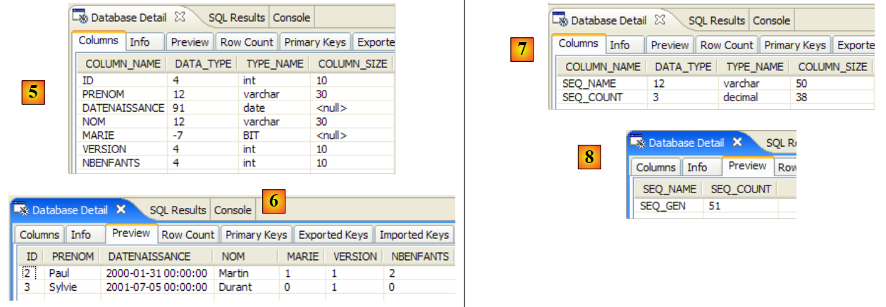 |
- in [5]: die Struktur der Tabelle [jpa01_personne] und in [6] deren Inhalt
- in [7]: die Struktur der Tabelle [sequence] und in [8] deren Inhalt.
Die Konfigurationsdatei [persistence.xml] forderte die Generierung der Skripte aus der Datei DDL an:
<!-- Schema-Generierung -->
<property name="toplink.ddl-generation" value="drop-and-create-tables" />
<property name="toplink.application-location" value="ddl/mysql5" />
<property name="toplink.create-ddl-jdbc-file-name" value="create.sql" />
<property name="toplink.drop-ddl-jdbc-file-name" value="drop.sql" />
<property name="toplink.ddl-generation.output-mode" value="both" />
Schauen wir uns an, was im Ordner [ddl/mysql5] generiert wurde:
 |
create.sql
CREATE TABLE jpa01_personne (ID INTEGER NOT NULL, PRENOM VARCHAR(30) NOT NULL, DATENAISSANCE DATE NOT NULL, NOM VARCHAR(30) UNIQUE NOT NULL, MARIE TINYINT(1) default 0 NOT NULL, VERSION INTEGER NOT NULL, NBENFANTS INTEGER NOT NULL, PRIMARY KEY (ID))
CREATE TABLE SEQUENCE (SEQ_NAME VARCHAR(50) NOT NULL, SEQ_COUNT DECIMAL(38), PRIMARY KEY (SEQ_NAME))
INSERT INTO SEQUENCE(SEQ_NAME, SEQ_COUNT) values ('SEQ_GEN', 1)
- Zeile 1: DDL aus der Tabelle [jpa01_personne]. Es ist festzustellen, dass Toplink das Attribut „autoincrement“ für den Primärschlüssel ID nicht verwendet hat. Dies führt dazu, dass bei Einfügungen von Zeilen keine automatische Inkrementierung dieses Primärschlüssels erfolgt.
- Zeile 2: DDL aus der Tabelle [sequence]. Der Name lässt vermuten, dass Toplink diese Tabelle zur Generierung der Werte des Primärschlüssels ID verwendet.
- Zeile 3: Einfügen einer einzelnen Zeile in [SEQUENCE]
drop.sql
DROP TABLE jpa01_personne
DELETE FROM SEQUENCE WHERE SEQ_NAME = 'SEQ_GEN'
- Zeile 1: Löschen der Tabelle [jpa01_personne]
- Zeile 2: Löschen einer bestimmten Zeile aus der Tabelle [SEQUENCE]. Die Tabelle selbst wird nicht gelöscht, ebenso wenig wie etwaige andere Zeilen, die sie enthalten könnte.
Um mehr über die Funktion der Tabelle [SEQUENCE] zu erfahren, aktiviert man in [persistence.xml] die Toplink-Protokolle auf der Ebene FINE, einer Ebene, die die von Toplink ausgegebenen Befehle SQL protokolliert:
<!-- Protokolle -->
<property name="toplink.logging.level" value="FINE" />
Man führt InitDB erneut aus. Nachfolgend ist nur ein Ausschnitt der Konsolenausgabe wiedergegeben:
...
[TopLink Config]: 2007.05.28 12:07:52.796--ServerSession(12910198)--Verbindung(30708295)--Thread(Thread[main,5,main])--Verbunden: jdbc:mysql://localhost:3306/jpa
User: jpa@localhost
Database: MySQL Version: 5.0.37-community-nt
Driver: MySQL-AB JDBC Driver Version: mysql-connector-java-3.1.9 ( $Date: 2005/05/19 15:52:23 $, $Revision: 1.1.2.2 $ )
...
[TopLink Fine]: 2007.05.28 12:07:53.093--ServerSession(12910198)--Verbindung(19255406)--Thread(Thread[main,5,main])--DROP TABLE jpa01_personne
[TopLink Fine]: 2007.05.28 12:07:53.265--ServerSession(12910198)--Verbindung(30708295)--Thread(Thread[main,5,main])--CREATE TABLE jpa01_personne (ID INTEGER NOT NULL, PRENOM VARCHAR(30) NOT NULL, DATENAISSANCE DATE NOT NULL, NOM VARCHAR(30) UNIQUE NOT NULL, MARIE TINYINT(1) default 0 NOT NULL, VERSION INTEGER NOT NULL, NBENFANTS INTEGER NOT NULL, PRIMARY KEY (ID))
[TopLink Fine]: 2007.05.28 12:07:53.468--ServerSession(12910198)--Verbindung(19255406)--Thread(Thread[main,5,main])--CREATE TABLE SEQUENCE (SEQ_NAME VARCHAR(50) NOT NULL, SEQ_COUNT DECIMAL(38), PRIMARY KEY (SEQ_NAME))
[TopLink Warning]: 2007.05.28 12:07:53.468--ServerSession(12910198)--Thread(Thread[main,5,main])--Ausnahme [TOPLINK-4002] (Oracle TopLink Essentials – 2.0 (Build b41-beta2 (30.03.2007))): oracle.toplink.essentials.exceptions.DatabaseException
Internal Exception: java.sql.SQLException: Table 'sequence' already exists
Error Code: 1050
Call: CREATE TABLE SEQUENCE (SEQ_NAME VARCHAR(50) NOT NULL, SEQ_COUNT DECIMAL(38), PRIMARY KEY (SEQ_NAME))
Query: DataModifyQuery()
[TopLink Fine]: 2007.05.28 12:07:53.468--ServerSession(12910198)--Verbindung(30708295)--Thread(Thread[main,5,main])--DELETE FROM SEQUENCE WHERE SEQ_NAME = 'SEQ_GEN'
[TopLink Fine]: 2007.05.28 12:07:53.609--ServerSession(12910198)--Verbindung(19255406)--Thread(Thread[main,5,main])--SELECT * FROM SEQUENCE WHERE SEQ_NAME = 'SEQ_GEN'
[TopLink Fine]: 2007.05.28 12:07:53.609--ServerSession(12910198)--Verbindung(30708295)--Thread(Thread[main,5,main])--INSERT INTO SEQUENCE(SEQ_NAME, SEQ_COUNT) Werte ('SEQ_GEN', 1)
[TopLink Fine]: 2007.05.28 12:07:53.734--ClientSession(15308417)--Verbindung(14069849)--Thread(Thread[main,5,main])--Löschen aus jpa01_personne
[TopLink Fine]: 2007.05.28 12:07:53.750--ClientSession(15308417)--Verbindung(14069849)--Thread(Thread[main,5,main])--UPDATE SEQUENCE SET SEQ_COUNT = SEQ_COUNT + ? WHERE SEQ_NAME = ?
bind => [50, SEQ_GEN]
[TopLink Fine]: 2007.05.28 12:07:53.750--ClientSession(15308417)--Verbindung(14069849)--Thread(Thread[main,5,main])--SELECT SEQ_COUNT FROM SEQUENCE WHERE SEQ_NAME = ?
bind => [SEQ_GEN]
[personnes]
[TopLink Fine]: 2007.05.28 12:07:53.906--ClientSession(15308417)--Verbindung(14069849)--Thread(Thread[main,5,main])--INSERT INTO jpa01_personne (ID, PRENOM, DATENAISSANCE, NOM, MARIE, VERSION, NBENFANTS) VALUES (?, ?, ?, ?, ?, ?, ?)
bind => [3, Sylvie, 2001-07-05, Durant, false, 1, 0]
[TopLink Fine]: 2007.05.28 12:07:53.921--ClientSession(15308417)--Verbindung(14069849)--Thread(Thread[main,5,main])--INSERT INTO jpa01_personne (ID, PRENOM, DATENAISSANCE, NOM, MARIE, VERSION, NBENFANTS) VALUES (?, ?, ?, ?, ?, ?, ?)
bind => [2, Paul, 2000-01-31, Martin, true, 1, 2]
[TopLink Fine]: 2007.05.28 12:07:53.937--ClientSession(15308417)--Verbindung(14069849)--Thread(Thread[main,5,main])--SELECT ID, PRENOM, DATENAISSANCE, NOM, MARIE, VERSION, NBENFANTS FROM jpa01_personne ORDER BY NOM ASC
[3,1,Durant,Sylvie,05/07/2001,false,0]
[2,1,Martin,Paul,31/01/2000,true,2]
[TopLink Config]: 2007.05.28 12:07:54.062--ServerSession(12910198)--Verbindung(30708295)--Thread(Thread[main,5,main])--Trennung
[TopLink Info]: 2007.05.28 12:07:54.062--ServerSession(12910198)--Thread(Thread[main,5,main])--file:/C:/data/2006-2007/eclipse/dvp-jpa/toplink/direct/personnes-entites/bin/-jpa Abmeldung erfolgreich
...
terminé ...
- Zeilen 2–5: Eine Verbindung zu SGBD mit den entsprechenden Parametern. Tatsächlich zeigen die Protokolle, dass Toplink drei Verbindungen zu SGBD herstellt. Es müsste geprüft werden, ob diese Anzahl mit einem der Konfigurationswerte zusammenhängt, die für den JDBC-Verbindungspool verwendet werden:
<property name="toplink.jdbc.read-connections.max" value="3" />
<property name="toplink.jdbc.read-connections.min" value="1" />
<property name="toplink.jdbc.write-connections.max" value="5" />
<property name="toplink.jdbc.write-connections.min" value="2" />
- Zeile 7: Löschen der Tabelle [jpa01_personne]. Das ist normal, da die Datei [persistence.xml] die Bereinigung der JPA-Datenbank anfordert.
- Zeile 8: Erstellung der Tabelle [jpa01_personne]. Es ist festzustellen, dass der Primärschlüssel ID nicht das Attribut autoincrement aufweist.
- Zeile 9: Erstellung der Tabelle [SEQUENCE], die bereits existiert und bei der vorherigen Ausführung angelegt wurde.
- Zeilen 10–13: Toplink meldet einen Fehler beim Anlegen der Tabelle [SEQUENCE].
- Zeile 15–18: Toplink bereinigt die Tabelle [SEQUENCE]. Nach Abschluss dieser Bereinigung enthält die Tabelle [SEQUENCE] eine Zeile (SEQ_NAME, SEQ_COUNT) mit den Werten („SEQ_GEN“, 1).
- Zeile 18: Die Tabelle [jpa01_personne] wird geleert.
- Zeilen 19–20: Toplink übergibt die einzige Zeile, in der SEQ_NAME = 'SEQ_GEN' ist, aus der Tabelle [SEQUENCE], vom Wert ('SEQ_GEN', 1) auf den Wert ('SEQ_GEN', 51)
- Zeile 21: Toplink ruft den Wert 51 aus der Zeile („SEQ_GEN“, 51) der Tabelle [SEQUENCE] ab.
- Zeilen 24–27: Toplink fügt in die Tabelle [jpa01_personne] die beiden Personen „Martin“ und „Durant“ ein. Hier gibt es ein Rätsel: Die Primärschlüssel dieser beiden Zeilen erhalten die Werte 2 und 3, ohne dass bekannt ist, wie diese Werte ermittelt wurden. Es ist unklar, ob der in Zeile 21 ermittelte Wert SEQ_COUNT (51) für irgendetwas verwendet wurde. Es ist anzumerken, dass der Versionswert der Zeilen 1 beträgt, während Hibernate bei 0 begann.
- Zeile 28: Toplink generiert den Wert SELECT, um alle Zeilen der Tabelle [jpa01_personne] abzurufen
- Zeilen 29–30: Vom Java-Client angezeigte Zeilen
- Zeilen 31–32: Toplink schließt eine Verbindung. Der Vorgang wird für jede der ursprünglich geöffneten Verbindungen wiederholt.
Letztendlich ist die genaue Rolle der Tabelle „[SEQUENCE]“ nicht bekannt, aber es scheint dennoch, dass sie eine Rolle bei der Generierung der Werte des Primärschlüssels „ID“ spielt. Wenn man die detaillierteste Protokollstufe, FINEST, betrachtet, erfährt man etwas mehr über die Rolle der Tabelle [SEQUENCE].
<!-- Protokolle -->
<property name="toplink.logging.level" value="FINEST" />
Im Folgenden haben wir nur die Protokolle beibehalten, die sich auf das Einfügen der beiden Personen in die Tabelle beziehen. Hier wird der Mechanismus zur Generierung der Primärschlüsselwerte deutlich:
- Zeile 4: Man sieht, dass die in der Tabelle [SEQUENCE] in Zeile 2 abgerufene Zahl 51 dazu dient, einen Wertebereich für den Primärschlüssel abzugrenzen: [2,51]
- Zeile 5: Die erste Person erhält den Wert 2 als Primärschlüssel
- Zeile 8: Die zweite Person erhält den Wert 3 als Primärschlüssel
- Zeile 12: Zeigt die Versionsverwaltung der ersten Person
- Zeile 17: dasselbe gilt für die zweite Person
Die Protokollstufe [FINEST] zeigt ebenfalls die Grenzen der von Toplink ausgegebenen Transaktionen an. Die Untersuchung dieser Protokolle verdeutlicht, was Toplink tut, und ist eine hervorragende Möglichkeit, die Objekt-Relational-Brücke zu verstehen.
Aus dem Vorstehenden lässt sich Folgendes ableiten:
- dass unterschiedliche Implementierungen von JPA unterschiedliche Datenbankschemata erzeugen. In diesem Beispiel haben Hibernate und Toplink nicht dieselben Schemata erzeugt.
- dass die Protokollstufen FINE, FINER und FINEST von Toplink verwendet werden sollten, sobald man Klarheit darüber gewinnen möchte, was Toplink genau tut.
2.1.15.4. Test [Main]
Wir führen nun den Test [Main] durch:
 |
- in [1]: Alle Tests werden bestanden, außer Test 11 [2]
- in [3]: Zeile 376, die Codezeile, in der die Ausnahme aufgetreten ist
Der Code, der die Ausnahme auslöst, lautet wie folgt:
} catch (RuntimeException e1) {
// es gab ein Problem
System.out.format("Erreur dans transaction [%s,%s,%s,%s,%s,%s]%n", e1.getClass().getName(), e1.getMessage(),
e1.getCause().getClass().getName(), e1.getCause().getMessage(), e1.getCause().getCause().getClass().getName(), e1.getCause().getCause()
.getMessage());
try {
...
- Zeile [3]: die Zeile, in der die Ausnahme aufgetreten ist. Wir haben einen NullPointerException, was darauf hindeutet, dass eine der Methoden getCause in den Zeilen 4 und 5 einen Zeiger null zurückgegeben hat. Ein Ausdruck wie [e1.getCause().getCause()] setzt voraus, dass die Ausnahmekette drei Elemente [e1.getCause().getCause(), e1.getCause(), e1] enthält. Wenn sie nur zwei enthält, löst der erste Ausdruck eine Ausnahme aus.
Wir ändern den vorherigen Code so, dass er nur die letzten beiden Ausnahmen der Ausnahmekette anzeigt:
} catch (RuntimeException e1) {
// Es gab ein Problem
System.out.format("Erreur dans transaction [%s,%s,%s,%s,]%n", e1.getClass().getName(), e1.getMessage(),
e1.getCause().getClass().getName(), e1.getCause().getMessage());
try {
...
Bei der Ausführung erhalten wir dann folgendes Ergebnis:
...
[personnes]
[2,5,Martin,Paul,31/01/2000,false,6]
main : ----------- Test11
[personnes]
Erreur dans transaction [javax.persistence.OptimisticLockException,Exception [TOPLINK-5006] (Oracle TopLink Essentials - 2.0 (Build b41-beta2 (03/30/2007))): oracle.toplink.essentials.exceptions.OptimisticLockException
Exception Description: The object [[2,6,Martin,Paul,31/01/2000,false,7]] cannot be updated because it has changed or been deleted since it was last read.
Class> entites.Personne Primary Key> [2],oracle.toplink.essentials.exceptions.OptimisticLockException,
Exception Description: The object [[2,6,Martin,Paul,31/01/2000,false,7]] cannot be updated because it has changed or been deleted since it was last read.
Class> entites.Personne Primary Key> [2],]
[personnes]
[2,5,Martin,Paul,31/01/2000,false,6]
Diesmal wird Test 11 bestanden. Die Ausgabemeldungen zur Ausnahme (Zeilen 6–10) wurden vom Java-Code (Zeile 3 des obigen Codes) angefordert. Zur Erinnerung: Test 11 führte innerhalb derselben Transaktion mehrere Operationen SQL nacheinander aus, von denen eine fehlschlug und einen Rollback der Transaktion auslösen musste. Die Zustände der Tabelle [jpa01_personne] vor (Zeile 3) und nach dem Test (Zeile 12) sind identisch, was zeigt, dass der Rollback stattgefunden hat.
An dieser Stelle ist ein wichtiger Punkt zu beachten: Die Implementierungen JPA / Hibernate und JPA / Toplink sind nicht zu 100 % austauschbar. In diesem Beispiel müssen wir den Code des Clients JPA ändern, um ein NullPointerException zu vermeiden. Wir werden später im Zusammenhang mit einer Ausnahme erneut auf dieses Problem stoßen.
2.1.16. Änderung von SGBD in der Implementierung JPA / Toplink
Kommen wir noch einmal auf die Testarchitektur unseres aktuellen Projekts zurück:
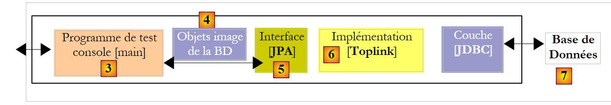 |
Zuvor lautete die in [7] verwendete SGBD „MySQL5“. Wir zeigen gemeinsam mit Oracle, wie man von SGBD wechselt. In jedem Fall ist die im Eclipse-Projekt vorzunehmende Änderung einfach (siehe unten): Ersetzen Sie die Konfigurationsdatei persistence.xml [1] der Schicht JPA durch eine der Dateien aus dem Ordner conf ([2] und [3]) des Projekts.
 |
2.1.16.1. Oracle 10g Express
Oracle 10g Express wird im Anhang unter Abschnitt 5.7 vorgestellt. Die Oracle-Datei persistence.xml für Toplink lautet wie folgt:
<?xml version="1.0" encoding="UTF-8"?>
<persistence version="1.0" xmlns="http://java.sun.com/xml/ns/persistence">
<persistence-unit name="jpa" transaction-type="RESOURCE_LOCAL">
<!-- Anbieter -->
<provider>oracle.toplink.essentials.PersistenceProvider</provider>
<!-- persistente Klassen -->
<class>entites.Personne</class>
<!-- Eigenschaften der Persistenz-Einheit -->
<properties>
<!-- Verbindung JDBC -->
<property name="toplink.jdbc.driver" value="oracle.jdbc.OracleDriver" />
<property name="toplink.jdbc.url" value="jdbc:oracle:thin:@localhost:1521:xe" />
<property name="toplink.jdbc.user" value="jpa" />
<property name="toplink.jdbc.password" value="jpa" />
<property name="toplink.jdbc.read-connections.max" value="3" />
<property name="toplink.jdbc.read-connections.min" value="1" />
<property name="toplink.jdbc.write-connections.max" value="5" />
<property name="toplink.jdbc.write-connections.min" value="2" />
<!-- SGBD -->
<property name="toplink.target-database" value="Oracle" />
<!-- Anwendungsserver -->
<property name="toplink.target-server" value="None" />
<!-- Schema-Generierung -->
<property name="toplink.ddl-generation" value="drop-and-create-tables" />
<property name="toplink.application-location" value="ddl/oracle" />
<property name="toplink.create-ddl-jdbc-file-name" value="create.sql" />
<property name="toplink.drop-ddl-jdbc-file-name" value="drop.sql" />
<property name="toplink.ddl-generation.output-mode" value="both" />
<!-- Protokolle -->
<property name="toplink.logging.level" value="OFF" />
</properties>
</persistence-unit>
</persistence>
Diese Konfiguration entspricht der für die Dateien SGBD und MySQL5 vorgenommenen, mit folgenden Abweichungen:
- Zeilen 11–14, die die Verbindung JDBC zur Datenbank konfigurieren
- Zeile 20: Hier wird das Ziel SGBD festgelegt
- Zeile 25: Hier wird der Ordner für die Skriptgenerierung von SQL aus DDL festgelegt
So führen Sie den Test [InitDB] aus:
- Starten Sie den Oracle-Test SGBD
- Fügen Sie „conf/oracle/persistence.xml“ in „META-INF/persistence.xml“ ein
- Führen Sie die Anwendung [InitDB] aus
Die folgenden Ergebnisse werden auf der Konsole und in der Perspektive [SQL Explorer] angezeigt:
 |
- [1]: die Konsolenausgabe
- [2]: Die Verbindung [oracle-jpa] im SQL Explorer
- [3]: Die Datenbank „jpa“
- [4]: InitDB hat zwei Tabellen erstellt: JPA01_PERSONNE und SEQUENCE, genau wie bei MySQL5. Manchmal tauchen in [4] Tabellen mit dem Namen [BIN*] auf. Diese entsprechen gelöschten Tabellen. Um dieses Phänomen zu beobachten, muss lediglich [InitDB] erneut ausgeführt werden. Die Initialisierungsphase der Schicht JPA umfasst eine Bereinigung der Datenbank jpa, bei der die Tabelle [JPA01_PERSONNE] gelöscht wird:
 |
In [A] erscheint eine Tabelle [BIN]. Oracle löscht eine Tabelle, die einem drop unterzogen wurde, nicht endgültig, sondern verschiebt sie in einen Papierkorb [Recycle Bin]. Dieser Papierkorb ist mit dem in Abschnitt 5.7.4 beschriebenen Tool SQL Developer unter [B] sichtbar. In [B] kann die Tabelle [JPA01_PERSONNE], die sich im Papierkorb befindet, gelöscht werden. Dadurch wird der Papierkorb [C] geleert. Wenn man im SQL Explorer die Tabellen aktualisiert (Rechtsklick / Refresh), sieht man, dass die Tabelle BIN nicht mehr vorhanden ist ([D]).
- [5, 6]: Struktur und Inhalt der Tabelle [JPA01_PERSONNE]
- [7, 8]: Struktur und Inhalt der Tabelle [SEQUENCE]
Das war’s! Der Leser wird nun aufgefordert, die Anwendung [Main] auf Oracle auszuführen.
2.1.16.2. Die anderen SGBD
Auf die anderen SGBD-Dateien werden wir nur kurz eingehen. Es genügt, die für Oracle angewandte Vorgehensweise zu wiederholen. Dabei sind folgende Punkte zu beachten:
- Unabhängig vom jeweiligen SGBD verwendet Toplink immer dieselbe Technik zur Generierung der Werte für den Primärschlüssel ID der Tabelle [JPA01_PERSONNE]: Es nutzt die oben beschriebene Tabelle [SEQUENCE].
- Toplink erkennt den Firebird-Schlüssel SGBD nicht. Für solche Fälle gibt es eine generische Datenbank:
Mit dieser generischen Datenbank namens [Auto] schlagen die Tests mit Firebird aufgrund von Syntaxfehlern in SQL fehl. Toplink verwendet für den Primärschlüssel ID einen Typ SQL Number(10), den Firebird nicht erkennt. Man muss daher einen SGBD wählen, der dieselben Typen SQL wie Firebird hat (in diesem Beispiel). Dies ist bei Apache Derby der Fall:
<!-- Verbindung JDBC -->
<property name="toplink.jdbc.driver" value="org.firebirdsql.jdbc.FBDriver" />
...
<!-- SGBD -->
<!--
TopLink ne reconnaît pas Firebird pour l'instant (05/07). Derby convient pour remplacer.
-->
<property name="toplink.target-database" value="Derby" />
...
- Toplink kann das ursprüngliche Datenbankschema für die SGBD- und HSQLDB-Dateien nicht generieren. Das heißt, die Anweisung:
<!-- Schema-Generierung -->
<property name="toplink.ddl-generation" value="drop-and-create-tables" />
schlägt bei HSQLDB fehl. Die Ursache ist ein Syntaxfehler beim Anlegen der Tabelle [jpa01_personne]:
[TopLink Fine]: 2007.05.29 09:44:18.515--ServerSession(12910198)--Verbindung(29775659)--Thread(Thread[main,5,main])--DROP TABLE jpa01_personne
[TopLink Fine]: 2007.05.29 09:44:18.531--ServerSession(12910198)--Verbindung(29775659)--Thread(Thread[main,5,main])--CREATE TABLE jpa01_personne (ID INTEGER NOT NULL, PRENOM VARCHAR(30) NOT NULL, DATENAISSANCE DATE NOT NULL, NOM VARCHAR(30) UNIQUE NOT NULL, MARIE TINYINT NOT NULL, VERSION INTEGER NOT NULL, NBENFANTS INTEGER NOT NULL, PRIMARY KEY (ID))
[TopLink Warning]: 2007.05.29 09:44:18.531--ServerSession(12910198)--Thread(Thread[main,5,main])--Ausnahme [TOPLINK-4002] (Oracle TopLink Essentials – 2.0 (Build b41-beta2 (30.03.2007))): oracle.toplink.essentials.exceptions.DatabaseException
Internal Exception: java.sql.SQLException: Unexpected token: UNIQUE in statement [CREATE TABLE jpa01_personne (ID INTEGER NOT NULL, PRENOM VARCHAR(30) NOT NULL, DATENAISSANCE DATE NOT NULL, NOM VARCHAR(30) UNIQUE]
Zeile 4, die Syntax NOM VARCHAR(30) UNIQUE NOT NULL wird von HSQL nicht akzeptiert. Hibernate hatte folgende Syntax verwendet: NOM VARCHAR(30) NOT NULL, UNIQUE(NOM).
Im Allgemeinen war Hibernate bei der Erkennung der SGBD, mit denen die Tests in diesem Dokument durchgeführt wurden, effizienter als Toplink.
2.1.17. Fazit
Die Untersuchung der @Entity [Personne] endet an dieser Stelle. Aus konzeptioneller Sicht wurde noch nicht viel erreicht: Wir haben die Objekt-Relational-Brücke im einfachsten Fall untersucht: ein @Entity-Objekt <--> eine Tabelle. Diese Untersuchung hat es uns jedoch ermöglicht, die Werkzeuge vorzustellen, die wir im gesamten Dokument verwenden werden. Dadurch können wir künftig bei der Untersuchung der weiteren Fälle der Objekt-Relational-Brücke, die wir noch untersuchen werden, etwas schneller vorankommen:
- Zur vorherigen @Entity [Personne] fügen wir ein Feld adresse hinzu, das durch eine Klasse [Adresse] modelliert wird. Auf der Datenbankseite werden wir zwei mögliche Implementierungen betrachten. Die Objekte [Personne] und [Adresse] führen zu
- eine einzige Tabelle [personne], die die Adresse enthält
- beiden Tabellen [personne] und [adresse], die durch eine Eins-zu-Eins-Fremdschlüsselbeziehung miteinander verknüpft sind.
- ein Beispiel für eine Eins-zu-Viele-Beziehung, bei der eine Tabelle [article] über einen Fremdschlüssel mit einer Tabelle [categorie] verknüpft ist
- Ein Beispiel für eine Mehr-zu-Mehr-Beziehung, bei der zwei Tabellen [personne] und [activite] über eine Verknüpfungstabelle [personne_activite] miteinander verbunden sind.
2.2. Beispiel 2: Eins-zu-Eins-Beziehung über eine Inklusion
2.2.1. Das Datenbankschema
1  | 2 |
- in [1]: die Datenbank (Azurri Clay-Plugin)
- in [2]: die von Hibernate für MySQL5 generierte Tabelle DDL
Die Tabelle [jpa02_personne] ist die zuvor untersuchte Tabelle [jpa01_personne], der eine Adresse hinzugefügt wurde (Zeilen 12–18 der DDL).
2.2.2. Die @Entity-Objekte, die die Datenbank darstellen
Die Adresse einer Person wird durch die folgende Klasse [Adresse] dargestellt:
package entites;
...
@SuppressWarnings("serial")
@Embeddable
public class Adresse implements Serializable {
// Felder
@Column(length = 30, nullable = false)
private String adr1;
@Column(length = 30)
private String adr2;
@Column(length = 30)
private String adr3;
@Column(length = 5, nullable = false)
private String codePostal;
@Column(length = 20, nullable = false)
private String ville;
@Column(length = 3)
private String cedex;
@Column(length = 20, nullable = false)
private String pays;
// Konstruktoren
public Adresse() {
}
public Adresse(String adr1, String adr2, String adr3, String codePostal, String ville, String cedex, String pays) {
...
}
// Getter und Setter
...
// toString
public String toString() {
return String.format("A[%s,%s,%s,%s,%s,%s,%s]", getAdr1(), getAdr2(), getAdr3(), getCodePostal(), getVille(), getCedex(), getPays());
}
}
- Die wichtigste Neuerung ist die Annotation @Embeddable in Zeile 5. Die Klasse [Adresse] ist nicht dazu bestimmt, eine Tabelle zu erzeugen, daher verfügt sie nicht über die Annotation @Entity. Die Annotation @Embeddable gibt an, dass die Klasse dazu bestimmt ist, in ein @Entity-Objekt und somit in die diesem zugeordnete Tabelle eingebettet zu werden. Aus diesem Grund erscheint die Klasse [Adresse] im Datenbankschema nicht als eigenständige Tabelle, sondern als Teil der Tabelle, die der @Entity [Personne] zugeordnet ist.
Die @Entity [Personne] hat sich gegenüber ihrer vorherigen Version kaum verändert: Es wurde lediglich ein Feld adresse hinzugefügt:
package entites;
...
@Entity
@Table(name = "jpa02_hb_personne")
public class Personne implements Serializable{
@Id
@Column(nullable = false)
@GeneratedValue(strategy = GenerationType.AUTO)
private Long id;
@Column(nullable = false)
@Version
private int version;
@Column(length = 30, nullable = false, unique = true)
private String nom;
@Column(length = 30, nullable = false)
private String prenom;
@Column(nullable = false)
@Temporal(TemporalType.DATE)
private Date datenaissance;
@Column(nullable = false)
private boolean marie;
@Column(nullable = false)
private int nbenfants;
@Embedded
private Adresse adresse;
// Konstruktoren
public Personne() {
}
...
}
- Die Änderung erfolgt in den Zeilen 33–34. Das Objekt [Personne] verfügt nun über ein Feld adresse vom Typ Adresse. Das gilt für das POJO. Die Annotation @Embedded ist für die Objekt-Relational-Brücke vorgesehen. Sie gibt an, dass das Feld [Adresse adresse] in derselben Tabelle wie das Objekt [Personne] gekapselt werden muss.
2.2.3. Die Testumgebung
Wir werden Tests durchführen, die den zuvor behandelten sehr ähnlich sind. Sie werden im folgenden Kontext durchgeführt:
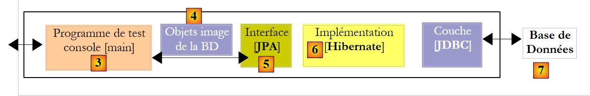 |
Die verwendete Implementierung ist JPA / Hibernate [6]. Das Eclipse-Projekt für die Tests lautet wie folgt:
 |
Das Eclipse-Projekt [1] unterscheidet sich vom vorherigen lediglich durch seinen Java-Code [2]. Die Umgebung (Bibliotheken – persistence.xml – DBMS – Konfigurations- und DDL-Ordner – Ant-Skript) ist die bereits zuvor behandelte, insbesondere in Abschnitt 2.1.5. Dies wird auch für zukünftige Hibernate-Projekte gelten, und von Ausnahmen abgesehen werden wir nicht mehr auf diese Umgebung zurückkommen. Insbesondere die Dateien persistence.xml, die die JPA/Hibernate-Schicht für verschiedene SGBD konfigurieren, sind diejenigen, die bereits behandelt wurden und sich im Ordner <conf> befinden.
Sollte der Leser Zweifel hinsichtlich der zu befolgenden Vorgehensweisen haben, wird er gebeten, sich noch einmal die in der vorherigen Untersuchung beschriebenen Schritte anzusehen.
Das Eclipse-Projekt [3] befindet sich im Beispielordner [4]. Es wird importiert.
2.2.4. Erstellung der Datenbank DDL
Gemäß den Anweisungen in Abschnitt 2.1.7 lautet die für die SGBD und MySQL5 erhaltene DDL wie folgt:
drop table if exists jpa02_hb_personne;
create table jpa02_hb_personne (
id bigint not null auto_increment,
version integer not null,
nom varchar(30) not null unique,
prenom varchar(30) not null,
datenaissance date not null,
marie bit not null,
nbenfants integer not null,
adr1 varchar(30) not null,
adr2 varchar(30),
adr3 varchar(30),
codePostal varchar(5) not null,
ville varchar(20) not null,
cedex varchar(3),
pays varchar(20) not null,
primary key (id)
) ENGINE=InnoDB;
Hibernate hat korrekt erkannt, dass die Adresse der Person in die Tabelle integriert werden muss, die mit der @Entity Personne verknüpft ist (Zeilen 11–17).
2.2.5. InitDB
Der Code von [InitDB] lautet wie folgt:
package tests;
...
public class InitDB {
// Konstanten
private final static String TABLE_NAME = "jpa02_hb_personne";
public static void main(String[] args) throws ParseException {
// Persistenzkontext
EntityManagerFactory emf = Persistence.createEntityManagerFactory("jpa");
EntityManager em = null;
// Man ruft ein EntityManager aus dem vorherigen EntityManagerFactory ab
em = emf.createEntityManager();
// Transaktionsbeginn
EntityTransaction tx = em.getTransaction();
tx.begin();
// Anfrage
Query sql1;
// Elemente aus der Tabelle PERSONNE löschen
sql1 = em.createNativeQuery("delete from " + TABLE_NAME);
sql1.executeUpdate();
// Personen anlegen
Personne p1 = new Personne("Martin", "Paul", new SimpleDateFormat("dd/MM/yy").parse("31/01/2000"), true, 2);
Personne p2 = new Personne("Durant", "Sylvie", new SimpleDateFormat("dd/MM/yy").parse("05/07/2001"), false, 0);
// Adressen anlegen
Adresse a1 = new Adresse("8 rue Boileau", null, null, "49000", "Angers", null, "France");
Adresse a2 = new Adresse("Apt 100", "Les Mimosas", "15 av Foch", "49002", "Angers", "03", "France");
// Zuordnungen Person <--> Adresse
p1.setAdresse(a1);
p2.setAdresse(a2);
// Persistenz der Personen
em.persist(p1);
em.persist(p2);
// Anzeige von Personen
System.out.println("[personnes]");
for (Object p : em.createQuery("select p from Personne p order by p.nom asc").getResultList()) {
System.out.println(p);
}
// Transaktionsende
tx.commit();
// Ende EntityManager
em.close();
// Ende EntityManagerFactory
emf.close();
// Protokoll
System.out.println("terminé...");
}
}
Dieser Code enthält keine neuen Elemente. Alles ist bereits bekannt. Die Ausführung von [InitDB] zusammen mit MySQL5 liefert folgende Ergebnisse:
 |
 |
- [1]: die Konsolenausgabe
- [2]: Die Tabelle [jpa02_hb_personne] in der Perspektive „SQL Explorer“
- [3] und [4]: Struktur und Inhalt.
2.2.6. Hauptseite
Die Klasse [Main] sieht wie folgt aus:
package tests;
...
import entites.Adresse;
import entites.Personne;
@SuppressWarnings( { "unused", "unchecked" })
public class Main {
// Konstanten
private final static String TABLE_NAME = "jpa02_hb_personne";
// Persistenzkontext
private static EntityManagerFactory emf = Persistence.createEntityManagerFactory("jpa");
private static EntityManager em = null;
// gemeinsam genutzte Objekte
private static Personne p1, p2, newp1;
private static Adresse a1, a2, a3, a4, newa1, newa4;
public static void main(String[] args) throws Exception {
// Man ruft ein EntityManager aus dem EntityManagerFactory ab
em = emf.createEntityManager();
// Datenbankbereinigung
log("clean");clean();
// Tabelle ausgeben
dumpPersonne();
// test1
log("test1"); test1();
// Test2
log("test2"); test2();
// Test3
log("test3"); test3();
// Test4
log("test4"); test4();
// Test5
log("test5");test5();
// Ende des Persistenzkontexts
if (em != null && em.isOpen())
em.close();
// Schließen von EntityManagerFactory
emf.close();
}
// aktuelles EntityManager abrufen
private static EntityManager getEntityManager() {
...
}
// einen neuen EntityManager abrufen
private static EntityManager getNewEntityManager() {
...
}
// Anzeige des Tabelleninhalts „Person“
private static void dumpPersonne() {
...
}
// Leer BD
private static void clean() {
...
}
// Protokolle
private static void log(String message) {
...
}
// Objekterstellung
public static void test1() throws ParseException {
// Persistenzkontext
EntityManager em = getEntityManager();
// Erstellung von Personen
p1 = new Personne("Martin", "Paul", new SimpleDateFormat("dd/MM/yy").parse("31/01/2000"), true, 2);
p2 = new Personne("Durant", "Sylvie", new SimpleDateFormat("dd/MM/yy").parse("05/07/2001"), false, 0);
// Anlegen von Adressen
a1 = new Adresse("8 rue Boileau", null, null, "49000", "Angers", null, "France");
a2 = new Adresse("Apt 100", "Les Mimosas", "15 av Foch", "49002", "Angers", "03", "France");
// Zuordnungen Person <--> Adresse
p1.setAdresse(a1);
p2.setAdresse(a2);
// Transaktionsstart
EntityTransaction tx = em.getTransaction();
tx.begin();
// Persistenz der Personen
em.persist(p1);
em.persist(p2);
// Transaktionsende
tx.commit();
// Dump
dumpPersonne();
}
// Objekt im Kontext ändern
public static void test2() {
// Persistenzkontext
EntityManager em = getEntityManager();
// Transaktion starten
EntityTransaction tx = em.getTransaction();
tx.begin();
// Die Anzahl der Kinder von p1 wird erhöht
p1.setNbenfants(p1.getNbenfants() + 1);
// Änderung des Familienstands
p1.setMarie(false);
// Das Objekt p1 wird automatisch gesichert (Dirty Checking)
// bei der nächsten Synchronisierung (Commit oder Select)
// Transaktion beendet
tx.commit();
// Die neue Tabelle wird angezeigt
dumpPersonne();
}
// Ein Objekt aus dem Persistenzkontext löschen
public static void test4() {
// Persistenzkontext
EntityManager em = getEntityManager();
// Transaktion starten
EntityTransaction tx = em.getTransaction();
tx.begin();
// Das angehängte Objekt p2 wird gelöscht
em.remove(p2);
// Transaktion beenden
tx.commit();
// Die neue Tabelle wird angezeigt
dumpPersonne();
}
// Trennen, erneut verknüpfen und ändern
public static void test5() {
// neuer Persistenzkontext
EntityManager em = getNewEntityManager();
// Transaktion starten
EntityTransaction tx = em.getTransaction();
tx.begin();
// p1 wird dem neuen Kontext erneut zugeordnet
p1 = em.find(Personne.class, p1.getId());
// Transaktion beenden
tx.commit();
// Adresse von p1 wird geändert
p1.getAdresse().setVille("Paris");
// Die neue Tabelle wird angezeigt
dumpPersonne();
}
}
Auch hier wieder nichts, was wir nicht schon gesehen hätten. Die Konsolenausgabe sieht wie folgt aus:
Der Leser ist aufgefordert, die Verbindung zwischen den Ergebnissen und dem Code herzustellen.
2.2.7. Implementierung JPA / Toplink
Wir verwenden nun eine Implementierung JPA / Toplink:
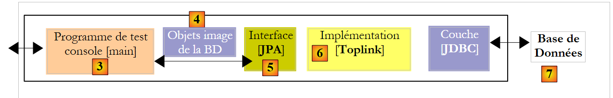 |
Das neue Eclipse-Testprojekt lautet wie folgt:
 |
Der Java-Code ist identisch mit dem des vorherigen Hibernate-Projekts. Die Umgebung (Bibliotheken – persistence.xml – DBMS – Konfigurations- und DDL-Ordner – Ant-Skript) entspricht der bereits in Abschnitt 2.1.15.2 behandelten. Dies wird auch für zukünftige Toplink-Projekte gelten, und wir werden, von Ausnahmen abgesehen, nicht mehr auf diese Umgebung zurückkommen. Insbesondere die Dateien persistence.xml, die die JPA/Toplink-Schicht für verschiedene SGBD-Instanzen konfigurieren, sind diejenigen, die bereits behandelt wurden und sich im Ordner <conf> befinden.
Sollte der Leser Zweifel hinsichtlich der zu befolgenden Vorgehensweise haben, wird er gebeten, sich noch einmal die in der vorherigen Untersuchung beschriebenen Schritte anzusehen.
Das Eclipse-Projekt [3] befindet sich im Beispielordner [4]. Es wird importiert.
Die Ausführung von [InitDB] zusammen mit SGBD und MySQL5 liefert folgende Ergebnisse:
 |
 |
- [1]: die Konsolenausgabe
- [2]: Die Tabellen [jpa02_tl_personne] und [SEQENCE] in der Perspektive SQL Explorer
- [3] und [4]: Struktur und Inhalt von [jpa02_tl_personne].
Die in ddl/mysql5 [5] generierten Skripte SQL lauten wie folgt:
create.sql
CREATE TABLE jpa02_tl_personne (ID BIGINT NOT NULL, PRENOM VARCHAR(30) NOT NULL, DATENAISSANCE DATE NOT NULL, VERSION INTEGER NOT NULL, MARIE TINYINT(1) default 0 NOT NULL, NBENFANTS INTEGER NOT NULL, NOM VARCHAR(30) UNIQUE NOT NULL, CODEPOSTAL VARCHAR(5) NOT NULL, ADR1 VARCHAR(30) NOT NULL, VILLE VARCHAR(20) NOT NULL, ADR3 VARCHAR(30), CEDEX VARCHAR(3), ADR2 VARCHAR(30), PAYS VARCHAR(20) NOT NULL, PRIMARY KEY (ID))
CREATE TABLE SEQUENCE (SEQ_NAME VARCHAR(50) NOT NULL, SEQ_COUNT DECIMAL(38), PRIMARY KEY (SEQ_NAME))
INSERT INTO SEQUENCE(SEQ_NAME, SEQ_COUNT) values ('SEQ_GEN', 1)
drop.sql
DROP TABLE jpa02_tl_personne
DELETE FROM SEQUENCE WHERE SEQ_NAME = 'SEQ_GEN'
2.3. Beispiel 3: Eins-zu-Eins-Beziehung über einen Fremdschlüssel
2.3.1. Das Schema der Datenbank „ “
1  | 2 |
- in [1]: die Datenbank. Diesmal wird die Adresse der Person in einer eigenen Tabelle [adresse] gespeichert. Die Tabelle [personne] ist über einen Fremdschlüssel mit dieser Tabelle verknüpft.
- in [2]: die von Hibernate für MySQL5 generierte Tabelle DDL:
- Zeilen 9–20: die Tabelle [adresse], die mit der Klasse [Adresse] verknüpft wird, die zu einem @Entity-Objekt geworden ist.
- Zeile 10: Der Primärschlüssel der Tabelle [adresse]
- Zeile 30: Anstelle einer vollständigen Adresse findet sich nun in der Tabelle [personne] die Kennung [adresse_id] dieser Adresse.
- Zeilen 34–38: „Person“ (adresse_id) ist ein Fremdschlüssel auf „Adresse“ (ID).
2.3.2. Die @Entity-Objekte, die die Datenbank repräsentieren
Eine Person mit Adresse wird nun durch die folgende Klasse [Personne] dargestellt:
package entites;
...
@Entity
@Table(name = "jpa03_hb_personne")
public class Personne implements Serializable{
@Id
@Column(nullable = false)
@GeneratedValue(strategy = GenerationType.AUTO)
private Long id;
@Column(nullable = false)
@Version
private int version;
@Column(length = 30, nullable = false, unique = true)
private String nom;
@Column(length = 30, nullable = false)
private String prenom;
@Column(nullable = false)
@Temporal(TemporalType.DATE)
private Date datenaissance;
@Column(nullable = false)
private boolean marie;
@Column(nullable = false)
private int nbenfants;
@OneToOne(cascade = CascadeType.ALL, fetch=FetchType.LAZY)
@JoinColumn(name = "adresse_id", unique = true, nullable = false)
private Adresse adresse;
...
}
- Zeilen 32–34: Die Adresse der Person
- Zeile 32: Die Annotation @OneToOne bezeichnet eine Eins-zu-Eins-Beziehung: Eine Person hat mindestens und höchstens eine Adresse. Das Attribut `cascade = CascadeType.ALL` bedeutet, dass jede Operation (persist, merge, remove) auf der @Entity [Personne] auf die @Entity [Adresse] kaskadiert werden muss. Aus Sicht des Persistenzkontexts em bedeutet dies Folgendes: Wenn p eine Person ist und a ihre Adresse ist:
- führt eine explizite Operation em.persist(p) zu einer impliziten Operation em.persist(a)
- Eine explizite Operation em.merge(p) führt zu einer impliziten Operation em.merge(a)
- Eine explizite Operation em.remove(p) führt zu einer impliziten Operation em.remove(a)
- Zeile 32: Die Annotation @OneToOne bezeichnet eine Eins-zu-Eins-Beziehung: Eine Person hat mindestens und höchstens eine Adresse. Das Attribut `cascade = CascadeType.ALL` bedeutet, dass jede Operation (persist, merge, remove) auf der @Entity [Personne] auf die @Entity [Adresse] kaskadiert werden muss. Aus Sicht des Persistenzkontexts em bedeutet dies Folgendes: Wenn p eine Person ist und a ihre Adresse ist:
Die Erfahrung zeigt, dass diese impliziten Kaskaden kein Allheilmittel sind. Der Entwickler vergisst irgendwann, was sie bewirken. Man könnte explizite Operationen im Code vorziehen. Es gibt verschiedene Arten von Kaskaden. Die Annotation @OneToOne hätte wie folgt geschrieben werden können:
//@OneToOne(cascade = CascadeType.ALL, fetch=FetchType.LAZY)
@OneToOne(cascade = {CascadeType.MERGE, CascadeType.PERSIST, CascadeType.REFRESH, CascadeType.REMOVE}, fetch=FetchType.LAZY)
Das Attribut cascade akzeptiert hier als Wert ein Array von Konstanten, die die gewünschten Kaskadentypen angeben.
Das Attribut *fetch=FetchType.LAZY* weist Hibernate an, die Abhängigkeit erst im letzten Moment zu laden. Wenn man eine Liste von Personen in den Persistenzkontext aufnimmt, möchte man nicht unbedingt auch deren Adressen hinzufügen. Beispielsweise möchte man diese Adresse möglicherweise nur für eine bestimmte Person, die von einem Benutzer über eine Weboberfläche ausgewählt wurde. Das Attribut *fetch=FetchType.EAGER* hingegen fordert das sofortige Laden der Abhängigkeiten an.
- (Fortsetzung)
- Zeile 33: Die Annotation @JoinColumn definiert den Fremdschlüssel, den die Tabelle der @Entity [Personne] auf die Tabelle der @Entity [Adresse] besitzt. Das Attribut „name“ definiert den Namen der Spalte, die als Fremdschlüssel dient. Das Attribut „unique=true“ erzwingt eine Eins-zu-Eins-Beziehung: In der Spalte „[adresse_id]“ darf derselbe Wert nicht zweimal vorkommen. Das Attribut „nullable=false“ erzwingt, dass jede Person eine Adresse hat.
Die Adresse einer Person wird nun durch die folgende @Entity [Adresse] dargestellt:
package entites;
...
@Entity
@Table(name = "jpa03_hb_adresse")
public class Adresse implements Serializable {
// Felder
@Id
@Column(nullable = false)
@GeneratedValue(strategy = GenerationType.AUTO)
private Long id;
@Column(nullable = false)
@Version
private int version;
@Column(length = 30, nullable = false)
private String adr1;
@Column(length = 30)
private String adr2;
@Column(length = 30)
private String adr3;
@Column(length = 5, nullable = false)
private String codePostal;
@Column(length = 20, nullable = false)
private String ville;
@Column(length = 3)
private String cedex;
@Column(length = 20, nullable = false)
private String pays;
@OneToOne(mappedBy = "adresse", fetch=FetchType.LAZY)
private Personne personne;
// Konstruktoren
public Adresse() {
}
...
}
- Zeile 4: Die Klasse [Adresse] wird zu einem @Entity-Objekt. Sie bildet somit den Inhalt einer Tabelle in der Datenbank.
- Zeilen 9–12: Wie jedes @Entity-Objekt verfügt auch [Adresse] über einen Primärschlüssel. Dieser wurde „Id“ genannt und weist dieselben (Standard-)Annotationen auf wie der Primärschlüssel Id der @Entity [Personne].
- Zeilen 39–40: Die Eins-zu-Eins-Beziehung zur @Entity [Personne]. Hier gibt es einige Feinheiten:
- Zunächst einmal ist das Feld personne nicht obligatorisch. Es ermöglicht uns, anhand einer Adresse die einzige Person zu ermitteln, die diese Adresse hat. Hätten wir diese Annehmlichkeit nicht gewünscht, gäbe es das Feld personne nicht, und alles würde trotzdem funktionieren.
- Die Eins-zu-Eins-Beziehung zwischen den beiden Entitäten [Personne] und [Adresse] wurde bereits in der @Entity [Personne] konfiguriert:
@OneToOne(cascade = CascadeType.ALL, fetch=FetchType.LAZY)
@JoinColumn(name = "adresse_id", unique = true, nullable = false)
private Adresse adresse;
Damit die beiden Eins-zu-Eins-Konfigurationen nicht miteinander in Konflikt geraten, wird die eine als principale und die andere als inverse betrachtet. Es handelt sich um die sogenannte Beziehung principale, die von der Objekt-Relational-Brücke verwaltet wird. Die andere Beziehung, die sogenannte inverse, wird nicht direkt verwaltet, sondern indirekt über die Beziehung principale. In @Entity [Adresse]:
@OneToOne(mappedBy = "adresse", fetch=FetchType.LAZY)
private Personne personne;
ist es das Attribut mappedBy, das die oben genannte Eins-zu-Eins-Beziehung herstellt, die Beziehung inverse aus der durch das Feld adresse der @Entity [Personne] definierten 1:1-Beziehung principale.
2.3.3. Das Eclipse-/Hibernate-Projekt 1
Die hier verwendete Implementierung JPA stammt von Hibernate. Das Eclipse-Testprojekt lautet wie folgt:
 |
Das Projekt befindet sich unter der Bezeichnung [3] im Beispielordner [4]. Wir werden es importieren.
2.3.4. Erstellung der Datenbank DDL
Gemäß den Anweisungen in Abschnitt 2.1.7 ist die für SGBD und MySQL5 erhaltene DDL diejenige, die am Anfang dieses Abschnitts gezeigt wird.
2.3.5. InitDB
Der Code für [InitDB] lautet wie folgt:
package tests;
...
import entites.Adresse;
import entites.Personne;
public class InitDB {
// Konstanten
private final static String TABLE_PERSONNE = "jpa03_hb_personne";
private final static String TABLE_ADRESSE = "jpa03_hb_adresse";
public static void main(String[] args) throws ParseException {
// Persistenzkontext
EntityManagerFactory emf = Persistence.createEntityManagerFactory("jpa");
EntityManager em = null;
// Man erhält ein EntityManager aus dem vorherigen EntityManagerFactory
em = emf.createEntityManager();
// Transaktionsbeginn
EntityTransaction tx = em.getTransaction();
tx.begin();
// Anfrage
Query sql1;
// Elemente aus der Tabelle PERSONNE löschen
sql1 = em.createNativeQuery("delete from " + TABLE_PERSONNE);
sql1.executeUpdate();
// Elemente aus der Tabelle ADRESSE löschen
sql1 = em.createNativeQuery("delete from " + TABLE_ADRESSE);
sql1.executeUpdate();
// Personen anlegen
Personne p1 = new Personne("Martin", "Paul", new SimpleDateFormat("dd/MM/yy").parse("31/01/2000"), true, 2);
Personne p2 = new Personne("Durant", "Sylvie", new SimpleDateFormat("dd/MM/yy").parse("05/07/2001"), false, 0);
// Adressen anlegen
Adresse a1 = new Adresse("8 rue Boileau", null, null, "49000", "Angers", null, "France");
Adresse a2 = new Adresse("Apt 100", "Les Mimosas", "15 av Foch", "49002", "Angers", "03", "France");
Adresse a3 = new Adresse("x", "x", "x", "x", "x", "x", "x");
Adresse a4 = new Adresse("y", "y", "y", "y", "y", "y", "y");
// Zuordnungen Person <--> Adresse
p1.setAdresse(a1);
a1.setPersonne(p1);
p2.setAdresse(a2);
a2.setPersonne(p2);
// Beibehaltung von Personen und ihrer Adressen (kaskadierend)
em.persist(p1);
em.persist(p2);
// sowie der Adressen a3 und a4, die nicht mit Personen verknüpft sind
em.persist(a3);
em.persist(a4);
// Anzeige von Personen
System.out.println("[personnes]");
for (Object p : em.createQuery("select p from Personne p order by p.nom asc").getResultList()) {
System.out.println(p);
}
// Anzeige der Adressen
System.out.println("[adresses]");
for (Object a : em.createQuery("select a from Adresse a").getResultList()) {
System.out.println(a);
}
// Transaktionsende
tx.commit();
// Ende EntityManager
em.close();
// Ende EntityManagerFactory
emf.close();
// Protokoll
System.out.println("terminé...");
}
}
Wir gehen nur auf diejenigen Punkte ein, die im Vergleich zu dem bereits Behandelten neue Aspekte aufwerfen:
- Zeilen 31–32: Es werden zwei Personen angelegt
- Zeilen 34–37: Es werden vier Adressen angelegt
- Zeilen 39–42: Die Personen (p1, p2) werden den Adressen (a1, a2) zugeordnet. Die Adressen (a3, a4) sind verwaist. Keine Person verweist auf sie. Der Code DDL ermöglicht dies. Während eine Person zwangsläufig eine Adresse hat, gilt das Gegenteil nicht.
- Zeilen 44–45: Die Personen (p1, p2) werden gespeichert. Da wir für die Eins-zu-Eins-Beziehung, die eine Person mit ihrer Adresse verbindet, das Attribut „cascade = CascadeType.ALL“ gesetzt haben, sollten die Adressen (a1, a2) dieser beiden Personen ebenfalls einem persist unterliegen. Das wollen wir überprüfen. Bei den verwaisten Adressen (a3, a4) müssen wir dies explizit vornehmen (Zeilen 47–48).
- Zeilen 51–53: Anzeige der Personentabelle
- Zeilen 56–57: Ausgabe der Adressentabelle
Die Ausführung von [InitDB] zusammen mit MySQL5 liefert folgende Ergebnisse:
 |
 |
- [1]: die Konsolenausgabe
- [2]: die Tabellen [jpa03_hb_*] in der Perspektive SQL Explorer
- [3]: die Personentabelle
- [4]: die Adresstabelle. Sie sind alle vorhanden. Zu beachten ist auch die Verknüpfung zwischen der Spalte [adresse_id] in [3] und der Spalte [id] in [4] (Fremdschlüssel).
2.3.6. Hauptseite
Die Klasse [Main] umfasst sechs Tests, die wir nun durchgehen.
2.3.6.1. Test1
Dieser Test lautet wie folgt:
// Objekterstellung
public static void test1() throws ParseException {
// Persistenzkontext
EntityManager em = getEntityManager();
// Erstellung von Personen
p1 = new Personne("Martin", "Paul", new SimpleDateFormat("dd/MM/yy").parse("31/01/2000"), true, 2);
p2 = new Personne("Durant", "Sylvie", new SimpleDateFormat("dd/MM/yy").parse("05/07/2001"), false, 0);
// Erstellung von Adressen
a1 = new Adresse("8 rue Boileau", null, null, "49000", "Angers", null, "France");
a2 = new Adresse("Apt 100", "Les Mimosas", "15 av Foch", "49002", "Angers", "03", "France");
a3 = new Adresse("x", "x", "x", "x", "x", "x", "x");
a4 = new Adresse("y", "y", "y", "y", "y", "y", "y");
// Zuordnungen Person <--> Adresse
p1.setAdresse(a1);
a1.setPersonne(p1);
p2.setAdresse(a2);
a2.setPersonne(p2);
// Transaktionsstart
EntityTransaction tx = em.getTransaction();
tx.begin();
// Persistenz von Personen
em.persist(p1);
em.persist(p2);
// sowie der Adressen a3 und a4, die nicht mit Personen verknüpft sind
em.persist(a3);
em.persist(a4);
// Transaktionsende
tx.commit();
// Anzeige der Tabellen
dumpPersonne();
dumpAdresse();
}
Dieser Code stammt aus [InitDB]. Das Ergebnis lautet wie folgt:
Beide Tabellen wurden ausgefüllt.
2.3.6.2. Test2
Dieser Test lautet wie folgt:
// ein Objekt des Kontexts ändern
public static void test2() {
// Persistenzkontext
EntityManager em = getEntityManager();
// Transaktion starten
EntityTransaction tx = em.getTransaction();
tx.begin();
// Anzahl der Kinder von p1 erhöhen
p1.setNbenfants(p1.getNbenfants() + 1);
// Änderung des Familienstands
p1.setMarie(false);
// Das Objekt p1 wird automatisch gesichert (Dirty Checking)
// bei der nächsten Synchronisierung (Commit oder Select)
// Transaktion beendet
tx.commit();
// Die neue Tabelle wird angezeigt
dumpPersonne();
}
Das Ergebnis lautet wie folgt:
- Zeile 4: Bei Person p1 hat sich die Anzahl der Kinder um 1 erhöht, und ihre Version ist von 0 auf 1 gewechselt
2.3.6.3. Test4
Dieser Test sieht wie folgt aus:
// Ein Objekt aus dem Persistenzkontext löschen
public static void test4() {
// Persistenzkontext
EntityManager em = getEntityManager();
// Transaktion starten
EntityTransaction tx = em.getTransaction();
tx.begin();
// Das angehängte Objekt p2 wird gelöscht
em.remove(p2);
// Transaktion beenden
tx.commit();
// Die neuen Tabellen werden angezeigt
dumpPersonne();
dumpAdresse();
}
- Zeile 9: Die Person p2 wird gelöscht. Diese steht in einer Kaskadenbeziehung zur Adresse a2. Daher sollte die Adresse a2 ebenfalls gelöscht werden.
Das Ergebnis von Test 4 lautet wie folgt:
- Die in Zeile 3 von Test 1 aufgeführte Person p2 ist in Test 4 nicht mehr vorhanden
- Das Gleiche gilt für ihre Adresse a2, die in Zeile 7 von Test 1 aufgeführt war und in Test 4 fehlt.
2.3.6.4. Test5
Dieser Test lautet wie folgt:
// Trennen, erneut anhängen und ändern
public static void test5() {
// neuer Persistenzkontext
EntityManager em = getNewEntityManager();
// Transaktion starten
EntityTransaction tx = em.getTransaction();
tx.begin();
// p1 wird dem neuen Kontext zugeordnet
p1 = em.find(Personne.class, p1.getId());
// Die Adresse von p1 wird geändert
p1.getAdresse().setVille("Paris");
// Transaktion beendet
tx.commit();
// Die neuen Tabellen werden angezeigt
dumpPersonne();
dumpAdresse();
}
- Zeile 4: Wir haben einen neuen Persistenzkontext, der also leer ist.
- Zeile 9: Die Person p1 wird dort hinzugefügt. p1 wird in der Datenbank gesucht, da es nicht im Kontext vorhanden ist. Die von p1 (seiner Adresse) abhängigen Elemente werden hingegen nicht aus der Datenbank abgerufen, da wir geschrieben haben:
@OneToOne(..., fetch=FetchType.LAZY)
Das ist das Konzept des „Lazy Loading“ oder „Just-in-Time-Ladens“: Die Abhängigkeiten eines persistenten Objekts werden erst dann in den Arbeitsspeicher geladen, wenn sie benötigt werden.
- Zeile 11: Das Feld „Stadt“ der Adresse von p1 wird geändert. Aufgrund von getAdresse und falls die Adresse von p1 noch nicht im Persistenzkontext vorhanden war, wird sie durch einen Lesevorgang aus der Datenbank in diesen geladen.
- Zeile 13: Die Transaktion wird bestätigt, was zur Synchronisierung des Persistenzkontexts mit der Datenbank führt. Dieser stellt fest, dass die Adresse der Person p1 geändert wurde, und speichert sie.
Die Ausführung von test5 liefert folgende Ergebnisse:
- Bei der Person p1 (Zeile 3 von test4, Zeile 10 von test5) hat sich der Wohnort tatsächlich von Angers (Zeile 5 von test4) nach Paris (Zeile 12 von test5) geändert.
2.3.6.5. Test6
Dieser Test lautet wie folgt:
// Ein Objekt vom Typ „Adresse“ löschen
public static void test6() {
EntityTransaction tx = null;
// neuer Persistenzkontext
EntityManager em = getNewEntityManager();
// Transaktion starten
tx = em.getTransaction();
tx.begin();
// Die Adresse a3 wird dem neuen Kontext erneut zugeordnet
a3 = em.find(Adresse.class, a3.getId());
System.out.println(a3);
// sie wird gelöscht
em.remove(a3);
// Transaktionsende
tx.commit();
// Tabelle „Adresse“ ausgeben
dumpAdresse();
}
- Zeile 5: Wir befinden uns in einem neuen, also leeren Persistenzkontext.
- Zeile 10: Die Adresse a3 wird in den Persistenzkontext eingefügt
- Zeile 13: Sie wird gelöscht. Es handelte sich um eine verwaiste Adresse (die nicht mit einer Person verknüpft war). Das Löschen ist daher möglich.
Das Ergebnis der Ausführung lautet wie folgt:
- Die Adresse a3 aus Test 5 (Zeile 6) ist aus den Adressen von Test 6 (Zeilen 11–12) verschwunden
2.3.6.6. Test7
Dieser Test lautet wie folgt:
// Rollback
public static void test7() {
EntityTransaction tx = null;
try {
// neuer Persistenzkontext
EntityManager em = getNewEntityManager();
// Transaktion starten
tx = em.getTransaction();
tx.begin();
// Die Adresse a1 wird dem neuen Kontext erneut zugeordnet
newa1 = em.find(Adresse.class, a1.getId());
// Die Adresse a4 wird dem neuen Kontext erneut zugeordnet
newa4 = em.find(Adresse.class, a4.getId());
// Es wird versucht, sie zu löschen – sollte eine Ausnahme auslösen, da eine mit einer Person verknüpfte Adresse nicht gelöscht werden kann, was bei „newa1“ der Fall ist
em.remove(newa4);
em.remove(newa1);
// Transaktion beendet
tx.commit();
} catch (RuntimeException e1) {
// Es ist ein Problem aufgetreten
System.out.format("Erreur dans transaction [%s%n%s%n%s%n%s]%n", e1.getClass().getName(), e1.getMessage(), e1.getCause(), e1.getCause()
.getCause());
try {
if (tx.isActive())
tx.rollback();
} catch (RuntimeException e2) {
System.out.format("Erreur au rollback [%s]%n", e2.getMessage());
}
// Der aktuelle Kontext wird abgebrochen
em.clear();
}
// Dump – die Tabelle „Adresse“ dürfte sich aufgrund des Rollbacks nicht verändert haben
dumpAdresse();
}
- test7: Es wird ein Rollback einer Transaktion getestet
- Zeile 6: Wir befinden uns in einem neuen, also leeren Persistenzkontext.
- Zeile 11: Die Adresse a1 wird unter der Referenz newa1 in den Persistenzkontext aufgenommen
- Zeile 13: Die Adresse a4 wird unter der Referenz newa4 in den Persistenzkontext aufgenommen
- Zeilen 15–16: Die beiden Adressen newa1 und newa4 werden gelöscht. newa1 ist die Adresse der Person p1 und verweist daher in der Datenbank p1 über einen Fremdschlüssel auf newa1. Das Löschen von newa1 schlägt daher fehl und löst bei der Synchronisierung des Persistenzkontexts beim Commit der Transaktion (Zeile 18) eine Ausnahme aus. Diese führt zu einem rollback (Zeile 25), wodurch beide Operationen der Transaktion rückgängig gemacht werden. Man sollte daher feststellen, dass die Adresse newa4, die rechtmäßig gelöscht worden wäre, nicht gelöscht wurde.
Die Ausführung liefert folgendes Ergebnis:
main : ----------- test6
A[3,0,x,x,x,x,x,x,x]
[adresses]
A[1,1,8 rue Boileau,null,null,49000,Paris,null,France]
A[4,0,y,y,y,y,y,y,y]
main : ----------- test7
Erreur dans transaction [javax.persistence.RollbackException
Error while commiting the transaction
org.hibernate.ObjectDeletedException: deleted entity passed to persist: [entites.Adresse#<null>]
null]
[adresses]
A[1,1,8 rue Boileau,null,null,49000,Paris,null,France]
A[4,0,y,y,y,y,y,y,y]
- Die Adressentabelle von Test 7 (Zeilen 12–13) ist identisch mit der von Test 6 (Zeilen 4–5). Das Rollback scheint stattgefunden zu haben. Allerdings ist die Fehlermeldung in Zeile 9 rätselhaft und sollte näher untersucht werden. Es scheint, als sei nicht die erwartete Ausnahme aufgetreten. Man muss die Hibernate-Protokolle in log4j.properties in den Modus DEBUG umwandeln, um mehr Klarheit zu gewinnen:
# Root-Logger-Option
log4j.rootLogger=ERROR, stdout
# Hibernate-Protokollierungsoptionen (INFO zeigt nur Startmeldungen an)
log4j.logger.org.hibernate=DEBUG
Man stellt dann fest, dass Hibernate, als die Adresse a1 in den Persistenzkontext aufgenommen wurde, dort auch die Person p1 abgelegt hat, wahrscheinlich aufgrund der Eins-zu-Eins-Beziehung der @Entity [Adresse]:
@OneToOne(mappedBy = "adresse", fetch=FetchType.LAZY)
private Personne personne;
Obwohl hier nach „LazyLoading“ gefragt wurde, wird dennoch sofort die Abhängigkeit [Personne] geladen. Das bedeutet wahrscheinlich, dass das Attribut fetch=FetchType.LAZY hier keine Bedeutung hat. Anschließend stellt man fest, dass Hibernate beim Commit der Transaktion nicht nur das Löschen der Adressen „a1“ und „a4“, sondern auch das Speichern der Person „p1“ vorbereitet hat. Und genau hier tritt die Ausnahme auf: Da für die Person p1 eine Kaskadenauswirkung auf ihre Adresse besteht, möchte Hibernate auch die Adresse a1 persistieren, obwohl diese gerade gelöscht wurde. Die Ausnahme wird von Hibernate ausgelöst und nicht vom JDBC-Treiber. Daher die Meldung in Zeile 9 weiter oben. Außerdem lässt sich feststellen, dass die Anweisung rollback in Zeile 25 nie ausgeführt wird, da die Transaktion inaktiv geworden ist. Der Test in Zeile 24 verhindert somit die Ausführung von rollback.
Das angestrebte Ziel – die Darstellung eines Rollbacks – wurde somit nicht erreicht. Tatsächlich wurde kein Befehl SQL an die Datenbank gesendet. Es sind einige Punkte zu beachten:
- Der Vorteil der Aktivierung detaillierter Protokolle, um zu verstehen, was das ORM tut
- Ein ORM kann dem Entwickler zwar das Leben erleichtern, es aber auch erschweren, indem es Verhaltensweisen verbirgt, die der Entwickler kennen müsste. In diesem Fall geht es um die Art und Weise, wie die Abhängigkeiten einer @Entity geladen werden.
2.3.7. Eclipse-/Hibernate-Projekt 2
Wir kopieren das Eclipse-/Hibernate-Projekt und fügen es ein, um die Konfiguration der @Entity-Objekte leicht anzupassen:
 |
Das Projekt [3] befindet sich im Beispielordner [4]. Wir importieren es.
Wir ändern lediglich das @Entity [Adresse], damit es keine umgekehrte Eins-zu-Eins-Beziehung mehr zum @Entity [Personne] hat:
package entites;
...
@Entity
@Table(name = "jpa04_hb_adresse")
public class Adresse implements Serializable {
// Felder
@Id
@Column(nullable = false)
@GeneratedValue(strategy = GenerationType.AUTO)
private Long id;
@Column(nullable = false)
@Version
private int version;
@Column(length = 30, nullable = false)
private String adr1;
...
@Column(length = 20, nullable = false)
private String pays;
// @OneToOne(mappedBy = „Adresse“, fetch=FetchType.LAZY)
// private Person Person;
// Konstruktoren
public Adresse() {
}
- Zeilen 25–26: Die inverse Beziehung @OneToOne wird entfernt. Man muss sich bewusst machen, dass eine inverse Beziehung niemals unverzichtbar ist. Nur die Hauptbeziehung ist unverzichtbar. Die inverse Beziehung kann aus Gründen der Einfachheit verwendet werden. In diesem Fall ermöglichte sie es, auf einfache Weise den Eigentümer einer Adresse zu ermitteln. Eine inverse Beziehung kann immer durch eine Abfrage JPQL ersetzt werden. Das werden wir im folgenden Beispiel zeigen.
Die Testprogramme wurden unverändert übernommen. Für uns ist lediglich Test 7 von Interesse, in dem wir die eins-zu-eins-Umkehrbeziehung in Aktion gesehen haben. Außerdem fügen wir einen Test 8 hinzu, um zu zeigen, wie man auch ohne die Umkehrbeziehung „Adresse -> Person“ die Person mit einer bestimmten Adresse ermitteln kann.
Test 7 bleibt unverändert. Seine Ausführung liefert nun folgende Ergebnisse (Protokolle deaktiviert):
main : ----------- test6
A[3,0,x,x,x,x,x,x,x]
[adresses]
A[1,1,8 rue Boileau,null,null,49000,Paris,null,France]
A[4,0,y,y,y,y,y,y,y]
main : ----------- test7
Erreur dans transaction [javax.persistence.RollbackException
Error while commiting the transaction
org.hibernate.exception.ConstraintViolationException: could not delete: [entites.Adresse#1]
java.sql.SQLException: Cannot delete or update a parent row: a foreign key constraint fails (`jpa/jpa04_hb_personne`, CONSTRAINT `FKEA3F04515FE379D0` FOREIGN KEY (`adresse_id`) REFERENCES `jpa04_hb_adresse` (`id`))]
[adresses]
A[1,1,8 rue Boileau,null,null,49000,Paris,null,France]
A[4,0,y,y,y,y,y,y,y]
- Diesmal tritt tatsächlich die erwartete Ausnahme auf: Sie wird vom JDBC-Treiber ausgelöst, weil versucht wurde, in der Tabelle „[adresse]“ eine Zeile zu löschen, auf die ein Fremdschlüssel einer Zeile aus der Tabelle „[personne]“ verweist. Die Zeile [10] gibt Aufschluss über die Fehlerursache.
- Der Rollback ist erfolgreich durchgeführt worden: Nach Abschluss von Test 7 entspricht die Tabelle [adresse] (Zeilen 12–13) dem Zustand nach Abschluss von Test 6 (Zeilen 4–5).
Worin besteht der Unterschied zu Test 7 des vorherigen Eclipse-Projekts? Warum tritt hier eine JDBC-Ausnahme auf, die beim vorherigen Test nicht aufgetreten ist? Da die @Entity [Adresse] keine umgekehrte Eins-zu-Eins-Beziehung mehr zur @Entity [Personne] hat, wird sie von Hibernate isoliert verwaltet. Als die Adresse newa1 in den Persistenzkontext aufgenommen wurde, hat Hibernate die Person p1, die diese Adresse besitzt, nicht ebenfalls in diesen Kontext aufgenommen. Das Löschen der Adressen newa1 und newa4 erfolgte daher, ohne dass sich die Entität Personne im Persistenzkontext befand.
Wie könnte man nun ausgehend von der Adresse newa1 die Person p1 ermitteln, die diese Adresse hat? Das ist eine berechtigte Frage. Der folgende Test 8 beantwortet sie:
// umgekehrte Eins-zu-Eins-Beziehung
// realisiert durch eine Abfrage JPQL
public static void test8() {
EntityTransaction tx = null;
// neuer Persistenzkontext
EntityManager em = getNewEntityManager();
// Transaktionsbeginn
tx = em.getTransaction();
tx.begin();
// Die Adresse a1 wird dem neuen Kontext erneut zugeordnet
newa1 = em.find(Adresse.class, a1.getId());
// Der Inhaber dieser Adresse wird abgerufen
Personne p1 = (Personne) em.createQuery("select p from Personne p join p.adresse a where a.id=:adresseId").setParameter("adresseId", newa1.getId())
.getSingleResult();
// Anzeige der Daten
System.out.println("adresse=" + newa1);
System.out.println("personne=" + p1);
// Transaktion beendet
tx.commit();
}
- Zeile 6: neuer leerer Persistenzkontext
- Zeilen 8–9: Beginn der Transaktion
- Zeile 11: Die Adresse a1 wird in den Persistenzkontext aufgenommen und durch newa1 referenziert.
- Zeile 13: Die Person p1 mit der Adresse newa1 wird über eine Abfrage JPQL abgerufen. Es ist bekannt, dass [Personne] und [Adresse] durch eine Fremdschlüsselbeziehung verknüpft sind. In der Klasse [Personne] ist es das Feld [adresse] mit der Annotation @OneToOne, das diese Beziehung verkörpert. Die Schreibweise JPQL „select p from Personne p join p.adresse a“ führt eine Verknüpfung zwischen den Tabellen [personne] und [adresse] durch. Das in einer Hibernate-Konsole generierte Äquivalent SQL (siehe Beispiele in Abschnitt 2.1.12) lautet wie folgt:
Die Verknüpfung der beiden Tabellen ist deutlich zu erkennen. Jede Person ist nun mit ihrer Adresse verknüpft. Es muss noch präzisiert werden, dass wir uns nur für die Adresse newa1 interessieren. Die Abfrage lautet nun „select p from Person p join p.adresse a where a.id=:adresseId“. Zu beachten ist die Verwendung der Aliase p und a. Die Abfragen mit JPQL nutzen die Aliase intensiv. So bewirkt der Ausdruck „from Person p join p.adresse a“, dass eine Person durch den Alias p und ihre Adresse (p.adresse) durch den Alias a dargestellt wird. Die Einschränkungsoperation „where a.id=:adresseId“ beschränkt die angeforderten Zeilen ausschließlich auf Personen mit dem Wert :adresseId als Kennung ihrer Adresse a. :adresseId wird als Parameter bezeichnet, und der Befehl JPQL als parametrisierter Befehl JPQL. Bei der Ausführung muss dieser Parameter einen Wert erhalten. Dies geschieht über die Methode
mit der einem durch seinen Namen identifizierten Parameter ein Wert zugewiesen werden kann. Es sei angemerkt, dass setParameter ein Objekt vom Typ Query zurückgibt, genau wie die Methode createQuery. Daher können Aufrufe der Methode [em.createQuery(...).setParameter(...).getSingleResult(...)] aneinandergehängt werden, da die Methoden [setParameter, getSingleResult] Methoden der Schnittstelle Query sind. Die Methode [getSingleResult] wird für Abfragen der Methode Select verwendet, die nur ein einziges Ergebnis liefern. Dies ist hier der Fall.
- Zeilen 16–17: Zur Überprüfung werden die Adresse newa1 und die Person p1, die diese Adresse hat, angezeigt.
Das Ergebnis lautet wie folgt:
Es ist korrekt. Aus diesem Beispiel lässt sich ableiten, dass die umgekehrte Eins-zu-Eins-Beziehung von der @entity [Adresse] zur @entity [Personne] nicht unbedingt erforderlich war. Die Erfahrung hat hier gezeigt, dass ihre Entfernung zu einem vorhersehbareren Verhalten des Codes führte. Dies ist häufig der Fall.
2.3.8. Hibernate-Konsole
Im vorangegangenen Test 8 wurde ein Befehl JPQL verwendet, um eine Verknüpfung zwischen den Entitäten Personne und Adresse herzustellen. Obwohl sie der Sprache SQL ähneln, erfordern die Hibernate-Sprachen JPQL, JPA oder HQL eine Einarbeitungszeit, und die Hibernate-Konsole eignet sich hervorragend dafür. Wir haben sie bereits in Abschnitt 2.1.12 verwendet, um eine einzelne Tabelle abzufragen. Wir wiederholen dies hier, um zwei Tabellen abzufragen, die durch eine Fremdschlüsselbeziehung miteinander verknüpft sind.
Erstellen wir eine Hibernate-Konsole für unser aktuelles Eclipse-Projekt:
 |
- [1]: Wir wechseln in die Perspektive [Hibernate Console] (Fenster / Perspektive öffnen / Andere)
- [2]: Wir erstellen eine neue Konfiguration
- über die Schaltfläche [4] und wählen das Java-Projekt aus, für das die Hibernate-Konfiguration erstellt werden soll. Der Name wird in [3] angezeigt.
- In [5] geben wir dieser Konfiguration den gewünschten Namen. Hier haben wir den Namen des Java-Projekts übernommen.
- In [6] geben wir an, dass wir eine Konfiguration JPA verwenden, damit das Tool weiß, dass es die Datei [META-INF/persistence.xml] verwenden soll
- In „[7]“ geben wir an, dass in dieser Datei „[META-INF/persistence.xml]“ die Persistenz-Einheit namens „jpa“ verwendet werden soll.
- In der Datei „[8]“ bestätigen wir die Konfiguration.
Im weiteren Verlauf muss die Datei „SGBD“ gestartet werden. Hier handelt es sich um „MySQL5“.
 |
- in [1]: Die erstellte Konfiguration weist eine Baumstruktur mit drei Zweigen auf
- in [2]: Der Zweig [Configuration] listet die Objekte auf, die die Konsole zur Konfiguration verwendet hat: hier die @Entity-Objekte Personne und Adresse.
- in [3]: Die Session Factory ist ein Hibernate-Konzept, das dem EntityManager von JPA ähnelt. Sie stellt mithilfe der Objekte des Zweigs [Configuration] die Brücke zwischen Objekt und Relationaldatenbank her. In [3] werden die Objekte des Persistenzkontexts vorgestellt, hier erneut die @Entity-Objekte Personne und Adresse.
- In [4]: die Datenbank, auf die über die in [persistence.xml] enthaltene Konfiguration zugegriffen wird. Dort finden sich die Tabellen [jpa04_hb_*], die von unserem aktuellen Eclipse-Projekt generiert wurden.
 |
- In [1] wird ein Editor HQL
- im Editor HQL,
- in [2] wählen wir die zu verwendende Hibernate-Konfiguration aus, falls mehrere vorhanden sind (was hier der Fall ist)
- In [3] gibt man den Befehl JPQL ein, den man ausführen möchte, hier den Befehl JPQL aus Test 8
- In [4] wird der Befehl ausgeführt
- Bei [5] erhält man die Ergebnisse der Abfrage im Fenster [Hibernate Query Result].
- In [6] kann man im Fenster [Hibernate Dynamic SQL preview] die Abfrage SQL einsehen, die ausgeführt wurde.
Eine weitere Möglichkeit, das gleiche Ergebnis zu erzielen:
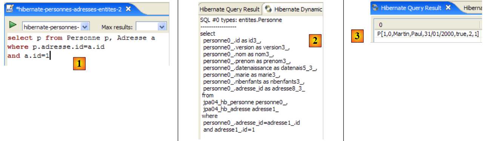 |
- in [1]: Der Befehl JPQL führt die Verknüpfung der Entitäten Personne und Adresse durch. [ref1] bezeichnet diese Form als „Theta-Verknüpfung“.
- in [2]: das Äquivalent zu SQL
- in [3]: das Ergebnis
Eine dritte Form, die nur von Hibernate akzeptiert wird (HQL):
 |
- in [1]: der Befehl HQL. JPQL akzeptiert die Notation p.adresse.id nicht. Es akzeptiert nur eine Indirektionsstufe.
- in [2]: das Äquivalent SQL. Man sieht, dass hier die Verknüpfung zwischen Tabellen vermieden wird.
- in [3]: das Ergebnis
Hier sind weitere Beispiele:
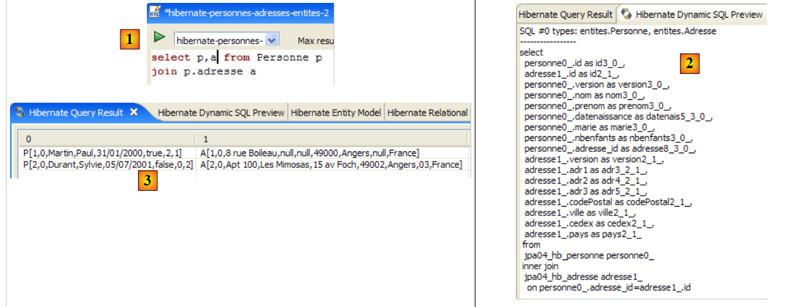 |
- in [1]: die Liste der Personen mit ihren Adressen
- in [2]: das Äquivalent zu SQL.
- in [3]: das Ergebnis
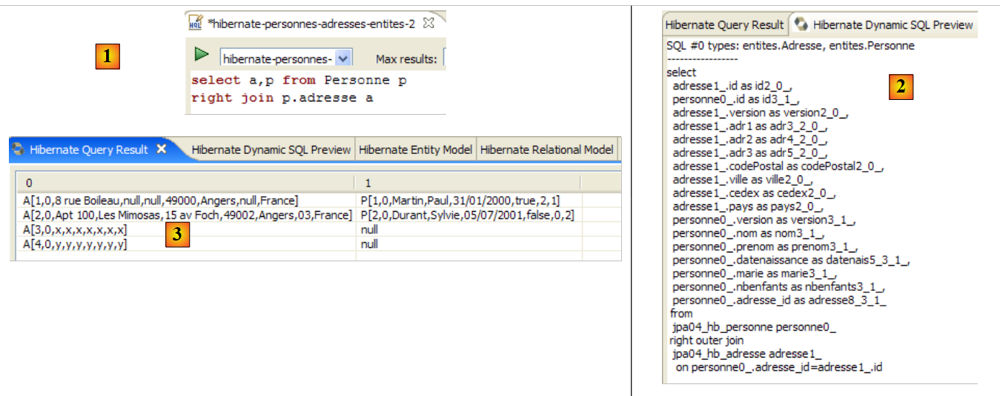 |
- in [1]: die Liste der Adressen mit ihrem Eigentümer, falls vorhanden, oder andernfalls ohne (rechte äußere Verknüpfung: Die Entität Adresse, die die Zeilen liefert, die keine Beziehung zu Personne haben, befindet sich rechts vom Schlüsselwort join).
- in [2]: das Äquivalent zu SQL.
- in [3]: das Ergebnis
Es ist zu beachten, dass nur die Entität Personne eine Beziehung zur Entität Adresse unterhält. Das Gegenteil trifft nicht mehr zu, da die umgekehrte Eins-zu-Eins-Beziehung mit der Bezeichnung personne in der Entität Adresse gelöscht wurde. Hätte diese umgekehrte Beziehung bestanden, hätte man schreiben können:
 |
- in [1]: die Liste der Adressen mit ihrem Eigentümer, falls vorhanden, oder andernfalls ohne (linke äußere Verknüpfung: Die Entität Adresse, die die Zeilen ohne Beziehung zu Personne liefert, steht links vom Schlüsselwort join).
- in [2]: das Äquivalent zu SQL.
- in [3]: das Ergebnis
Wir empfehlen dem Leser dringend, die Sprache JPQL mit der Hibernate-Konsole zu üben.
2.3.9. Implementierung JPA / Toplink
Wir verwenden nun eine JPA / Toplink-Implementierung:
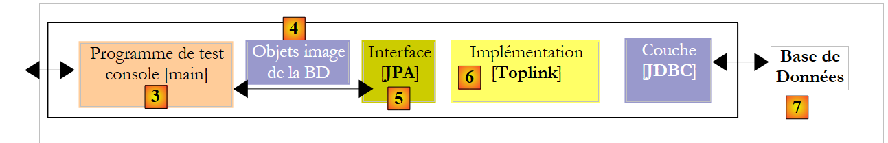 |
Das neue Eclipse-Testprojekt sieht wie folgt aus:
 |
Der Java-Code ist identisch mit dem des vorherigen Hibernate-Projekts. Die Umgebung (Bibliotheken – persistence.xml – DBMS – Konfigurations- und DDL-Ordner – Ant-Skript) entspricht der in Abschnitt 2.1.15.2 beschriebenen. Das Eclipse-Projekt [3] befindet sich im Beispielordner [4]. Wir werden es importieren.
Die Datei <persistence.xml> wird an einer Stelle geändert, nämlich bei den deklarierten Entitäten:
<persistence-unit name="jpa" transaction-type="RESOURCE_LOCAL">
<!-- Anbieter -->
<provider>oracle.toplink.essentials.PersistenceProvider</provider>
<!-- persistente Klassen -->
<class>entites.Personne</class>
<class>entites.Adresse</class>
<!-- Eigenschaften der Persistenz-Einheit -->
...
- Zeilen 5 und 6: die beiden verwalteten Entitäten
Die Ausführung von [InitDB] zusammen mit SGBD und MySQL5 liefert folgende Ergebnisse:
 |
In [1], die Konsolenausgabe, in [2] die beiden generierten Tabellen [jpa04_tl], in [3] die generierten Skripte SQL. Ihr Inhalt lautet wie folgt:
create.sql
CREATE TABLE jpa04_tl_personne (ID BIGINT NOT NULL, PRENOM VARCHAR(30) NOT NULL, DATENAISSANCE DATE NOT NULL, VERSION INTEGER NOT NULL, MARIE TINYINT(1) default 0 NOT NULL, NBENFANTS INTEGER NOT NULL, NOM VARCHAR(30) UNIQUE NOT NULL, adresse_id BIGINT UNIQUE NOT NULL, PRIMARY KEY (ID))
CREATE TABLE jpa04_tl_adresse (ID BIGINT NOT NULL, ADR3 VARCHAR(30), CODEPOSTAL VARCHAR(5) NOT NULL, ADR1 VARCHAR(30) NOT NULL, VILLE VARCHAR(20) NOT NULL, VERSION INTEGER NOT NULL, CEDEX VARCHAR(3), ADR2 VARCHAR(30), PAYS VARCHAR(20) NOT NULL, PRIMARY KEY (ID))
ALTER TABLE jpa04_tl_personne ADD CONSTRAINT FK_jpa04_tl_personne_adresse_id FOREIGN KEY (adresse_id) REFERENCES jpa04_tl_adresse (ID)
CREATE TABLE SEQUENCE (SEQ_NAME VARCHAR(50) NOT NULL, SEQ_COUNT DECIMAL(38), PRIMARY KEY (SEQ_NAME))
INSERT INTO SEQUENCE(SEQ_NAME, SEQ_COUNT) values ('SEQ_GEN', 1)
drop.sql
ALTER TABLE jpa04_tl_personne DROP FOREIGN KEY FK_jpa04_tl_personne_adresse_id
DROP TABLE jpa04_tl_personne
DROP TABLE jpa04_tl_adresse
DELETE FROM SEQUENCE WHERE SEQ_NAME = 'SEQ_GEN'
2.4. Beispiel 4: Eins-zu-Viele-Beziehung
2.4.1. Das Schema der Datenbank „ “
1  | 2 |
- in [1], die Datenbank, und in [2], deren DDL (MySQL5)
Ein Artikel A(id, version, name) gehört genau zu einer Kategorie C(id, version, name). Eine Kategorie C kann 0, 1 oder mehrere Artikel enthalten. Es besteht eine Eins-zu-Viele-Beziehung (Kategorie -> Artikel) und die umgekehrte Viele-zu-Eins-Beziehung (Artikel -> Kategorie). Diese Beziehung wird durch den Fremdschlüssel der Tabelle [article] auf die Tabelle [categorie] veranschaulicht (Zeilen 24–28 der DDL).
2.4.2. Die @Entity-Objekte, die die Datenbank repräsentieren
Ein Artikel wird durch die folgende @Entity [Article] dargestellt:
package entites;
...
@Entity
@Table(name="jpa05_hb_article")
public class Article implements Serializable {
// Felder
@Id
@GeneratedValue(strategy = GenerationType.AUTO)
private Long id;
@SuppressWarnings("unused")
@Version
private int version;
@Column(length = 30)
private String nom;
// Hauptbeziehung „Artikel“ (many) -> „Kategorie“ (one)
// implementiert durch einen Fremdschlüssel (categorie_id) in „Artikel“
// 1 Artikel hat zwingend 1 Kategorie (nullable=false)
@ManyToOne(fetch=FetchType.LAZY)
@JoinColumn(name = "categorie_id", nullable = false)
private Categorie categorie;
// Konstruktoren
public Article() {
}
// Getter und Setter
...
// toString
public String toString() {
return String.format("Article[%d,%d,%s,%d]", id, version, nom, categorie.getId());
}
}
- Zeilen 9–11: Primärschlüssel der @Entity
- Zeilen 13–15: Versionsnummer
- Zeilen 17–18: Name des Artikels
- Zeilen 20–25: Mehr-zu-Eins-Beziehung, die die @Entity Article mit der @Entity Categorie verbindet:
- Zeile 23: die Anmerkung ManyToOne. „Many“ bezieht sich auf die @Entity Article, in der wir uns befinden, und „One“ auf die @Entity Categorie (Zeile 25). Eine Kategorie (One) kann mehrere Artikel (Many) haben.
- Zeile 24: Die Annotation ManyToOne definiert die Fremdschlüsselspalte in der Tabelle [article]. Sie heißt (name) categorie_id, und jede Zeile muss einen Wert in dieser Spalte (nullable=false) enthalten.
- Zeile 25: Die Kategorie, zu der der Artikel gehört. Wenn ein Artikel in den Persistenzkontext aufgenommen wird, wird festgelegt, dass seine Kategorie dort nicht sofort hinterlegt wird (fetch=FetchType.LAZY, Zeile 23). Es ist unklar, ob diese Anforderung sinnvoll ist. Das wird sich zeigen.
Eine Kategorie wird durch die folgende @Entity [Categorie] dargestellt:
package entites;
...
@Entity
@Table(name="jpa05_hb_categorie")
public class Categorie implements Serializable {
// Felder
@Id
@GeneratedValue(strategy = GenerationType.AUTO)
private Long id;
@SuppressWarnings("unused")
@Version
private int version;
@Column(length = 30)
private String nom;
// umgekehrte Beziehung „Kategorie (one)“ -> „Artikel (many)“ der Beziehung „Artikel (many)“ -> „Kategorie (one)“
// Kaskadierung beim Einfügen: Kategorie -> Einfügen von Artikeln
// Kaskadierung bei Aktualisierung: Kategorie -> Aktualisierung der Artikel
// Kaskadierung beim Löschen: Kategorie -> Artikel löschen
@OneToMany(mappedBy = "categorie", cascade = { CascadeType.ALL })
private Set<Article> articles = new HashSet<Article>();
// Konstruktoren
public Categorie() {
}
// Getter und Setter
...
// toString
public String toString() {
return String.format("Categorie[%d,%d,%s]", id, version, nom);
}
// bidirektionale Verknüpfung Kategorie <--> Artikel
public void addArticle(Article article) {
// Der Artikel wird zur Artikelsammlung der Kategorie hinzugefügt
articles.add(article);
// Der Artikel wechselt die Kategorie
article.setCategorie(this);
}
}
- Zeilen 8–11: der Primärschlüssel der @Entity
- Zeilen 12–14: ihre Version
- Zeilen 16–17: der Name der Kategorie
- Zeilen 19–24: die Menge (Set) der Artikel der Kategorie
- Zeile 23: Die Annotation @OneToMany bezeichnet eine Eins-zu-Viele-Beziehung. Das „One“ bezeichnet die @Entity [Categorie], in der wir uns befinden, das „Many“ den Typ [Article] aus Zeile 24: Eine (One) Kategorie hat mehrere (Many) Artikel.
- Zeile 23: Die Annotation ist das Gegenteil (mappedBy) der Annotation ManyToOne, die auf dem Feld categorie der @Entity Article gesetzt ist: mappedBy=categorie. Die Beziehung ManyToOne, die auf das Feld categorie der @Entity Article angewendet wird, ist die Hauptbeziehung. Sie ist unverzichtbar. Sie verkörpert die Fremdschlüsselbeziehung, die die @Entity Article mit der @Entity Categorie verbindet. Die Beziehung OneToMany, die auf das Feld articles der @Entity Categorie verweist, ist die umgekehrte Beziehung. Sie ist nicht zwingend erforderlich. Sie dient der Vereinfachung beim Abrufen der Artikel einer Kategorie. Ohne diese Vereinfachung würden diese Artikel über eine Abfrage JPQL abgerufen.
- Zeile 23: cascadeType.ALL sorgt dafür, dass die auf einer @Entity Categorie durchgeführten Operationen (persist, merge, remove) auf deren Artikel kaskadiert werden.
- Zeile 24: Die Artikel einer Kategorie werden in ein Objekt vom Typ Set<Article> abgelegt. Der Typ Set lässt keine Duplikate zu. Daher kann derselbe Artikel nicht zweimal in das Objekt Set<Article> aufgenommen werden. Was bedeutet „derselbe Artikel“? Um auszudrücken, dass Artikel a derselbe ist wie Artikel b, verwendet Java den Ausdruck a.equals(b). In der Klasse „Object“, der Basisklasse aller Klassen, ist a.equals(b) wahr, wenn a == b ist, c.a.d. wenn die Objekte a und b denselben Speicherort haben. Man könnte sagen wollen, dass die Artikel a und b identisch sind, wenn sie denselben Namen haben. In diesem Fall muss der Entwickler zwei Methoden in der Klasse [Article] neu definieren:
- equals: Diese Methode muss „true“ zurückgeben, wenn die beiden Artikel denselben Namen haben
- hashCode: muss für zwei Objekte [Article], die die Methode equals als gleich ansieht, denselben ganzzahligen Wert zurückgeben. Hier wird der Wert also aus dem Namen des Artikels gebildet. Der von hashCode zurückgegebene Wert kann eine beliebige Ganzzahl sein. Er wird in verschiedenen Objektcontainern verwendet, insbesondere in Hashtabellen (Hashtable).
Die Relation OneToMany kann neben dem Typ „Set“ auch andere Typen zum Speichern des „Many“-Elements verwenden, beispielsweise Objekte vom Typ „List“. Auf diese Fälle wird in diesem Dokument nicht eingegangen. Der Leser findet sie in [ref1].
- Zeile 38: Mit der Methode [addArticle] können wir einen Artikel zu einer Kategorie hinzufügen. Die Methode sorgt dafür, dass beide Enden der Beziehung OneToMany, die [Categorie] mit [Article] verbindet, aktualisiert werden.
2.4.3. Das Eclipse-/Hibernate-Projekt 1
Die hier verwendete Implementierung JPA stammt von Hibernate. Das Eclipse-Testprojekt sieht wie folgt aus:
 |
Das Projekt befindet sich unter der Bezeichnung [3] im Beispielordner [4]. Wir werden es importieren.
2.4.4. Erstellung der Datenbank-DDL
Wenn man den Anweisungen in Abschnitt 2.1.7 folgt, ist die für SGBD und MySQL5 erhaltene DDL diejenige, die zu Beginn dieses Beispiels in Abschnitt 2.4.1 gezeigt wurde.
2.4.5. InitDB
Der Code für [InitDB] lautet wie folgt:
package tests;
...
public class InitDB {
// Konstanten
private final static String TABLE_ARTICLE = "jpa05_hb_article";
private final static String TABLE_CATEGORIE = "jpa05_hb_categorie";
public static void main(String[] args) {
// Persistenzkontext
EntityManagerFactory emf = Persistence.createEntityManagerFactory("jpa");
EntityManager em = null;
// Ein EntityManager wird aus dem vorherigen EntityManagerFactory abgerufen
em = emf.createEntityManager();
// Transaktionsbeginn
EntityTransaction tx = em.getTransaction();
tx.begin();
// Anfrage
Query sql1;
// Elemente aus der Tabelle ARTICLE löschen
sql1 = em.createNativeQuery("delete from " + TABLE_ARTICLE);
sql1.executeUpdate();
// Elemente aus der Tabelle CATEGORIE löschen
sql1 = em.createNativeQuery("delete from " + TABLE_CATEGORIE);
sql1.executeUpdate();
// drei Kategorien anlegen
Categorie categorieA = new Categorie();
categorieA.setNom("A");
Categorie categorieB = new Categorie();
categorieB.setNom("B");
Categorie categorieC = new Categorie();
categorieC.setNom("C");
// 3 Artikel anlegen
Article articleA1 = new Article();
articleA1.setNom("A1");
Article articleA2 = new Article();
articleA2.setNom("A2");
Article articleB1 = new Article();
articleB1.setNom("B1");
// diese mit ihrer Kategorie verknüpfen
categorieA.addArticle(articleA1);
categorieA.addArticle(articleA2);
categorieB.addArticle(articleB1);
// Kategorien speichern und Artikel kaskadierend (Einfügen) hinzufügen
em.persist(categorieA);
em.persist(categorieB);
em.persist(categorieC);
// Kategorien anzeigen
System.out.println("[categories]");
for (Object p : em.createQuery("select c from Categorie c order by c.nom asc").getResultList()) {
System.out.println(p);
}
// Artikel anzeigen
System.out.println("[articles]");
for (Object p : em.createQuery("select a from Article a order by a.nom asc").getResultList()) {
System.out.println(p);
}
// Transaktion beenden
tx.commit();
// Ende EntityManager
em.close();
// Ende EntityMangerFactory
emf.close();
// Protokoll
System.out.println("terminé...");
}
}
- Zeilen 22–27: Die Tabellen [article] und [categorie] werden geleert. Es ist zu beachten, dass man mit der Tabelle beginnen muss, die den Fremdschlüssel enthält. Würde man mit der Tabelle [categorie] beginnen, würden Kategorien gelöscht, auf die Zeilen der Tabelle [article] verweisen, und dies würde von SGBD abgelehnt werden.
- Zeilen 29–34: Es werden drei Kategorien A, B und C angelegt
- Zeilen 36–41: Es werden drei Artikel A1, A2 und B1 angelegt (der Buchstabe gibt die Kategorie an)
- Zeilen 43–45: Die drei Artikel werden ihren jeweiligen Kategorien zugeordnet
- Zeilen 47–49: Die drei Kategorien werden in den Persistenzkontext aufgenommen. Aufgrund der Kaskade „Kategorie → Artikel“ werden auch die zugehörigen Artikel dort abgelegt. Somit befinden sich nun alle angelegten Objekte im Persistenzkontext.
- Zeilen 50–59: Der Persistenzkontext wird abgefragt, um die Liste der Kategorien und Artikel abzurufen. Es ist bekannt, dass dies eine Synchronisierung des Kontexts mit der Datenbank zur Folge hat. Zu diesem Zeitpunkt werden die Kategorien und Artikel in ihren jeweiligen Tabellen gespeichert.
Die Ausführung von [InitDB] zusammen mit MySQL5 liefert folgende Ergebnisse:
 |
- [1]: die Konsolenausgabe
- [2]: die Tabellen von [jpa05_hb_*] in der Perspektive „SQL Explorer“
- [3]: die Kategorietabelle
- [4]: die Artikeltabelle. Zu beachten ist die Verknüpfung von [categorie_id] in [4] mit [id] in [3] (Fremdschlüssel).
2.4.6. Hauptseite
Die Klasse [Main] führt eine Reihe von Tests aus, die wir durchgehen, mit Ausnahme der Tests 1 und 2, die den Code aus [InitDB] zur Initialisierung der Datenbank übernehmen.
2.4.6.1. Test3
Dieser Test sieht wie folgt aus:
// ein bestimmtes Element suchen
public static void test3() {
// neuer Persistenzkontext
EntityManager em = getNewEntityManager();
// Transaktion
EntityTransaction tx = em.getTransaction();
tx.begin();
// Kategorie laden
Categorie categorie = em.find(Categorie.class, categorieA.getId());
// Anzeige der Kategorie und der zugehörigen Artikel
System.out.format("Articles de la catégorie %s :%n", categorie);
for (Article a : categorie.getArticles()) {
System.out.println(a);
}
// Transaktion beenden
tx.commit();
}
- Zeile 4: Wir haben einen neuen Persistenzkontext, der daher leer ist
- Zeilen 6–7: Beginn der Transaktion
- Zeile 9: Die Kategorie A wird aus der Datenbank in den Persistenzkontext geladen
- Zeile 11: Kategorie A wird angezeigt
- Zeilen 12–14: Die Artikel der Kategorie A werden angezeigt. Hier zeigt sich der Nutzen der umgekehrten Beziehung OneToMany zu den Artikeln der @Entity Categorie. Dank dieser Beziehung müssen wir keine Abfrage JPQL durchführen, um die Artikel der Kategorie A abzurufen. Um diese zu erhalten, verwenden wir die Methode get des Feldes articles.
Die Ergebnisse lauten wie folgt:
- Zeile 20: Kategorie A
- Zeilen 21–22: die beiden Artikel der Kategorie A
2.4.6.2. Test4
Dieser Test sieht wie folgt aus:
// Artikel löschen
@SuppressWarnings("unchecked")
public static void test4() {
// neuer Persistenzkontext
EntityManager em = getNewEntityManager();
// Transaktion
EntityTransaction tx = em.getTransaction();
tx.begin();
// Artikel laden A1
Article newarticle1 = em.find(Article.class, articleA1.getId());
// Artikel A1 löschen (derzeit ist keine Kategorie geladen)
em.remove(newarticle1);
// Toplink: Der Artikel muss aus seiner Kategorie entfernt werden, sonst stürzt der Test6 ab
// Hibernate: Das ist nicht erforderlich
newarticle1.getCategorie().getArticles().remove(newarticle1);
// Transaktion beendet
tx.commit();
// Artikel-Dump
dumpArticles();
}
- Test 4 löscht den Artikel A1
- Zeile 5: Es wird von einem neuen, leeren Kontext ausgegangen
- Zeile 10: Der Artikel A1 wird in den Persistenzkontext übernommen. Dort wird er über newarticle1 referenziert.
- Zeile 12: Er wird aus dem Kontext gelöscht
- Zeile 15: Die Kategorien A, B und C sowie die Artikel A1, A2 und B1 sind, auch wenn sie nicht mehr persistent sind, dennoch noch im Speicher vorhanden. Sie sind lediglich vom Persistenzkontext getrennt. Der Artikel A1, der zu den Artikeln der Kategorie A gehört, wird aus dieser entfernt. Dies ermöglicht es später, die Kategorie A wieder an den Persistenzkontext anzuhängen. Wenn dies nicht geschieht, wird die Kategorie A mit einer Gruppe von Artikeln verknüpft, von denen einer gelöscht wurde. Dies scheint Hibernate nicht zu stören, führt jedoch bei Toplink zu einem Absturz.
- Zeile 19: Wir zeigen alle Artikel an, um zu überprüfen, ob A1 nicht mehr vorhanden ist.
Die Ergebnisse lauten wie folgt:
Der Artikel A1 ist tatsächlich verschwunden.
2.4.6.3. Test5
Dieser Test läuft wie folgt ab:
// Änderung eines Artikels
public static void test5() {
// Neuer Persistenzkontext
EntityManager em = getNewEntityManager();
// Transaktion
EntityTransaction tx = em.getTransaction();
tx.begin();
// Änderung von articleA2
articleA2.setNom(articleA2.getNom() + "-");
// articleA2 wird in den Persistenzkontext zurückgesetzt
em.merge(articleA2);
// Transaktionsende
tx.commit();
// Artikelauszug
dumpArticles();
}
- Test 5 ändert den Namen des Artikels A2
- Zeile 4: Wir beginnen mit einem neuen, leeren Kontext
- Zeile 9: Der Name des abgelösten Artikels A2 wird in „A2-“ geändert.
- Zeile 11: Das vom Persistenzkontext getrennte Objekt A2 wird wieder dem Persistenzkontext zugeordnet. Es ist zu beachten, dass A2 weiterhin ein vom Persistenzkontext getrenntes Objekt bleibt. Es ist das Objekt em.merge (articleA2), das nun Teil des Persistenzkontexts ist. Dieses Objekt wurde hier nicht wie üblich in einer Variablen gespeichert. Es ist daher nicht zugänglich.
- Zeile 13: Synchronisierung des Persistenzkontexts mit der Datenbank. Der Artikel A2 wird in der Datenbank geändert, wobei seine Versionsnummer von N auf N+1 erhöht wird. Die freigestellte Speicherversion articleA2 ist nicht mehr gültig. Das Gleiche gilt für das abgelagerte Objekt, das die Kategorie A darstellt, da dieses articleA2 unter seinen Artikeln enthält.
- Zeile 15: Es werden alle Artikel angezeigt, um die Umbenennung des Artikels A2 zu überprüfen.
Die Ergebnisse lauten wie folgt:
Der Artikel A2 wurde tatsächlich umbenannt.
2.4.6.4. Test6
Dieser Test läuft wie folgt ab:
// Änderung einer Kategorie und ihrer Artikel
public static void test6() {
// neuer Persistenzkontext
EntityManager em = getNewEntityManager();
// Transaktion
EntityTransaction tx = em.getTransaction();
tx.begin();
// Kategorie laden
categorieA = em.find(Categorie.class, categorieA.getId());
// Liste der Artikel der Kategorie A
for (Article a : categorieA.getArticles()) {
a.setNom(a.getNom() + "-");
}
// Änderung des Kategorienamens
categorieA.setNom(categorieA.getNom() + "-");
// Transaktionsende
tx.commit();
// Ausgabe der Kategorien und Artikel
dumpCategories();
dumpArticles();
}
- Test 6 ändert den Namen der Kategorie A und aller darin enthaltenen Artikel
- Zeile 4: Wir beginnen mit einem neuen, leeren Kontext
- Zeile 9: Die Kategorie A wird aus der Datenbank abgerufen. Es wird kein merge für das losgelöste Objekt categorieA durchgeführt, da bekannt ist, dass es einen Verweis auf den Artikel A2 enthält, der inzwischen veraltet ist. Man beginnt also wieder bei Null.
- Zeilen 11–12: Wir ändern die Namen aller Artikel der Kategorie A. Erneut verwenden wir die umgekehrte Beziehung OneToMany über die Methode getArticles.
- Zeile 15: Der Name der Kategorie wird ebenfalls geändert
- Zeile 17: Ende der Transaktion. Es erfolgt eine Synchronisierung des Kontexts mit der Datenbank. Alle Objekte des Kontexts, die geändert wurden, werden in der Datenbank aktualisiert.
- Zeilen 21–22: Die Artikel und Kategorien werden zur Überprüfung angezeigt
Die Ergebnisse lauten wie folgt:
Der Artikel A2 hat erneut seinen Namen geändert, ebenso wie die Kategorie A.
2.4.6.5. Test7
Dieser Test sieht wie folgt aus:
// Löschen einer Kategorie
public static void test7() {
// Neuer Persistenzkontext
EntityManager em = getNewEntityManager();
// Transaktion
EntityTransaction tx = em.getTransaction();
tx.begin();
// Persistenz catégorieB und kaskadierendes Löschen (Merge) der zugehörigen Artikel
Categorie mergedcategorieB = em.merge(categorieB);
// Kategorie löschen und die zugehörigen Artikel kaskadierend löschen (delete)
em.remove(mergedcategorieB);
// Transaktion beenden
tx.commit();
// Ausgabe der Kategorien und Artikel
dumpCategories();
dumpArticles();
}
- Test 7 entfernt die Kategorie B und damit auch die dazugehörigen Artikel
- Zeile 4: Wir beginnen mit einem neuen, leeren Kontext
- Zeile 9: Die Kategorie B existiert im Speicher als vom Persistenzkontext getrenntes Objekt. Sie wird (merge) wieder in den Persistenzkontext integriert. In der Folge werden ihre Artikel (der Artikel B1) einem merge unterzogen und somit wieder in den Persistenzkontext integriert.
- Zeile 11: Da sich die Kategorie B nun im Kontext befindet, kann sie gelöscht werden (remove). Durch die Kaskadierung werden auch ihre Artikel einer remove unterzogen. Diese Operation ist möglich, weil die Operation merge aus Zeile 9 sie wieder in den Persistenzkontext integriert hat.
- Zeile 13: Ende der Transaktion. Der Kontext wird synchronisiert. Die Objekte des Kontexts, die einer remove unterzogen wurden, werden aus der Datenbank gelöscht.
- Zeilen 15–16: Die Artikel und Kategorien werden zur Überprüfung angezeigt.
Die Ergebnisse lauten wie folgt:
Die Kategorie B und der Artikel B1 sind tatsächlich verschwunden.
2.4.6.6. Test8
Dieser Test sieht wie folgt aus:
// Abfragen
@SuppressWarnings("unchecked")
public static void test8() {
// Neuer Persistenzkontext
EntityManager em = getNewEntityManager();
// Transaktion
EntityTransaction tx = em.getTransaction();
tx.begin();
// Liste der Artikel der Kategorie A
List articles = em
.createQuery(
"select a from Categorie c join c.articles a where c.nom like 'A%' order by a.nom asc")
.getResultList();
// Artikelansichten
System.out.println("Articles de la catégorie A");
for (Object a : articles) {
System.out.println(a);
}
// Transaktionsende
tx.commit();
}
- Test 7 zeigt, wie man Artikel einer Kategorie abrufen kann, ohne die umgekehrte Beziehung zu nutzen. Dies zeigt, dass diese Beziehung also nicht unbedingt erforderlich ist.
- Zeile 4: Wir beginnen mit einem neuen, leeren Kontext
- Zeile 10: Eine Abfrage JPQL, die alle Artikel einer Kategorie abfragt, deren Name mit A beginnt
- Zeilen 15–17: Anzeige des Abfrageergebnisses.
Die Ergebnisse lauten wie folgt:
2.4.7. Eclipse-/Hibernate-Projekt 2
Wir kopieren und fügen das Eclipse-/Hibernate-Projekt ein, um einen Punkt zum Konzept der Hauptbeziehung und der umgekehrten Beziehung zu verdeutlichen, das wir rund um die Annotation @ManyToOne (Hauptbeziehung) der @Entity [Article] und die umgekehrte Beziehung @OneToMany (umgekehrte Beziehung) der @Entity [Categorie] erstellt haben. Wir möchten zeigen, dass, wenn diese letzte Beziehung nicht als umgekehrt zur anderen deklariert wird, das für die Datenbank generierte Schema ein ganz anderes ist als das zuvor generierte.
 |
In [1] das neue Eclipse-Projekt. In [2] befindet sich der Java-Code, in [3] das Skript ant, das das Datenbankschema SQL generiert. Das Projekt befindet sich unter [4] im Beispielordner [5]. Wir werden es importieren.
Wir ändern lediglich die @Entity [Categorie], damit ihre Beziehung @OneToMany zur @Entity [Article] nicht mehr als umgekehrt zu der Beziehung @ManyToOne deklariert ist, die die @Entity [Article] mit der @Entity [Categorie] unterhält:
...
@Entity
@Table(name="jpa05_hb_categorie")
public class Categorie implements Serializable {
// Felder
@Id
@GeneratedValue(strategy = GenerationType.AUTO)
private Long id;
@SuppressWarnings("unused")
@Version
private int version;
@Column(length = 30)
private String nom;
// Beziehung OneToMany nicht invers (kein „mappedby“) Kategorie (one) -> Artikel (many)
// implementiert durch eine Verknüpfungstabelle Categorie_Article, damit man ausgehend von einer Kategorie
// die Artikel dieser Kategorie erreicht werden können
@OneToMany(cascade=CascadeType.ALL, fetch=FetchType.LAZY)
private Set<Article> articles = new HashSet<Article>();
// Hersteller
...
- Zeilen 18–22: Wir möchten weiterhin die Möglichkeit behalten, Artikel einer bestimmten Kategorie mithilfe der Relation @OneToMany aus Zeile 21 zu finden. Wir möchten jedoch den Einfluss des Attributs mappedBy untersuchen, das eine Beziehung zur inversen Beziehung einer an anderer Stelle in einer anderen @Entity definierten Hauptbeziehung macht. Hier wurde das Attribut mappedBy entfernt.
Wir führen die ant-DLL-Aufgabe (siehe Abschnitt 2.1.7) mit den Attributen SGBD und MySQL5 aus. Das resultierende Schema sieht wie folgt aus:
 |
Folgende Punkte sind zu beachten:
- Es wurde eine neue Tabelle [categorie_article] [1] angelegt. Diese existierte zuvor nicht.
- Es handelt sich um eine Verknüpfungstabelle zwischen den Tabellen [categorie], [2] und [article], [3]. Wenn die Artikelobjekte a1 und a2 zur Kategorie c1 gehören, finden sich in der Verknüpfungstabelle folgende Zeilen:
wobei c1, a1 und a2 die Primärschlüssel der entsprechenden Objekte sind.
- Die Verknüpfungstabelle [categorie_article] [1] wurde von Hibernate angelegt, damit ausgehend von einem Objekt „Kategorie“ c die Objekte „Artikel“ a gefunden werden können, die zu c gehören. Es war die Beziehung @OneToMany, die die Erstellung dieser Tabelle erzwungen hat. Da diese Beziehung nicht als Umkehrung der Hauptbeziehung @ManyToOne der @Entity „Artikel“ deklariert wurde, wusste Hibernate nicht, dass es diese Hauptbeziehung nutzen konnte, um die Artikel einer Kategorie c abzurufen. Daher hat es einen anderen Weg gefunden.
- Anhand dieses Beispiels lassen sich die Konzepte der Beziehungen principale und inverse besser verstehen. Die eine (die inverse Beziehung) nutzt die Eigenschaften der anderen (der Hauptbeziehung).
Das Schema SQL dieser Datenbank für MySQL5 sieht wie folgt aus:
alter table jpa05_hb_categorie_jpa06_hb_article
drop
foreign key FK79D4BA1D26D17756;
alter table jpa05_hb_categorie_jpa06_hb_article
drop
foreign key FK79D4BA1D424C61C9;
alter table jpa06_hb_article
drop
foreign key FK4547168FECCE8750;
drop table if exists jpa05_hb_categorie;
drop table if exists jpa05_hb_categorie_jpa06_hb_article;
drop table if exists jpa06_hb_article;
create table jpa05_hb_categorie (
id bigint not null auto_increment,
version integer not null,
nom varchar(30),
primary key (id)
) ENGINE=InnoDB;
create table jpa05_hb_categorie_jpa06_hb_article (
jpa05_hb_categorie_id bigint not null,
articles_id bigint not null,
primary key (jpa05_hb_categorie_id, articles_id),
unique (articles_id)
) ENGINE=InnoDB;
create table jpa06_hb_article (
id bigint not null auto_increment,
version integer not null,
nom varchar(30),
categorie_id bigint not null,
primary key (id)
) ENGINE=InnoDB;
alter table jpa05_hb_categorie_jpa06_hb_article
add index FK79D4BA1D26D17756 (jpa05_hb_categorie_id),
add constraint FK79D4BA1D26D17756
foreign key (jpa05_hb_categorie_id)
references jpa05_hb_categorie (id);
alter table jpa05_hb_categorie_jpa06_hb_article
add index FK79D4BA1D424C61C9 (articles_id),
add constraint FK79D4BA1D424C61C9
foreign key (articles_id)
references jpa06_hb_article (id);
alter table jpa06_hb_article
add index FK4547168FECCE8750 (categorie_id),
add constraint FK4547168FECCE8750
foreign key (categorie_id)
references jpa05_hb_categorie (id);
- Zeilen 19–24: Erstellung der Tabelle [categorie] und Zeilen 33–39: Erstellung der Tabelle [article]. Es ist zu beachten, dass diese identisch mit denen im vorherigen Beispiel sind.
- Zeilen 26–31: Erstellung der Verknüpfungstabelle [categorie_article] aufgrund des Vorhandenseins der nicht-inversen Beziehung @OneToMany der @Entity Categorie. Die Zeilen dieser Tabelle sind vom Typ [c,a], wobei c der Primärschlüssel einer Kategorie c und a der Primärschlüssel eineseines Artikels a, der zur Kategorie c gehört. Der Primärschlüssel dieser Verknüpfungstabelle besteht aus den beiden verketteten Primärschlüsseln [c,a] (Zeile 29).
- Zeilen 41–45: Die Fremdschlüsselbeschränkung von der Tabelle [categorie_article] zur Tabelle [categorie]
- Zeilen 47–51: Die Fremdschlüsselbeschränkung von der Tabelle [categorie_article] zur Tabelle [article]
- Zeilen 53–57: Die Fremdschlüsselbeschränkung von der Tabelle [article] zur Tabelle [categorie]
Der Leser wird gebeten, die Tests [InitDB] und [Main] auszuführen. Sie liefern dieselben Ergebnisse wie zuvor. Das Datenbankschema ist jedoch redundant, und die Leistung wird im Vergleich zur vorherigen Version beeinträchtigt. Man sollte diese Frage der Umkehr- und Hauptbeziehungen wohl genauer untersuchen, um zu prüfen, ob die neue Konfiguration nicht zusätzlich Konflikte mit sich bringt, die darauf zurückzuführen sind, dass zwei unabhängige Beziehungen dasselbe darstellen: die Mehr-zu-Eins-Beziehung der Tabelle [article] zur Tabelle [categorie].
2.4.8. Implementierung JPA / Toplink – 1
Wir verwenden nun eine JPA / Toplink-Implementierung:
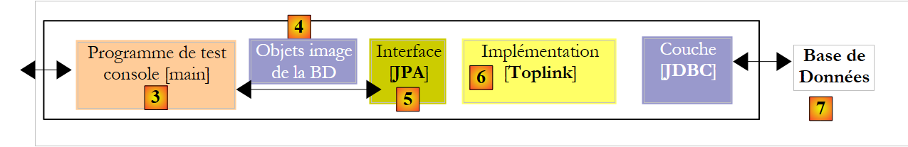 |
Das Eclipse-Projekt mit Toplink ist eine Kopie des Eclipse-Projekts mit Hibernate, Version 1:
 |
Der Java-Code ist identisch mit dem des vorherigen Hibernate-Projekts – Version 1. Die Umgebung (Bibliotheken – persistence.xml – DBMS – Konfigurations- und DDL-Ordner – Ant-Skript) entspricht der in Abschnitt 2.1.15.2 beschriebenen. Das Eclipse-Projekt [3] befindet sich im Beispielordner [4]. Es wird importiert.
Die Datei <persistence.xml> [2] wird an einer Stelle geändert, nämlich bei den deklarierten Entitäten:
...
<!-- persistente Klassen -->
<class>entites.Categorie</class>
<class>entites.Article</class>
...
- Zeilen 3 und 4: die beiden verwalteten Entitäten
Die Ausführung von [InitDB] zusammen mit SGBD und MySQL5 liefert folgende Ergebnisse:
 |
In [1], die Konsolenausgabe, in [2] die beiden generierten Tabellen [jpa05_tl], in [3] die generierten Skripte SQL. Ihr Inhalt lautet wie folgt:
create.sql
CREATE TABLE jpa05_tl_article (ID BIGINT NOT NULL, VERSION INTEGER, NOM VARCHAR(30), categorie_id BIGINT NOT NULL, PRIMARY KEY (ID))
CREATE TABLE jpa05_tl_categorie (ID BIGINT NOT NULL, VERSION INTEGER, NOM VARCHAR(30), PRIMARY KEY (ID))
ALTER TABLE jpa05_tl_article ADD CONSTRAINT FK_jpa05_tl_article_categorie_id FOREIGN KEY (categorie_id) REFERENCES jpa05_tl_categorie (ID)
CREATE TABLE SEQUENCE (SEQ_NAME VARCHAR(50) NOT NULL, SEQ_COUNT DECIMAL(38), PRIMARY KEY (SEQ_NAME))
INSERT INTO SEQUENCE(SEQ_NAME, SEQ_COUNT) values ('SEQ_GEN', 1)
drop.sql
ALTER TABLE jpa05_tl_article DROP FOREIGN KEY FK_jpa05_tl_article_categorie_id
DROP TABLE jpa05_tl_article
DROP TABLE jpa05_tl_categorie
DELETE FROM SEQUENCE WHERE SEQ_NAME = 'SEQ_GEN'
Die Ausführung von [Main] verläuft fehlerfrei.
2.4.9. Implementierung JPA / Toplink – 2
Dieses Eclipse-Projekt wurde durch Kopieren aus dem vorherigen Projekt erstellt. Da es mit Hibernate erstellt wurde, entfernen wir das Attribut mappedBy aus der Beziehung @OneToMany der @Entity „Categorie“.
@Entity
@Table(name = "jpa06_tl_categorie")
public class Categorie implements Serializable {
// Felder
@Id
@GeneratedValue(strategy = GenerationType.AUTO)
private Long id;
@Version
private int version;
@Column(length = 30)
private String nom;
// Beziehung OneToMany nicht invers (kein „mappedby“) Kategorie (one) ->
// Artikel (many)
// implementiert durch eine Verknüpfungstabelle Categorie_Article, damit ausgehend von
// einer Kategorie
// mehrere Artikel erreicht werden können
@OneToMany(cascade = CascadeType.ALL, fetch = FetchType.LAZY)
private Set<Article> articles = new HashSet<Article>();
Das für MySQL5 generierte Schema SQL sieht dann wie folgt aus:
create.sql
CREATE TABLE jpa06_tl_categorie (ID BIGINT NOT NULL, VERSION INTEGER, NOM VARCHAR(30), PRIMARY KEY (ID))
CREATE TABLE jpa06_tl_categorie_jpa06_tl_article (Categorie_ID BIGINT NOT NULL, articles_ID BIGINT NOT NULL, PRIMARY KEY (Categorie_ID, articles_ID))
CREATE TABLE jpa06_tl_article (ID BIGINT NOT NULL, VERSION INTEGER, NOM VARCHAR(30), categorie_id BIGINT NOT NULL, PRIMARY KEY (ID))
ALTER TABLE jpa06_tl_categorie_jpa06_tl_article ADD CONSTRAINT FK_jpa06_tl_categorie_jpa06_tl_article_articles_ID FOREIGN KEY (articles_ID) REFERENCES jpa06_tl_article (ID)
ALTER TABLE jpa06_tl_categorie_jpa06_tl_article ADD CONSTRAINT jpa06_tl_categorie_jpa06_tl_article_Categorie_ID FOREIGN KEY (Categorie_ID) REFERENCES jpa06_tl_categorie (ID)
ALTER TABLE jpa06_tl_article ADD CONSTRAINT FK_jpa06_tl_article_categorie_id FOREIGN KEY (categorie_id) REFERENCES jpa06_tl_categorie (ID)
CREATE TABLE SEQUENCE (SEQ_NAME VARCHAR(50) NOT NULL, SEQ_COUNT DECIMAL(38), PRIMARY KEY (SEQ_NAME))
INSERT INTO SEQUENCE(SEQ_NAME, SEQ_COUNT) values ('SEQ_GEN', 1)
- Zeile 2: Die Verknüpfungstabelle, die die vorherige nicht-inverse Beziehung @OneToMany konkretisiert.
Die Ausführung von [InitDB] verläuft fehlerfrei, die von [Main] bricht jedoch bei Test 7 ab, wobei folgende Protokolle (FINEST) ausgegeben werden:
- Zeile 3: merge in Kategorie B
- Zeile 4: Der abhängige Artikel B1 wird in den Kontext eingefügt
- Zeile 5: dasselbe gilt für die Kategorie B selbst
- Zeile 6: remove für Kategorie B
- Zeile 7: remove für den Artikel B1 (kaskadierend)
- Zeile 8: Der commit der Transaktion wird vom Java-Code angefordert
- Zeile 9: Eine Transaktion wird gestartet – sie hatte also offenbar noch nicht begonnen.
- Zeile 10: Der Artikel B1 wird durch eine Operation DELETE in der Tabelle [article] gelöscht. Hier liegt das Problem. Die Verknüpfungstabelle [categorie_article] verweist auf den Datensatz B1 in der Tabelle [article]. Das Löschen von B1 in [article] verstößt gegen eine Fremdschlüsselbeschränkung.
- Zeilen 13 und folgende: Die Ausnahme tritt auf
Was lässt sich daraus schließen?
- Wieder einmal haben wir ein Portabilitätsproblem zwischen Hibernate und Toplink: Hibernate hatte diesen Test bestanden
- Toplink kommt nur schwer damit zurecht, dass bei zwei Beziehungen, die eigentlich invers zueinander sind, eine davon nicht als primäre und die andere als inverse Beziehung deklariert ist. Das kann man akzeptieren, da dieser Fall tatsächlich einen Konfigurationsfehler darstellt. In unserem Beispiel hat die Tabelle [article] keine Beziehung zur Verknüpfungstabelle [categorie_article]. Es erscheint daher naheliegend, dass Toplink bei einer Operation auf der Tabelle [article] nicht versucht, mit der Tabelle [categorie_article] zu arbeiten.
2.5. Beispiel 5: Mehr-zu-Mehr-Beziehung mit einer expliziten Verknüpfungstabelle
2.5.1. Das Datenbankschema
|
- in [1], die Datenbank MySQL5
Die Tabellen [personne], [2] sowie [adresse] und [3] sind uns bereits bekannt. Sie wurden in Abschnitt 2.3.1 behandelt. Wir betrachten die Version, bei der die Adresse der Person Gegenstand einer eigenen Tabelle ist: [adresse] und [3]. In der Tabelle [personne] wird die Beziehung zwischen einer Person und ihrer Adresse durch eine Fremdschlüsselbeschränkung dargestellt.
Eine Person übt Aktivitäten aus. Diese sind in den Tabellen [activite] und [4] enthalten. Eine Person kann mehrere Aktivitäten ausüben, und eine Aktivität kann von mehreren Personen ausgeübt werden. Zwischen den Tabellen [personne] und [activite] besteht daher eine Mehr-zu-Mehr-Beziehung. Diese wird durch die Verknüpfungstabelle [personne_activite] [5] umgesetzt.
2.5.2. Die @Entity-Objekte, die die Datenbank darstellen
Die oben genannten Tabellen werden durch die folgenden @Entity-Objekte dargestellt:
- Das @Entity Personne repräsentiert die Tabelle [personne]
- Das @Entity Adresse repräsentiert die Tabelle [adresse]
- Die @Entity Activite repräsentiert die Tabelle [activite]
- Die @Entity PersonneActivite repräsentiert die Tabelle [personne_activite]
Die Beziehungen zwischen diesen Entitäten sind wie folgt:
- Eine Eins-zu-Eins-Beziehung verbindet die Entität Personne mit der Entität Adresse: Eine Person p hat eine Adresse a. Die Entität Personne, die den Fremdschlüssel enthält, hat die Hauptbeziehung, die Entität Adresse die umgekehrte Beziehung.
- Eine Mehr-zu-Mehr-Beziehung verbindet die Entitäten Personne und Activite: Eine Person übt mehrere Tätigkeiten aus, und eine Tätigkeit wird von mehreren Personen ausgeübt. Diese Beziehung könnte direkt durch eine Annotation @ManyToMany in jeder der beiden Entitäten realisiert werden, wobei eine als Umkehrung der anderen deklariert wird. Diese Lösung wird zu einem späteren Zeitpunkt untersucht. Hier realisieren wir die Mehr-zu-Mehr-Beziehung mithilfe von zwei Eins-zu-Mehr-Beziehungen:
- eine Eins-zu-Viele-Beziehung, die die Entität Personne mit der Entität PersonneActivite verbindet: Eine Zeile (One) der Tabelle [personne] wird von mehreren (Many) Zeilen der Tabelle [personne_activite] referenziert. Die Tabelle [personne_activite], die den Fremdschlüssel enthält, wird die Hauptbeziehung @ManyToOne aufweisen, während die Entität Personne die umgekehrte Beziehung @OneToMany aufweist.
- Eine Eins-zu-Viele-Beziehung, die die Entität Activite mit der Entität PersonneActivite verbindet: Ein Datensatz (One) der Tabelle [activite] wird von mehreren (Many) Datensätzen der Tabelle [personne_activite] referenziert. Die Tabelle [personne_activite], die den Fremdschlüssel enthält, wird die Hauptbeziehung @ManyToOne aufweisen, und die Entität Activite die umgekehrte Beziehung @OneToMany.
Die @Entity Personne lautet wie folgt:
@Entity
@Table(name = "jpa07_hb_personne")
public class Personne implements Serializable {
@Id
@Column(nullable = false)
@GeneratedValue(strategy = GenerationType.AUTO)
private Long id;
@Column(nullable = false)
@Version
private int version;
@Column(length = 30, nullable = false, unique = true)
private String nom;
@Column(length = 30, nullable = false)
private String prenom;
@Column(nullable = false)
@Temporal(TemporalType.DATE)
private Date datenaissance;
@Column(nullable = false)
private boolean marie;
@Column(nullable = false)
private int nbenfants;
// Hauptbeziehung Person (one) -> Adresse (one)
// implementiert durch den Fremdschlüssel Person (adresse_id) -> Adresse
// Kaskadierung beim Einfügen von „Person“ -> Einfügen von „Adresse“
// Kaskadierung bei Aktualisierung: Person -> Aktualisierung Adresse
// Kaskadenlöschung „Person“ -> Löschung „Adresse“
// Eine Person muss eine Adresse haben (nullable=false)
// 1 Adresse gehört nur zu 1 Person (unique=true)
@OneToOne(cascade = CascadeType.ALL)
@JoinColumn(name = "adresse_id", unique = true, nullable = false)
private Adresse adresse;
// Beziehung Person (one) -> PersonneActivite (many)
// Umkehrung der bestehenden Beziehung PersonneActivite (many) -> Person (one)
// Kaskadenlöschung „Person“ -> Löschung von PersonneActivite
@OneToMany(mappedBy = "personne", cascade = { CascadeType.REMOVE })
private Set<PersonneActivite> activites = new HashSet<PersonneActivite>();
// Konstruktoren
Diese @Entity ist bekannt. Wir gehen hier nur auf die Beziehungen ein, die sie zu den anderen Entitäten unterhält:
- Zeilen 30–39: eine 1:1-Beziehung @OneToOne zur @Entity Adresse, die durch einen Fremdschlüssel [adresse_id] (Zeile 38) umgesetzt wird, den die Tabelle [personne] auf die Tabelle [adresse] verweist.
- Zeilen 41–45: eine 1:n-Beziehung @OneToMany mit der @Entity PersonneActivite. Eine Person (One) wird von mehreren (Many) Zeilen der Verknüpfungstabelle [personne_activite] referenziert, die durch die @Entity PersonneActivite dargestellt wird. Diese Objekte PersonneActivite werden in einen Typ Set<PersonneActivite> abgelegt, wobei PersonneActivite ein Typ ist, den wir in Kürze definieren werden.
- Zeile 44: Die hier definierte 1:n-Beziehung ist die umgekehrte Beziehung einer Hauptbeziehung, die für das Feld personne der @Entity PersonneActivite definiert ist (Schlüsselwort mappedBy). Es gibt eine Kaskade „Person -> Aktivität“ bei Löschungen: Das Löschen einer Person p führt zum Löschen der persistenten Elemente vom Typ PersonneActivite, die in der Menge p.activites gefunden werden.
Die @Entity Adresse lautet wie folgt:
@Entity
@Table(name = "jpa07_hb_adresse")
public class Adresse implements Serializable {
// Felder
@Id
@Column(nullable = false)
@GeneratedValue(strategy = GenerationType.AUTO)
private Long id;
@Column(nullable = false)
@Version
private int version;
@Column(length = 30, nullable = false)
private String adr1;
@Column(length = 30)
private String adr2;
@Column(length = 30)
private String adr3;
@Column(length = 5, nullable = false)
private String codePostal;
@Column(length = 20, nullable = false)
private String ville;
@Column(length = 3)
private String cedex;
@Column(length = 20, nullable = false)
private String pays;
@OneToOne(mappedBy = "adresse")
private Personne personne;
- Zeilen 28–29: Die @OneToOne-Beziehung ist die inverse Beziehung zur @OneToOne-Beziehung, die auf die @Entity Personne verweist (Zeilen 37–38 von Personne).
Die @Entity Activite lautet wie folgt
@Entity
@Table(name = "jpa07_hb_activite")
public class Activite implements Serializable {
// Felder
@Id
@Column(nullable = false)
@GeneratedValue(strategy = GenerationType.AUTO)
private Long id;
@Column(nullable = false)
@Version
private int version;
@Column(length = 30, nullable = false, unique = true)
private String nom;
// Beziehung „Aktivität“ (eine) -> PersonneActivite (viele)
// Umkehrung der bestehenden Beziehung PersonneActivite (viele) -> Aktivität (eine)
// Kaskadenlöschung „Aktivität“ -> Löschung PersonneActivite
@OneToMany(mappedBy = "activite", cascade = { CascadeType.REMOVE })
private Set<PersonneActivite> personnes = new HashSet<PersonneActivite>();
- Zeilen 6–9: Der Primärschlüssel der Aktivität
- Zeilen 11–13: die Versionsnummer der Aktivität
- Zeilen 15–16: Name der Aktivität
- Zeilen 18–22: Die Eins-zu-Viele-Beziehung zwischen der @Entity Activite und der @Entity PersonneActivite: Eine Aktivität (One) wird von mehreren (Many) Zeilen der Verknüpfungstabelle [personne_activite] referenziert, die durch die @Entity PersonneActivite dargestellt wird. Diese Objekte PersonneActivite werden in einen Typ Set<PersonneActivite> abgelegt.
- Zeile 22: Die hier definierte 1:n-Beziehung ist die umgekehrte Beziehung einer Hauptbeziehung, die für das Feld activite in der @Entity PersonneActivite (Schlüsselwort mappedBy) definiert ist. Es gibt eine Kaskade „Aktivität“ → PersonneActivite bei Löschvorgängen: Das Löschen der Tabelle [activite] auseiner Aktivität a führt zur Löschung der Verknüpfungstabelle [personne_activite] der persistenten Elemente vom Typ PersonneActivite, die in der Menge a.personnes gefunden wurden.
Die @Entity PersonneActivite lautet wie folgt:
@Entity
// Verknüpfungstabelle
@Table(name = "jpa07_hb_personne_activite")
public class PersonneActivite {
@Embeddable
public static class Id implements Serializable {
// Komponenten des zusammengesetzten Schlüssels
// verweist auf eine Person
@Column(name = "PERSONNE_ID")
private Long personneId;
// verweist auf eine Aktivität
@Column(name = "ACTIVITE_ID")
private Long activiteId;
// Konstruktoren
...
// Getter und Setter
...
// toString
public String toString() {
return String.format("[%d,%d]", getPersonneId(), getActiviteId());
}
}
// Felder der Klasse Personne_Activite
// zusammengesetzter Schlüssel
@EmbeddedId
private Id id = new Id();
// Hauptbeziehung PersonneActivite (many) -> Person (one)
// implementiert durch den Fremdschlüssel: personneId (PersonneActivite (viele) -> Person (eine)
// personneId ist gleichzeitig Bestandteil des zusammengesetzten Primärschlüssels
// JPA darf diesen Fremdschlüssel nicht verwalten (insertable = false, updatable = false), da dies von der Anwendung selbst in ihrem Konstruktor erfolgt
@ManyToOne
@JoinColumn(name = "PERSONNE_ID", insertable = false, updatable = false)
private Personne personne;
// Hauptbeziehung PersonneActivite -> Aktivität
// implementiert durch den Fremdschlüssel: activiteId (PersonneActivite (many) -> Aktivität (one)
// activiteId ist gleichzeitig Bestandteil des zusammengesetzten Primärschlüssels
// JPA darf diesen Fremdschlüssel nicht verwalten (insertable = false, updatable = false), da dies von der Anwendung selbst in ihrem Konstruktor erfolgt
@ManyToOne()
@JoinColumn(name = "ACTIVITE_ID", insertable = false, updatable = false)
private Activite activite;
// Konstruktoren
public PersonneActivite() {
}
public PersonneActivite(Personne p, Activite a) {
// Die Fremdschlüssel werden von der Anwendung festgelegt
getId().setPersonneId(p.getId());
getId().setActiviteId(a.getId());
// bidirektionale Verknüpfungen
this.setPersonne(p);
this.setActivite(a);
p.getActivites().add(this);
a.getPersonnes().add(this);
}
// Getter und Setter
...
// toString
public String toString() {
return String.format("[%s,%s,%s]", getId(), getPersonne().getNom(), getActivite().getNom());
}
}
Diese Klasse ist komplexer als die vorherigen.
- Die Tabelle [personne_activite] enthält Zeilen der Form [p,a], wobei p der Primärschlüssel einer Person und a der Primärschlüssel einer Aktivität ist. Jede Tabelle muss einen Primärschlüssel haben, und [personne_activite] bildet da keine Ausnahme. Bisher hatten wir Primärschlüssel definiert, die dynamisch durch SGBD generiert wurden. Das könnte man auch hier tun. Wir werden jedoch eine andere Technik verwenden, bei der die Anwendung die Werte des Primärschlüssels einer Tabelle selbst definiert. Hier bezeichnet eine Zeile [p1,a1] die Tatsache, dass eine Person p1 die Aktivität a1 ausübt. Diese Zeile darf in der Tabelle kein zweites Mal vorkommen. Somit ist das Paar (p, a) ein guter Kandidat für den Primärschlüssel. Man bezeichnet dies als zusammengesetzten Primärschlüssel.
- Zeilen 30–31: der zusammengesetzte Primärschlüssel. Die Anmerkung @EmbeddedId (üblicherweise war es @Id) entspricht der Notation @Embedded, die auf das Feld Adresse einer Person angewendet wird. Im letzteren Fall bedeutete dies, dass das Feld Adresse Gegenstand einer externen Klasse war, aber in dieselbe Tabelle wie die Person eingefügt werden musste. Hier ist die Bedeutung dieselbe, nur dass zur Kennzeichnung des Primärschlüssels die Notation zu @EmbeddedId wird.
- Zeile 31: Ein leeres Objekt, das den Primärschlüssel id darstellt, wird bereits bei der Erstellung des Objekts [PersonneActivite] angelegt. Die Klasse, die den Primärschlüssel darstellt, ist in den Zeilen 7–26 als öffentliche, statische, interne Klasse der Klasse [PersonneActivite] definiert. Dass sie öffentlich und statisch ist, wird von Hibernate vorgeschrieben. Ersetzt man „public static“ durch „private,“, tritt eine Ausnahme auf, und in der zugehörigen Fehlermeldung ist zu sehen, dass Hibernate versucht hat, die Anweisung „new PersonneActivite$Id“ auszuführen. Die Klasse „Id“ muss daher sowohl statisch als auch öffentlich sein.
- Zeile 6: Die Klasse „Id“ des Primärschlüssels wird mit @Embeddable deklariert. Wir erinnern uns, dass der Primärschlüssel id aus Zeile 31 mit @EmbeddedId deklariert wurde. Die entsprechende Klasse muss daher die Annotation @Embeddable tragen.
- Wir haben gesagt, dass der Primärschlüssel der Tabelle [personne_activite] aus dem Paar (p, a) besteht, wobei p der Primärschlüssel einer Person und a der Primärschlüssel einer Aktivität ist. Die beiden Elemente (p, a) des zusammengesetzten Schlüssels finden sich in Zeile 11 (personneId) und Zeile 15 (activiteId). Die diesen beiden Feldern zugeordneten Spalten heißen: PERSONNE_ID für die Person, ACTIVITE_ID für die Aktivität.
- Zeile 31: Der Primärschlüssel wurde mit seinen beiden Spalten definiert (PERSONNE_ID, ACTIVITE_ID). Die Tabelle [personne_activite] enthält keine weiteren Spalten. Nun müssen nur noch die Beziehungen definiert werden, die zwischen der @Entity PersonneActivite, die wir gerade beschreiben, und den anderen @Entitys des relationalen Schemas bestehen. Diese Beziehungen spiegeln die Fremdschlüsselbeschränkungen wider, die die Tabelle [personne_activite] gegenüber den anderen Tabellen aufweist.
- Zeilen 33–39: Definieren den Fremdschlüssel der Tabelle [personne_activite] auf die Tabelle [personne]
- Zeile 37: Die Beziehung ist vom Typ @ManyToOne: Ein Datensatz (One) der Tabelle [personne] wird von mehreren (Many) Datensätzen der Tabelle [personne_activite] referenziert.
- Zeile 38: Hier wird die Fremdschlüsselspalte benannt. Es wird derselbe Name verwendet wie für die Komponente „person“ des Fremdschlüssels (Zeile 10). Die Attribute „insertable=false“ und „updatable=false“ dienen dazu, Hibernate daran zu hindern, den Fremdschlüssel zu verwalten. Dieser ist nämlich Bestandteil eines von der Anwendung berechneten Primärschlüssels, und Hibernate darf hier nicht eingreifen.
- Zeilen 41–47: Definieren den Fremdschlüssel, den die Tabelle [personne_activite] auf die Tabelle [activite] verweist. Die Erläuterungen entsprechen den zuvor gegebenen.
- Zeilen 54–63: Konstruktor für ein Objekt vom Typ PersonneActivite, das aus einer Person vom Typ p und einer Aktivität vom Typ a erstellt wird. Wir erinnern uns, dass beim Erstellen eines Objekts PersonneActivite der Primärschlüssel id in Zeile 31 auf ein leeres Objekt Id verwies. In den Zeilen 56–57 wird jedem der Felder (personneId, activiteId) des Objekts Id ein Wert zugewiesen. Diese Werte sind jeweils die Primärschlüssel der Person p und der Aktivität a, die als Parameter an den Konstruktor übergeben wurden. Der Primärschlüssel „id“ (Zeile 31) hat somit nun einen Wert.
- Zeile 59: Das Feld personne aus Zeile 39 erhält den Wert p
- Zeile 60: Das Feld activite aus Zeile 47 erhält den Wert a
- Ein Objekt [PersonneActivite] wird nun angelegt und initialisiert. Die umgekehrten Beziehungen der @Entity-Objekte Personne (Zeile 61) und Activite (Zeile 62) zum soeben erstellten @Entity-Objekt PersonneActivite werden aktualisiert.
Damit ist die Beschreibung der Datenbankentitäten abgeschlossen. Wir befinden uns in einer komplexen, aber leider häufig vorkommenden Situation. Wir werden sehen, dass es eine weitere mögliche Konfiguration der Schicht JPA gibt, die einen Teil dieser Komplexität verbirgt: Die Verknüpfungstabelle wird implizit und wird von der Schicht JPA aufgebaut und verwaltet. Wir haben uns hier für die komplexeste Lösung entschieden, die jedoch eine Weiterentwicklung des relationalen Schemas ermöglicht. Sie erlaubt es somit, Spalten zur Verknüpfungstabelle hinzuzufügen, was bei der Konfiguration, bei der die Verknüpfungstabelle keine explizite @Entity ist, nicht möglich ist. [ref1] empfiehlt die Lösung, die wir gerade untersuchen. In [ref1] wurden die Informationen gefunden, die die Ausarbeitung dieser Lösung ermöglichten.
2.5.3. Das Eclipse-/Hibernate-Projekt
Die hier verwendete Implementierung JPA stammt von Hibernate. Das Eclipse-Projekt für die Tests lautet wie folgt:

In [1] befindet sich das Eclipse-Projekt, in [2] der Java-Code. Das Projekt ist in [3] im Beispielordner [4] enthalten. Wir werden es importieren.
2.5.4. Erstellung der Datenbank DDL
Gemäß den Anweisungen in Abschnitt 2.1.7 lautet die für SGBD und MySQL5 erstellte DDL wie folgt:
alter table jpa07_hb_personne
drop
foreign key FKB5C817D45FE379D0;
alter table jpa07_hb_personne_activite
drop
foreign key FKD3E49B06CD852024;
alter table jpa07_hb_personne_activite
drop
foreign key FKD3E49B0668C7A284;
drop table if exists jpa07_hb_activite;
drop table if exists jpa07_hb_adresse;
drop table if exists jpa07_hb_personne;
drop table if exists jpa07_hb_personne_activite;
create table jpa07_hb_activite (
id bigint not null auto_increment,
version integer not null,
nom varchar(30) not null unique,
primary key (id)
) ENGINE=InnoDB;
create table jpa07_hb_adresse (
id bigint not null auto_increment,
version integer not null,
adr1 varchar(30) not null,
adr2 varchar(30),
adr3 varchar(30),
codePostal varchar(5) not null,
ville varchar(20) not null,
cedex varchar(3),
pays varchar(20) not null,
primary key (id)
) ENGINE=InnoDB;
create table jpa07_hb_personne (
id bigint not null auto_increment,
version integer not null,
nom varchar(30) not null unique,
prenom varchar(30) not null,
datenaissance date not null,
marie bit not null,
nbenfants integer not null,
adresse_id bigint not null unique,
primary key (id)
) ENGINE=InnoDB;
create table jpa07_hb_personne_activite (
PERSONNE_ID bigint not null,
ACTIVITE_ID bigint not null,
primary key (PERSONNE_ID, ACTIVITE_ID)
) ENGINE=InnoDB;
alter table jpa07_hb_personne
add index FKB5C817D45FE379D0 (adresse_id),
add constraint FKB5C817D45FE379D0
foreign key (adresse_id)
references jpa07_hb_adresse (id);
alter table jpa07_hb_personne_activite
add index FKD3E49B06CD852024 (ACTIVITE_ID),
add constraint FKD3E49B06CD852024
foreign key (ACTIVITE_ID)
references jpa07_hb_activite (id);
alter table jpa07_hb_personne_activite
add index FKD3E49B0668C7A284 (PERSONNE_ID),
add constraint FKD3E49B0668C7A284
foreign key (PERSONNE_ID)
references jpa07_hb_personne (id);
- Zeilen 21–26: die Tabelle [activite]
- Zeilen 28–39: die Tabelle [adresse]
- Zeilen 41–51: die Tabelle [personne]
- Zeilen 53–57: die Verknüpfungstabelle [personne_activite]. Beachten Sie den zusammengesetzten Schlüssel (Zeile 56)
- Zeilen 59–63: der Fremdschlüssel von der Tabelle [personne] zur Tabelle [adresse]
- Zeilen 65–69: Der Fremdschlüssel von der Tabelle [personne_activite] zur Tabelle [activite]
- Zeilen 71–75: Der Fremdschlüssel der Tabelle [personne_activite] zur Tabelle [personne]
2.5.5. InitDB
Der Code von [InitDB] lautet wie folgt:
package tests;
...
public class InitDB {
// Konstanten
private final static String TABLE_PERSONNE_ACTIVITE = "jpa07_hb_personne_activite";
private final static String TABLE_PERSONNE = "jpa07_hb_personne";
private final static String TABLE_ACTIVITE = "jpa07_hb_activite";
private final static String TABLE_ADRESSE = "jpa07_hb_adresse";
public static void main(String[] args) throws ParseException {
// Persistenzkontext
EntityManagerFactory emf = Persistence.createEntityManagerFactory("jpa");
EntityManager em = null;
// Man ruft ein EntityManager aus dem EntityManagerFactory ab
// vorhergehend
em = emf.createEntityManager();
// Transaktionsbeginn
EntityTransaction tx = em.getTransaction();
tx.begin();
// Anfrage
Query sql1;
// Elemente aus der Tabelle PERSONNE_ACTIVITE löschen
sql1 = em.createNativeQuery("delete from " + TABLE_PERSONNE_ACTIVITE);
sql1.executeUpdate();
// Elemente aus der Tabelle PERSONNE löschen
sql1 = em.createNativeQuery("delete from " + TABLE_PERSONNE);
sql1.executeUpdate();
// Elemente aus der Tabelle ACTIVITE löschen
sql1 = em.createNativeQuery("delete from " + TABLE_ACTIVITE);
sql1.executeUpdate();
// Elemente aus der Tabelle ADRESSE löschen
sql1 = em.createNativeQuery("delete from " + TABLE_ADRESSE);
sql1.executeUpdate();
// Aktivitäten anlegen
Activite act1 = new Activite();
act1.setNom("act1");
Activite act2 = new Activite();
act2.setNom("act2");
Activite act3 = new Activite();
act3.setNom("act3");
// Persistenz von Aktivitäten
em.persist(act1);
em.persist(act2);
em.persist(act3);
// Anlegen von Personen
Personne p1 = new Personne("p1", "Paul", new SimpleDateFormat("dd/MM/yy").parse("31/01/2000"), true, 2);
Personne p2 = new Personne("p2", "Sylvie", new SimpleDateFormat("dd/MM/yy").parse("05/07/2001"), false, 0);
Personne p3 = new Personne("p3", "Sylvie", new SimpleDateFormat("dd/MM/yy").parse("05/07/2001"), false, 0);
// Adressen anlegen
Adresse adr1 = new Adresse("adr1", null, null, "49000", "Angers", null, "France");
Adresse adr2 = new Adresse("adr2", "Les Mimosas", "15 av Foch", "49002", "Angers", "03", "France");
Adresse adr3 = new Adresse("adr3", "x", "x", "x", "x", "x", "x");
Adresse adr4 = new Adresse("adr4", "y", "y", "y", "y", "y", "y");
// Zuordnungen Person <--> Adresse
p1.setAdresse(adr1);
adr1.setPersonne(p1);
p2.setAdresse(adr2);
adr2.setPersonne(p2);
p3.setAdresse(adr3);
adr3.setPersonne(p3);
// Persistenz von Personen und damit der zugehörigen Adressen
em.persist(p1);
em.persist(p2);
em.persist(p3);
// Persistenz der Adresse a4, die nicht mit einer Person verknüpft ist
em.persist(adr4);
// Anzeige von Personen
System.out.println("[personnes]");
for (Object p : em.createQuery("select p from Personne p order by p.nom asc").getResultList()) {
System.out.println(p);
}
// Anzeige von Adressen
System.out.println("[adresses]");
for (Object a : em.createQuery("select a from Adresse a").getResultList()) {
System.out.println(a);
}
System.out.println("[activites]");
for (Object a : em.createQuery("select a from Activite a").getResultList()) {
System.out.println(a);
}
// Zuordnungen Person <--> Aktivität
PersonneActivite p1act1 = new PersonneActivite(p1, act1);
PersonneActivite p1act2 = new PersonneActivite(p1, act2);
PersonneActivite p2act1 = new PersonneActivite(p2, act1);
PersonneActivite p2act3 = new PersonneActivite(p2, act3);
// Fortbestehen der Verknüpfungen Person <--> Aktivität
em.persist(p1act1);
em.persist(p1act2);
em.persist(p2act1);
em.persist(p2act3);
// Anzeige von Personen
System.out.println("[personnes]");
for (Object p : em.createQuery("select p from Personne p order by p.nom asc").getResultList()) {
System.out.println(p);
}
// Anzeige von Adressen
System.out.println("[adresses]");
for (Object a : em.createQuery("select a from Adresse a").getResultList()) {
System.out.println(a);
}
System.out.println("[activites]");
for (Object a : em.createQuery("select a from Activite a").getResultList()) {
System.out.println(a);
}
System.out.println("[personnes/activites]");
for (Object pa : em.createQuery("select pa from PersonneActivite pa").getResultList()) {
System.out.println(pa);
}
// Transaktionsende
tx.commit();
// Ende EntityManager
em.close();
// Ende EntityManagerFactory
emf.close();
// Protokoll
System.out.println("terminé...");
}
}
- Zeilen 27–38: Die Tabellen [personne_activite], [personne], [adresse] und [activite] werden geleert. Beachten Sie, dass Sie mit den Tabellen beginnen müssen, die Fremdschlüssel enthalten.
- Zeilen 40–45: Es werden drei Aktivitäten act1, act2 und act3 angelegt
- Zeilen 47–49: Diese werden in den Persistenzkontext aufgenommen.
- Zeilen 51–53: Es werden drei Personen p1, p2 und p3 angelegt.
- Zeilen 55–58: Es werden vier Adressen von adr1 bis adr4 angelegt.
- Zeilen 60–65: Die Adressen adri werden den Personen pi zugeordnet. Es sind jeweils zwei Vorgänge durchzuführen, da die Beziehung „Person <-> Adresse“ bidirektional ist.
- Zeilen 67–69: Die Personen p1 bis p3 werden in den Persistenzkontext aufgenommen. Aufgrund der Kaskade „Person -> Adresse“ gilt dies auch für die Adressen adr1 bis adr3.
- Zeile 71: Die vierte Adresse adr4, die keiner Person zugeordnet ist, wird explizit in den Persistenzkontext aufgenommen.
- Zeilen 73–85: Der Persistenzkontext wird abgefragt, um die Liste der Entitäten vom Typ [Personne], [Adresse] und [Activite] zu erhalten. Es ist bekannt, dass diese Abfragen eine Synchronisierung des Kontexts mit der Datenbank auslösen: Die angelegten Entitäten werden in die Datenbank eingefügt und erhalten ihren Primärschlüssel. Dies zu verstehen, ist für den weiteren Verlauf wichtig.
- Zeilen 87–90: Es werden 4 Assoziationen „Person <-> Aktivität“ angelegt. Ihr Name gibt an, welche Person mit welcher Aktivität verknüpft ist. Man erinnert sich vielleicht daran, dass der Primärschlüssel einer Entität vom Typ PersonneActivite ein zusammengesetzter Schlüssel ist, der sich aus dem Primärschlüssel einer Person und dem einer Aktivität zusammensetzt. Da die Entitäten Personne und Activite ihre Primärschlüssel bereits bei einer früheren Synchronisation erhalten haben, ist dieser Vorgang möglich.
- Zeilen 92–95: Diese vier Assoziationen werden in den Persistenzkontext aufgenommen.
- Zeilen 87–86: Der Persistenzkontext wird abgefragt, um die Liste der Entitäten vom Typ [Personne], [Adresse], [Activite] und [PersonneActivite] zu erhalten. Es ist bekannt, dass diese Abfragen eine Synchronisierung des Kontexts mit der Datenbank bewirken: Die angelegten Entitäten vom Typ PersonneActivite werden in die Datenbank eingefügt.
Die Ausführung von [InitDB] zusammen mit MySQL5 führt zu folgender Konsolenausgabe:
Es mag überraschen, dass in den Zeilen 15–16 die Personen p1 und p2 die Versionsnummer 1 haben und dass dies in den Zeilen 24–26 für die drei Aktivitäten ebenfalls der Fall ist. Versuchen wir, dies zu verstehen.
In den Zeilen 2–4 sind die Versionsnummern der Personen auf 0 gesetzt, und in den Zeilen 11–13 sind die Versionsnummern der Aktivitäten auf 0 gesetzt. Die vorangegangenen Ausgaben erfolgen vor der Erstellung der Beziehungen „Person <-> Aktivität“. In den Zeilen 87–90 des Java-Codes werden Beziehungen zwischen den Personen p1 und p2 sowie den Aktivitäten act1, act2, act3. Dies geschieht mithilfe des Konstruktors der @Entity PersonneActivite (siehe Abschnitt 2.5.2). Ein Blick in den Code dieses Konstruktors zeigt, dass, wenn eine Person p mit einer Aktivität a verknüpft ist:
- wird die Aktivität a zur Menge p.activites hinzugefügt
- die Person p wird der Menge a.personnes hinzugefügt
Wenn also new PersonneActivite(p,a) geschrieben wird, werden die Person p und die Aktivität a im Speicher geändert. In den Zeilen 97–113 von [InitDB] wird der Persistenzkontext mit der Datenbank synchronisiert, JPA / stellt Hibernate fest, dass die persistenten Elemente p1, p2, act1, act2 und act3 geändert wurden. Diese Änderungen müssen in der Datenbank vorgenommen werden. Sie sind zwar in der Verknüpfungstabelle [personne_activite] gespeichert, doch JPA / Hibernate erhöht dennoch die Versionsnummer jedes der geänderten persistenten Elemente.
In der SQL Explorer-Perspektive ergeben sich folgende Ergebnisse:
 |
- [2]: die Tabellen [jpa07_hb_*]
- [3]: die Personentabelle
- [4]: die Adresstabelle.
- [5]: die Tabelle der Aktivitäten
- [6]: die Verknüpfungstabelle „Person <-> Aktivität“
2.5.6. Hauptseite
Die Klasse [Main] führt eine Reihe von Tests aus, die wir durchgehen, mit Ausnahme von Test 1, der den Code aus [InitDB] zur Initialisierung der Datenbank übernimmt.
2.5.6.1. Test2
Dieser Test sieht wie folgt aus:
// Löschen Person p1
public static void test2() {
// Persistenzkontext
EntityManager em = getEntityManager();
// Transaktionsstart
EntityTransaction tx = em.getTransaction();
tx.begin();
// Entfernung von Abhängigkeiten von p1: für Hibernate nicht erforderlich, aber
// für Toplink unverzichtbar
act1.getPersonnes().remove(p1act1);
act2.getPersonnes().remove(p1act2);
// Person p1 entfernen
em.remove(p1);
// Transaktionsende
tx.commit();
// Die neuen Tabellen werden angezeigt
dumpPersonne();
dumpActivite();
dumpAdresse();
dumpPersonne_Activite();
}
- Zeile 4: Es wird der Persistenzkontext von test1 verwendet, wobei die Person p1 ein Objekt dieses Kontexts ist.
- Zeile 13: Löschen der Person p1. Aufgrund des Attributs:
- cascadeType.ALL bei Adresse wird die Adresse der Person p1 gelöscht
- cascadeType.REMOVE zu PersonneActivite: Die Aktivitäten der Person p1 werden gelöscht.
- Zeilen 10–11: Hier werden die Abhängigkeiten der anderen Entitäten von der Person p1 gelöscht, die in Zeile 13 gelöscht wird. Die Aktivitäten act1 und act2 werden von der Person p1 ausgeübt. Die Verknüpfungen wurden vom Ersteller der Entität PersonneActivite angelegt, deren Code wie folgt lautet:
public PersonneActivite(Personne p, Activite a) {
// Die Fremdschlüssel werden von der Anwendung festgelegt
getId().setPersonneId(p.getId());
getId().setActiviteId(a.getId());
// bidirektionale Verknüpfungen
setPersonne(p);
setActivite(a);
p.getActivites().add(this);
a.getPersonnes().add(this);
}
In Zeile 9 erhält die Aktivität a ein zusätzliches Element vom Typ PersonneActivite in ihrem Ganzen personnes. Dieses Element hat den Typ (p,a), um anzugeben, dass die Person p die Aktivität a ausübt. In test1 von [Main] wurden somit zwei Verknüpfungen (p1,act1) und (p1,act2) erstellt. Die Zeilen 10 und 11 von test2 entfernen diese Abhängigkeiten. Es ist zu beachten, dass Hibernate ohne das Entfernen dieser Abhängigkeiten bei der Person p1 funktioniert, Toplink jedoch nicht.
- Zeilen 17–20: Es werden alle Tabellen angezeigt
Die Ergebnisse lauten wie folgt:
- Die Person p1, die in test1 (Zeile 3) vorhanden ist, ist nach Ausführung von test2 (Zeilen 22–23) nicht mehr vorhanden
- Die Adresse adr1 der Person p1, die in test1 (Zeile 11) ist nach Ausführung von test2 (Zeilen 29–31) nicht mehr vorhanden
- die Aktivitäten (p1,act1) (Zeile 16) und (p1,act2) (Zeile 18) der Person p1, die in test1 enthalten sind, sind nach Abschluss von test2 (Zeilen 33–34) nicht mehr vorhanden
2.5.6.2. Test3
Dieser Test läuft wie folgt ab:
// Löschen der Aktivität act1
public static void test3() {
// Persistenzkontext
EntityManager em = getEntityManager();
// Transaktionsstart
EntityTransaction tx = em.getTransaction();
tx.begin();
// Entfernung von Abhängigkeiten von act1: für Hibernate nicht erforderlich, aber
// für Toplink unverzichtbar
p2.getActivites().remove(p2act1);
// Entfernung der Aktivität act1
em.remove(act1);
// Transaktionsende
tx.commit();
// Die neuen Tabellen werden angezeigt
dumpPersonne();
dumpActivite();
dumpAdresse();
dumpPersonne_Activite();
}
- Zeile 4: Es wird der Persistenzkontext von test2 verwendet
- Zeile 12: Löschen der Aktivität act1. Aufgrund des Attributs:
- cascadeType.REMOVE auf PersonneActivite werden die Zeilen (p, act1) der Tabelle [personne_activite] gelöscht.
- Zeile 10: Bevor act1 aus dem Persistenzkontext entfernt wird, werden die Abhängigkeiten gelöscht, die andere Entitäten möglicherweise von diesem persistenten Objekt haben. Nach dem Löschen der Person p1 im vorherigen Test übt nur noch die Person p2 die Aktivität act1 aus.
- Zeilen 13–16: Es werden alle Tabellen angezeigt
Die Ergebnisse lauten wie folgt:
- In test2 existiert die Aktivität act1 (Zeile 6). In test3 existiert sie nicht mehr (Zeilen 21–22)
- In test2 existiert die Verknüpfung (p2,act1)) (Zeile 14). In test3 existiert sie nicht mehr (Zeile 28)
2.5.6.3. Test4
Dieser Test sieht wie folgt aus:
// Aktivitäten einer Person abrufen
public static void test4() {
// Persistenzkontext
EntityManager em = getNewEntityManager();
// Transaktionsstart
EntityTransaction tx = em.getTransaction();
tx.begin();
// Die Person p2 wird abgerufen
p2 = em.find(Personne.class, p2.getId());
System.out.format("1 - Activités de la personne p2 (JPQL) :%n");
// man scannt ihre Aktivitäten
for (Object pa : em.createQuery("select a.nom from Activite a join a.personnes pa where pa.personne.nom='p2'").getResultList()) {
System.out.println(pa);
}
// man geht über die umgekehrte Beziehung von p2
p2 = em.find(Personne.class, p2.getId());
System.out.format("2 - Activités de la personne p2 (relation inverse) :%n");
// die Aktivitäten werden gescannt
for (PersonneActivite pa : p2.getActivites()) {
System.out.println(pa.getActivite().getNom());
}
// Transaktion beendet
tx.commit();
}
- Test 4 zeigt die Aktivitäten der Person p2 an.
- Zeile 4: Es wird von einem neuen, leeren Kontext ausgegangen
- Zeilen 12–14: Die Namen der Aktivitäten, die von der Person p2 ausgeübt werden, werden mithilfe einer Abfrage JPQL angezeigt.
- Es wird eine Verknüpfung zwischen Activite (a) und PersonneActivite (pa) hergestellt (join a.personnes)
- In den Zeilen dieser Verknüpfung (a,pa) wird der Name der Aktivität (a.nom) für die Person p2 angezeigt (pa.personne.nom='p2').
- Zeilen 16–21: Es wird dasselbe wie zuvor durchgeführt, jedoch unter Verwendung der Beziehung OneToMany p2.activites der Person p2. Die Abfrage JPQL wird durch JPA generiert. Hier zeigt sich der Vorteil der umgekehrten Beziehung OneToMany: Sie vermeidet eine Abfrage JPQL.
Die Ergebnisse lauten wie folgt:
2.5.6.4. Test5
Dieser Test sieht wie folgt aus:
// Abfrage der Personen, die eine bestimmte Aktivität ausführen
public static void test5() {
// Persistenzkontext
EntityManager em = getNewEntityManager();
// Transaktionsbeginn
EntityTransaction tx = em.getTransaction();
tx.begin();
System.out.format("1 - Personnes pratiquant l'activité act3 (JPQL) :%n");
// Aktivitäten von p2 abfragen
for (Object pa : em.createQuery("select p.nom from Personne p join p.activites pa where pa.activite.nom='act3'").getResultList()) {
System.out.println(pa);
}
// man nutzt die inverse Beziehung von act3
System.out.format("2 - Personnes pratiquant l'activité act3 (relation inverse) :%n");
act3 = em.find(Activite.class, act3.getId());
for (PersonneActivite pa : act3.getPersonnes()) {
System.out.println(pa.getPersonne().getNom());
}
// Transaktionsende
tx.commit();
}
- Test 6 zeigt die Personen an, die die Aktivität „act3“ ausführen. Die Vorgehensweise entspricht der von Test 6. Wir überlassen es dem Leser, den Zusammenhang zwischen den beiden Codes herzustellen.
Die Ergebnisse lauten wie folgt:
Die Tests 4 und 5 sollten erneut zeigen, dass eine inverse Beziehung niemals zwingend erforderlich ist und immer durch eine Abfrage JPQL ersetzt werden kann.
2.5.7. Implementierung JPA / Toplink
Wir verwenden nun eine Implementierung JPA / Toplink:
 |
Das Eclipse-Projekt mit Toplink ist eine Kopie des Eclipse-Projekts mit Hibernate:
 |
Der Java-Code ist bis auf einige Details, auf die wir noch eingehen werden, identisch mit dem des vorherigen Hibernate-Projekts. Die Umgebung (Bibliotheken – persistence.xml – DBMS – Konfigurations- und DDL-Ordner – Ant-Skript) entspricht der in Abschnitt 2.1.15.2 beschriebenen. Das Eclipse-Projekt befindet sich unter [3] im Beispielordner [4]. Wir werden es importieren.
Die Datei <persistence.xml> [2] wird an einer Stelle geändert, nämlich bei den deklarierten Entitäten:
<!-- Persistente Klassen -->
<class>entites.Activite</class>
<class>entites.Adresse</class>
<class>entites.Personne</class>
<class>entites.PersonneActivite</class>
- Zeilen 2–5: die vier verwalteten Entitäten
Die Ausführung von [InitDB] zusammen mit SGBD und MySQL5 liefert folgende Ergebnisse:
 |
In [1], die Konsolenausgabe, in [2] die generierten Tabellen [jpa07_tl], in [3] die generierten Skripte SQL. Ihr Inhalt lautet wie folgt:
create.sql
CREATE TABLE jpa07_tl_activite (ID BIGINT NOT NULL, VERSION INTEGER NOT NULL, NOM VARCHAR(30) UNIQUE NOT NULL, PRIMARY KEY (ID))
CREATE TABLE jpa07_tl_adresse (ID BIGINT NOT NULL, ADR3 VARCHAR(30), CODEPOSTAL VARCHAR(5) NOT NULL, VERSION INTEGER NOT NULL, VILLE VARCHAR(20) NOT NULL, ADR2 VARCHAR(30), CEDEX VARCHAR(3), ADR1 VARCHAR(30) NOT NULL, PAYS VARCHAR(20) NOT NULL, PRIMARY KEY (ID))
CREATE TABLE jpa07_tl_personne_activite (PERSONNE_ID BIGINT NOT NULL, ACTIVITE_ID BIGINT NOT NULL, PRIMARY KEY (PERSONNE_ID, ACTIVITE_ID))
CREATE TABLE jpa07_tl_personne (ID BIGINT NOT NULL, DATENAISSANCE DATE NOT NULL, MARIE TINYINT(1) default 0 NOT NULL, NOM VARCHAR(30) UNIQUE NOT NULL, NBENFANTS INTEGER NOT NULL, VERSION INTEGER NOT NULL, PRENOM VARCHAR(30) NOT NULL, adresse_id BIGINT UNIQUE NOT NULL, PRIMARY KEY (ID))
ALTER TABLE jpa07_tl_personne_activite ADD CONSTRAINT FK_jpa07_tl_personne_activite_ACTIVITE_ID FOREIGN KEY (ACTIVITE_ID) REFERENCES jpa07_tl_activite (ID)
ALTER TABLE jpa07_tl_personne_activite ADD CONSTRAINT FK_jpa07_tl_personne_activite_PERSONNE_ID FOREIGN KEY (PERSONNE_ID) REFERENCES jpa07_tl_personne (ID)
ALTER TABLE jpa07_tl_personne ADD CONSTRAINT FK_jpa07_tl_personne_adresse_id FOREIGN KEY (adresse_id) REFERENCES jpa07_tl_adresse (ID)
CREATE TABLE SEQUENCE (SEQ_NAME VARCHAR(50) NOT NULL, SEQ_COUNT DECIMAL(38), PRIMARY KEY (SEQ_NAME))
INSERT INTO SEQUENCE(SEQ_NAME, SEQ_COUNT) values ('SEQ_GEN', 1)
Die Ausführung von [InitDB] und [Main] verläuft fehlerfrei.
2.6. Beispiel 6: Mehr-zu-Mehr-Beziehung mit einer impliziten Verknüpfungstabelle
Wir greifen Beispiel 4 wieder auf, bearbeiten es nun jedoch mit einer impliziten Verknüpfungstabelle, die von der Schicht JPA selbst generiert wird.
2.6.1. Das Datenbankschema
 |
- in [1], die Datenbank MySQL5 – in [2]: die Tabelle [personne] – in [3]: die zugehörige Tabelle [adresse] – in [4]: die Tabelle [activite] der Aktivitäten – in [5]: die Verknüpfungstabelle [personne_activite], die Personen und Aktivitäten miteinander verbindet.
2.6.2. Die @Entity-Objekte, die die Datenbank darstellen
Die oben genannten Tabellen werden durch die folgenden @Entity-Objekte dargestellt:
- Das @Entity Personne repräsentiert die Tabelle [personne]
- Das @Entity Adresse repräsentiert die Tabelle [adresse]
- Die @Entity Activite repräsentiert die Tabelle [activite]
- Die Tabelle [personne_activite] wird nicht mehr durch eine @Entity repräsentiert
Die Beziehungen zwischen diesen Entitäten sind wie folgt:
- Eine Eins-zu-Eins-Beziehung verbindet die Entität Personne mit der Entität Adresse: Eine Person p hat eine Adresse a. Die Entität Personne, die den Fremdschlüssel enthält, hat die Hauptbeziehung, die Entität Adresse die umgekehrte Beziehung.
- Eine Mehr-zu-Mehr-Beziehung verbindet die Entitäten Personne und Activite: Eine Person übt mehrere Tätigkeiten aus, und eine Tätigkeit wird von mehreren Personen ausgeübt. Diese Beziehung wird durch eine Annotation @ManyToMany in jeder der beiden Entitäten dargestellt, wobei eine als umgekehrt zur anderen deklariert wird.
Die @Entity Personne lautet wie folgt:
@Entity
@Table(name = "jpa08_hb_personne")
public class Personne implements Serializable {
@Id
@Column(nullable = false)
@GeneratedValue(strategy = GenerationType.AUTO)
// Toplink SQL Server: @GeneratedValue (Strategie = GenerationType.IDENTITY)
private Long id;
@Column(nullable = false)
@Version
private int version;
@Column(length = 30, nullable = false, unique = true)
private String nom;
@Column(length = 30, nullable = false)
private String prenom;
@Column(nullable = false)
@Temporal(TemporalType.DATE)
private Date datenaissance;
@Column(nullable = false)
private boolean marie;
@Column(nullable = false)
private int nbenfants;
// Hauptbeziehung Person (one) -> Adresse (one)
// implementiert durch den Fremdschlüssel Person (adresse_id) -> Adresse
// Kaskadierung beim Einfügen: Person -> Einfügen von Adresse
// Kaskadierung bei Aktualisierung: Person -> Aktualisierung Adresse
// Kaskadierung: Löschen von „Person“ -> Löschen von „Adresse“
// Eine Person muss eine Adresse haben (nullable=false)
// 1 Adresse gehört nur zu 1 Person (unique=true)
@OneToOne(cascade = CascadeType.ALL)
@JoinColumn(name = "adresse_id", unique = true, nullable = false)
private Adresse adresse;
// Beziehung „Person“ (many) -> „Aktivität“ (many) über eine Verknüpfungstabelle personne_activite
// personne_activite(PERSONNE_ID) ist Fremdschlüssel auf Person(id)
// personne_activite(ACTIVITE_ID) ist ein Fremdschlüssel für „Aktivität“ (ID)
// cascade=CascadeType.PERSIST: Die Persistenz einer Person führt zur Persistenz ihrer Aktivitäten
@ManyToMany(cascade={CascadeType.PERSIST})
@JoinTable(name="jpa08_hb_personne_activite",joinColumns = @JoinColumn(name = "PERSONNE_ID"), inverseJoinColumns = @JoinColumn(name = "ACTIVITE_ID"))
private Set<Activite> activites = new HashSet<Activite>();
// Konstrukteure
public Personne() {
}
Wir erläutern hier nur die Beziehung @ManyToMany in den Zeilen 46–48, die die @Entity Personne mit der @Entity Activite verknüpft:
- Zeile 48: Eine Person hat Aktivitäten. Das Feld „activites“ stellt diese dar. In der vorherigen Version war der Typ der Elemente der Menge activites „PersonneActivite“. Hier ist es „Activite“. Man greift also direkt auf die Aktivitäten einer Person zu, während man in der vorherigen Version über die Zwischenentität PersonneActivite gehen musste.
- Zeile 46: Die Beziehung zwischen der @Entity Personne, die wir gerade betrachten, und der @Entity Activite aus der Menge activites in Zeile 48 ist eine Mehr-zu-Mehr-Beziehung (ManyToMany):
- Eine Person (One) übt mehrere Aktivitäten (Many) aus
- eine Aktivität (One) wird von mehreren Personen (Many) ausgeübt
- Letztendlich sind die @Entitys Personne und Activite durch eine Beziehung ManyToMany verbunden. Wie bei der Beziehung OneToOne besteht auch in dieser Beziehung eine Symmetrie der Entitäten. Man kann frei wählen, welche @Entity die Hauptrelation und welche die umgekehrte Relation aufweist. Hier legen wir fest, dass die @Entity Personne die Hauptrelation aufweist.
- Wie wir im vorherigen Beispiel gesehen haben, erfordert die Beziehung @ManyToMany eine Verknüpfungstabelle. Während wir diese zuvor mithilfe einer @Entity definiert hatten, wird die Verknüpfungstabelle hier mithilfe der Annotation @JoinTable in Zeile 47 definiert.
- Das Attribut „name“ gibt der Tabelle einen Namen.
- Die Verknüpfungstabelle besteht aus den Fremdschlüsseln der Tabellen, die sie verknüpft. Hier gibt es zwei Fremdschlüssel: einen in der Tabelle [personne], den anderen in der Tabelle [activite]. Diese Fremdschlüsselspalten werden durch die Attribute joinColumns und inverseJoinColumns definiert.
- Die Annotation @JoinColumn des Attributs joinColumns definiert den Fremdschlüssel in der Tabelle der @Entity, die die Hauptbeziehung @ManyToMany enthält, in diesem Fall die Tabelle [personne]. Diese Fremdschlüsselspalte wird PERSONNE_ID heißen.
- Die Annotation @JoinColumn des Attributs inverseJoinColumns definiert den Fremdschlüssel in der Tabelle der @Entity, die die umgekehrte Beziehung @ManyToMany unterhält, in diesem Fall die Tabelle [activite]. Diese Fremdschlüsselspalte wird ACTIVITE_ID heißen.
Die @Entity Adresse lautet wie folgt:
@Entity
@Table(name = "jpa07_hb_adresse")
public class Adresse implements Serializable {
// Felder
@Id
@Column(nullable = false)
@GeneratedValue(strategy = GenerationType.AUTO)
private Long id;
@Column(nullable = false)
@Version
private int version;
@Column(length = 30, nullable = false)
private String adr1;
@Column(length = 30)
private String adr2;
@Column(length = 30)
private String adr3;
@Column(length = 5, nullable = false)
private String codePostal;
@Column(length = 20, nullable = false)
private String ville;
@Column(length = 3)
private String cedex;
@Column(length = 20, nullable = false)
private String pays;
@OneToOne(mappedBy = "adresse")
private Personne personne;
- Zeilen 28–29: Die @OneToOne-Beziehung ist die inverse Beziehung zur @OneToOne-Beziehung und verweist auf die @Entity Personne (Zeilen 37–38 von Personne).
Die @Entity Activite lautet wie folgt
@Entity
@Table(name = "jpa08_hb_activite")
public class Activite implements Serializable {
// Felder
@Id()
@Column(nullable = false)
@GeneratedValue(strategy = GenerationType.AUTO)
// Toplink SQL Server: @GeneratedValue(strategy = GenerationType.IDENTITY)
private Long id;
@Column(nullable = false)
@Version
private int version;
@Column(length = 30, nullable = false, unique = true)
private String nom;
// umgekehrte Beziehung Aktivität -> Person
@ManyToMany(mappedBy = "activites")
private Set<Personne> personnes = new HashSet<Personne>();
...
- Zeilen 20–21: die Mehr-zu-Mehr-Beziehung, die die @Entity Activite mit der @Entity Personne verbindet. Diese Beziehung wurde bereits in der @Entity Personne definiert. Hier wird daher lediglich angegeben, dass es sich um die inverse Beziehung (mappedBy) der Beziehung @ManyToMany handelt, die im Feld „activites“ (mappedBy = „activites“) der @Entität Personne.
- Zur Erinnerung: Eine umgekehrte Beziehung ist immer optional. Hier verwenden wir sie, um die Personen zu ermitteln, die die aktuelle Aktivität ausüben. Diese werden über die Menge `Set<Person> personen` abgerufen. Die Art des Ladens der Abhängigkeiten Personne der @Entity Activite ist nicht festgelegt. Auch im vorherigen Beispiel hatten wir dies nicht festgelegt. Standardmäßig lautet diese Art fetch=FetchType.LAZY.
Damit ist die Beschreibung der Datenbankentitäten abgeschlossen. Sie war einfacher als in dem Fall, in dem die Verknüpfungstabelle [personne_activite] als explizite Tabelle definiert ist. Diese einfachere Lösung kann im Laufe der Zeit Nachteile mit sich bringen: Sie lässt es nicht zu, Spalten zur Verknüpfungstabelle hinzuzufügen. Dies kann jedoch notwendig werden, um neuen Anforderungen gerecht zu werden, beispielsweise um der Tabelle [personne_activite] eine Spalte hinzuzufügen, die das Anmeldedatum der Person für die Aktivität angibt.
2.6.3. Das Eclipse-/Hibernate-Projekt
Die hier verwendete Implementierung JPA stammt von Hibernate. Das Eclipse-Projekt für die Tests lautet wie folgt:
 |
In [1] befindet sich das Eclipse-Projekt, in [2] der Java-Code. Das Projekt ist in [3] im Beispielordner [4] enthalten. Wir werden es importieren.
2.6.4. Erstellung der Datenbank DDL
Gemäß den Anweisungen in Abschnitt 2.1.7 lautet die für die SGBD und MySQL5 erstellte DDL wie folgt:
alter table jpa08_hb_personne
drop
foreign key FKA44B1E555FE379D0;
alter table jpa08_hb_personne_activite
drop
foreign key FK5A6A55A5CD852024;
alter table jpa08_hb_personne_activite
drop
foreign key FK5A6A55A568C7A284;
drop table if exists jpa08_hb_activite;
drop table if exists jpa08_hb_adresse;
drop table if exists jpa08_hb_personne;
drop table if exists jpa08_hb_personne_activite;
create table jpa08_hb_activite (
id bigint not null auto_increment,
version integer not null,
nom varchar(30) not null unique,
primary key (id)
) ENGINE=InnoDB;
create table jpa08_hb_adresse (
id bigint not null auto_increment,
version integer not null,
adr1 varchar(30) not null,
adr2 varchar(30),
adr3 varchar(30),
codePostal varchar(5) not null,
ville varchar(20) not null,
cedex varchar(3),
pays varchar(20) not null,
primary key (id)
) ENGINE=InnoDB;
create table jpa08_hb_personne (
id bigint not null auto_increment,
version integer not null,
nom varchar(30) not null unique,
prenom varchar(30) not null,
datenaissance date not null,
marie bit not null,
nbenfants integer not null,
adresse_id bigint not null unique,
primary key (id)
) ENGINE=InnoDB;
create table jpa08_hb_personne_activite (
PERSONNE_ID bigint not null,
ACTIVITE_ID bigint not null,
primary key (PERSONNE_ID, ACTIVITE_ID)
) ENGINE=InnoDB;
alter table jpa08_hb_personne
add index FKA44B1E555FE379D0 (adresse_id),
add constraint FKA44B1E555FE379D0
foreign key (adresse_id)
references jpa08_hb_adresse (id);
alter table jpa08_hb_personne_activite
add index FK5A6A55A5CD852024 (ACTIVITE_ID),
add constraint FK5A6A55A5CD852024
foreign key (ACTIVITE_ID)
references jpa08_hb_activite (id);
alter table jpa08_hb_personne_activite
add index FK5A6A55A568C7A284 (PERSONNE_ID),
add constraint FK5A6A55A568C7A284
foreign key (PERSONNE_ID)
references jpa08_hb_personne (id);
Dieser DDL entspricht dem mit der expliziten Verknüpfungstabelle ermittelten Wert und stimmt mit dem bereits vorgestellten Schema überein:
 |
2.6.5. InitDB
Auf die Klasse [InitDB], die mit ihrer Vorgängerversion identisch ist und zu denselben Ergebnissen führt, werden wir nur kurz eingehen. Wir wollen uns stattdessen auf den folgenden Code konzentrieren, der die Verknüpfung Personne <-> Activite anzeigt:
// Anzeige von Personen/Aktivitäten
System.out.println("[personnes/activites]");
Iterator iterator = em.createQuery("select p.id,a.id from Personne p join p.activites a").getResultList().iterator();
while (iterator.hasNext()) {
Object[] row = (Object[]) iterator.next();
System.out.format("[%d,%d]%n", (Long) row[0], (Long) row[1]);
}
- Zeile 3: Der Befehl JPQL, der die Verknüpfung durchführt. Das Ergebnis von select liefert die Identifikatoren der Entitäten Personne und Activite, die über die Verknüpfungstabelle miteinander verbunden sind. Die von select zurückgegebene Liste besteht aus Zeilen, die jeweils zwei Objekte vom Typ Long enthalten. Um diese Liste zu durchlaufen, fordert Zeile 3 ein Objekt vom Typ Iterator aus der Liste an.
- Zeilen 4–7: Mithilfe des vorherigen Objekts vom Typ Iterator wird die Liste durchlaufen.
- Zeile 5: Jedes Element der Liste ist ein Array, das eine Ergebniszeile von select enthält
- Zeile 6: Die Elemente der aktuellen Ergebniszeile von select werden abgerufen, wobei die entsprechenden Typänderungen vorgenommen werden.
Das Ergebnis von [InitDB] lautet wie folgt:
2.6.6. Hauptprogramm
Die Klasse [Main] führt eine Reihe von Tests durch, von denen wir einige näher betrachten.
2.6.6.1. Test3
Dieser Test lautet wie folgt:
// Löschen der Aktivität „act1“
public static void test3() {
// Persistenzkontext
EntityManager em = getEntityManager();
// Transaktionsstart
EntityTransaction tx = em.getTransaction();
tx.begin();
// Löschen der Aktivität act1 aus p2
p2.getActivites().remove(act1);
// act1 wird aus dem Persistenzkontext entfernt
em.remove(act1);
// Transaktionsende
tx.commit();
// Die neuen Tabellen werden angezeigt
dumpPersonne();
dumpActivite();
dumpAdresse();
dumpPersonne_Activite();
}
- Zeile 11: Die Aktivität act1 wird aus dem Persistenzkontext entfernt
- Zeile 9: Die Aktivität act1 gehört zu den Aktivitäten der einzigen im Kontext verbleibenden Person, nämlich der Person p2. In Zeile 9 wird die Aktivität act1 aus den Aktivitäten der Person p2 entfernt. Dies geschieht, um die Konsistenz des Persistenzkontexts zu gewährleisten, da wir diesen für die weitere Verarbeitung beibehalten.
Die Ergebnisse lauten wie folgt:
- Die Aktivität act1, die in Zeile 26 von test2 enthalten war, ist aus den Aktivitäten von test3 (Zeilen 40–41) verschwunden
- Die Person p2 hatte in test2 die Aktivität act1 (Zeile 33). Nach Abschluss von test3 hat sie diese nicht mehr (Zeile 47)
2.6.6.2. Test6
Dieser Test sieht wie folgt aus:
// Änderung der Aktivitäten einer Person
public static void test6() {
// Persistenzkontext
EntityManager em = getNewEntityManager();
// Transaktion starten
EntityTransaction tx = em.getTransaction();
tx.begin();
// Person p2 wird abgerufen
p2 = em.find(Personne.class, p2.getId());
// Aktivität act2 wird abgerufen
act2 = em.find(Activite.class, act2.getId());
// p2 übt nur noch die Aktivität act2 aus
p2.getActivites().clear();
p2.getActivites().add(act2);
// Transaktionsende
tx.commit();
// Die neuen Tabellen werden angezeigt
dumpPersonne();
dumpActivite();
dumpPersonne_Activite();
}
- Zeile 4: Es wird ein neuer, leerer Persistenzkontext verwendet
- Zeile 9: Die Person p2 wird aus der Datenbank in den Persistenzkontext geladen
- Zeile 11: Die Aktivität act2 wird aus der Datenbank in den Persistenzkontext geladen
- Zeile 13: Die Aktivitäten der Person p2 (act3) werden aus der Datenbank in den Kontext (fetchType.LAZY) übernommen. Dieser Ladevorgang wird durch den Aufruf von [getActivites] ausgelöst. Die Aktivitäten von p2 werden gelöscht. Es handelt sich dabei nicht um eine tatsächliche Löschung von Aktivitäten (remove), sondern um eine Änderung des Status der Person p2. Sie übt keine Aktivitäten mehr aus.
- Zeile 14: Der Person p2 wird die Aktivität act2 hinzugefügt. Letztendlich ist die Menge aller neuen Aktivitäten der Person p2 die Menge {act2}.
- Zeile 16: Ende der Transaktion. Die Synchronisation durchläuft die Objekte des Kontexts (p2, act2, act3) und stellt fest, dass sich der Status von p2 geändert hat. Die Befehle SQL, die diese Änderung in die Datenbank übertragen, werden ausgeführt.
- Zeilen 18–20: Es werden alle Tabellen angezeigt
Die Ergebnisse lauten wie folgt:
- Nach Abschluss von Test 4 übte die Person p2 die Tätigkeit act3 aus (Zeile 3).
- Nach Abschluss von Test 6 (Zeile 19) übt die Person p2 die Aktivität act3 (Zeile 3) nicht mehr aus und übt stattdessen die Aktivität act2 aus.
2.6.7. Implementierung JPA / Toplink
Wir verwenden nun eine Implementierung JPA / Toplink:
 |
Das Eclipse-Projekt mit Toplink ist eine Kopie des Eclipse-Projekts mit Hibernate:
 |
Die Datei <persistence.xml> [2] wurde an einer Stelle geändert, nämlich bei den deklarierten Entitäten:
<!-- Provider -->
<provider>oracle.toplink.essentials.PersistenceProvider</provider>
<!-- Persistente Klassen -->
<class>entites.Activite</class>
<class>entites.Adresse</class>
<class>entites.Personne</class>
...
- Zeilen 4–6: die verwalteten Entitäten
Die Ausführung von [InitDB] zusammen mit SGBD und MySQL5 liefert folgende Ergebnisse:
 |
In [1], die Konsolenausgabe, bei [2] die generierten Tabellen [jpa07_tl], bei [3] die generierten Skripte SQL. Ihr Inhalt lautet wie folgt:
create.sql
CREATE TABLE jpa08_tl_personne_activite (PERSONNE_ID BIGINT NOT NULL, ACTIVITE_ID BIGINT NOT NULL, PRIMARY KEY (PERSONNE_ID, ACTIVITE_ID))
CREATE TABLE jpa08_tl_activite (ID BIGINT NOT NULL, VERSION INTEGER NOT NULL, NOM VARCHAR(30) UNIQUE NOT NULL, PRIMARY KEY (ID))
CREATE TABLE jpa08_tl_personne (ID BIGINT NOT NULL, DATENAISSANCE DATE NOT NULL, MARIE TINYINT(1) default 0 NOT NULL, NOM VARCHAR(30) UNIQUE NOT NULL, NBENFANTS INTEGER NOT NULL, VERSION INTEGER NOT NULL, PRENOM VARCHAR(30) NOT NULL, adresse_id BIGINT UNIQUE NOT NULL, PRIMARY KEY (ID))
CREATE TABLE jpa08_tl_adresse (ID BIGINT NOT NULL, ADR3 VARCHAR(30), CODEPOSTAL VARCHAR(5) NOT NULL, VERSION INTEGER NOT NULL, VILLE VARCHAR(20) NOT NULL, ADR2 VARCHAR(30), CEDEX VARCHAR(3), ADR1 VARCHAR(30) NOT NULL, PAYS VARCHAR(20) NOT NULL, PRIMARY KEY (ID))
ALTER TABLE jpa08_tl_personne_activite ADD CONSTRAINT FK_jpa08_tl_personne_activite_ACTIVITE_ID FOREIGN KEY (ACTIVITE_ID) REFERENCES jpa08_tl_activite (ID)
ALTER TABLE jpa08_tl_personne_activite ADD CONSTRAINT FK_jpa08_tl_personne_activite_PERSONNE_ID FOREIGN KEY (PERSONNE_ID) REFERENCES jpa08_tl_personne (ID)
ALTER TABLE jpa08_tl_personne ADD CONSTRAINT FK_jpa08_tl_personne_adresse_id FOREIGN KEY (adresse_id) REFERENCES jpa08_tl_adresse (ID)
CREATE TABLE SEQUENCE (SEQ_NAME VARCHAR(50) NOT NULL, SEQ_COUNT DECIMAL(38), PRIMARY KEY (SEQ_NAME))
INSERT INTO SEQUENCE(SEQ_NAME, SEQ_COUNT) values ('SEQ_GEN', 1)
Die Ausführung von [InitDB] und die von [Main] verlaufen fehlerfrei.
2.6.8. Das Eclipse-/Hibernate-Projekt 2
Wir erstellen ein Eclipse-Projekt, das auf dem vorherigen basiert, indem wir es kopieren:
 |
In [1] befindet sich das Eclipse-Projekt, in [2] der Java-Code. Das Projekt ist in [3] im Beispielordner [4] enthalten. Wir werden es importieren.
Wir ändern die Verknüpfung zwischen Personne und Activité wie folgt:
Person
// Beziehung „Person“ (many) -> „Aktivität“ (many) über eine Verknüpfungstabelle personne_activite
// personne_activite(PERSONNE_ID) ist Fremdschlüssel auf Person(id)
// personne_activite(ACTIVITE_ID) ist ein Fremdschlüssel für „Aktivität“ (ID)
// keine Kaskade mehr bei den Aktivitäten
// @ManyToMany(Kaskade={CascadeType.PERSIST})
@ManyToMany()
@JoinTable(name = "jpa09_hb_personne_activite", joinColumns = @JoinColumn(name = "PERSONNE_ID"), inverseJoinColumns = @JoinColumn(name = "ACTIVITE_ID"))
private Set<Activite> activites = new HashSet<Activite>();
- Zeile 6: Die Hauptbeziehung @ManyToMany hat keine Persistenzkaskade „Person“ -> „Aktivität“ mehr (siehe alte Version, Zeile 5)
Aktivität
// keine umgekehrte Beziehung zu „Person“ mehr
// @ManyToMany(mappedBy = „Aktivitäten“)
// private Set<Person> Personen = new HashSet<Person>();
- Zeilen 2–3: Die umgekehrte Beziehung @ManyToMany „Aktivität“ → „Person“ wurde entfernt
Wir möchten zeigen, dass die entfernten Attribute (Kaskade und umgekehrte Beziehung) nicht unverzichtbar sind. Die erste Änderung, die diese neue Konfiguration mit sich bringt, findet sich in [InitDB]:
// Zuordnungen Personen <--> Aktivitäten
p1.getActivites().add(act1);
p1.getActivites().add(act2);
p2.getActivites().add(act1);
p2.getActivites().add(act3);
// Persistenz der Aktivitäten
em.persist(act1);
em.persist(act2);
em.persist(act3);
// Persistenz der Personen
em.persist(p1);
em.persist(p2);
em.persist(p3);
// sowie der Adresse a4, die nicht mit einer Person verknüpft ist
em.persist(adr4);
- Zeilen 7–9: Wir müssen die Aktivitäten act1 bis act3 explizit in den Persistenzkontext aufnehmen. Wenn die Persistenzkaskade „Person“ -> Aktivität existierte, wurden in den Zeilen 11–13 sowohl die Personen p1 bis p3 als auch die Aktivitäten dieser Personen act1 bis act3 persistiert.
Eine zweite Änderung ist bei [Main] zu erkennen:
// Abfrage von Personen, die eine bestimmte Aktivität ausüben
public static void test5() {
// Persistenzkontext
EntityManager em = getNewEntityManager();
// Transaktionsbeginn
EntityTransaction tx = em.getTransaction();
tx.begin();
System.out.format("1 - Personnes pratiquant l'activité act3 (JPQL) :%n");
// Abfrage der Aktivitäten von p2
for (Object pa : em.createQuery("select p.nom from Personne p join p.activites a where a.nom='act3'").getResultList()) {
System.out.println(pa);
}
// Transaktionsende
tx.commit();
}
- Zeilen 9–12: Die Abfrage JPQL, die die Personen ermittelt, die die Aktivität act3 ausüben
- In der vorherigen Version wurde dasselbe Ergebnis auch über die umgekehrte Beziehung „Aktivität -> Person“ erzielt, die nun entfernt wurde:
// man geht über die inverse Beziehung von act3
System.out.format("2 - Personnes pratiquant l'activité act3 (relation inverse) :%n");
act3 = em.find(Activite.class, act3.getId());
for (Personne p : act3.getPersonnes()) {
System.out.println(p.getNom());
}
2.6.9. Das Eclipse-/Toplink-Projekt 2
Wir erstellen ein Eclipse-Projekt, das aus dem vorherigen Eclipse-/Toplink-Projekt durch Kopieren abgeleitet ist:
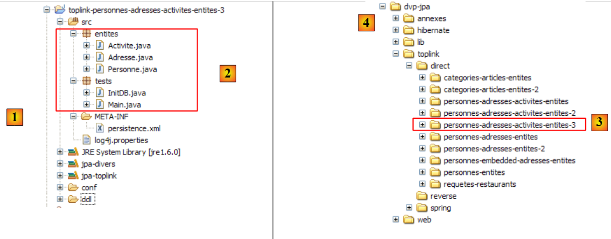 |
In [1] befindet sich das Eclipse-Projekt, in [2] der Java-Code. Das Projekt befindet sich in [3] im Beispielordner [4]. Wir werden es importieren.
Der Java-Code ist identisch mit dem der Hibernate-Version.
2.7. Beispiel 7: Verwendung benannter Abfragen
Wir beenden diese ausführliche Vorstellung der Entitäten JPA, die in Absatz 2 begonnen hat, mit einem letzten Beispiel, das die Verwendung von Abfragen JPQL zeigt, die in eine Konfigurationsdatei ausgelagert wurden. Dieses Beispiel stammt aus folgender Quelle:
[ref2]: „Getting started With JPA in Spring 2.0“ von Mark Fisher unter der URL
[http://blog.springframework.com/markf/archives/2006/05/30/getting-started-with-jpa-in-spring-20/].
2.7.1. Die Beispieldatenbank
Die Datenbank sieht wie folgt aus:
 |
- in [1]: eine Liste von Restaurants mit Namen und Adresse
- in [2]: die Tabelle mit den Adressen der Restaurants, beschränkt auf die Hausnummer und den Straßennamen. Es besteht eine Eins-zu-Eins-Beziehung zwischen den Tabellen restaurant und adresse: Ein Restaurant hat genau eine Adresse.
- in [3]: eine Tabelle mit Gerichten, deren Namen und einem True/False-Indikator, der angibt, ob das Gericht vegetarisch ist oder nicht
- in [4]: die Verknüpfungstabelle „Restaurants/Gerichte“: Ein Restaurant serviert mehrere Gerichte, und ein und dasselbe Gericht kann von mehreren Restaurants serviert werden. Zwischen den Tabellen restaurant und plat besteht eine Mehr-zu-Mehr-Beziehung.
2.7.2. Die @Entity-Objekte, die die Datenbank repräsentieren
Die oben genannten Tabellen werden durch die folgenden @Entity-Objekte dargestellt:
- Das @Entity Restaurant repräsentiert die Tabelle [restaurant]
- Das @Entity Adresse repräsentiert die Tabelle [adresse]
- Die @Entity Plat repräsentiert die Tabelle [plat]
Die Beziehungen zwischen diesen Entitäten sind wie folgt:
- Eine Eins-zu-Eins-Beziehung verbindet die Entität Restaurant mit der Entität Adresse: Ein Restaurant r hat eine Adresse a. Die Entität Restaurant, die den Fremdschlüssel enthält, hat die Hauptbeziehung. Die Entität Adresse hat keine umgekehrte Beziehung.
- Eine Mehr-zu-Mehr-Beziehung verbindet die Entitäten Restaurant und Plat: Ein Restaurant serviert mehrere Gerichte, und ein und dasselbe Gericht kann von mehreren Restaurants serviert werden. Diese Beziehung wird durch eine Annotation @ManyToMany in der Entität Restaurant dargestellt. Die Entität Plat hat keine umgekehrte Beziehung.
Die @Entity Restaurant lautet wie folgt:
package entites;
...
@Entity
@Table(name = "jpa10_hb_restaurant")
public class Restaurant implements java.io.Serializable {
private static final long serialVersionUID = 1L;
@Id
@GeneratedValue(strategy = GenerationType.AUTO)
private long id;
@Column(unique = true, length = 30, nullable = false)
private String nom;
@OneToOne(cascade = CascadeType.ALL)
private Adresse adresse;
@ManyToMany(cascade = { CascadeType.PERSIST, CascadeType.MERGE })
@JoinTable(name = "jpa10_hb_restaurant_plat", inverseJoinColumns = @JoinColumn(name = "plat_id"))
private Set<Plat> plats = new HashSet<Plat>();
// Konstruktoren
public Restaurant() {
}
public Restaurant(String name, Adresse address, Set<Plat> entrees) {
...
}
// Getter und Setter
...
// toString
public String toString() {
String signature = "R[" + getNom() + "," + getAdresse();
for (Plat e : getPlats()) {
signature += "," + e;
}
return signature + "]";
}
}
- Zeile 17: Die Eins-zu-Eins-Beziehung der Entität Restaurant zur Entität Adresse. Alle Persistenzoperationen für ein Restaurant werden auf dessen Adresse kaskadiert.
- Zeile 20: Die Beziehung, die die @Entity Restaurant mit der @Entity Plat aus der Menge plats in Zeile 22 verbindet, ist vom Typ „Viele-zu-Viele“ (ManyToMany):
- Ein Restaurant (One) hat mehrere Gerichte (Many)
- ein Gericht (One) kann von mehreren Restaurants (Many) serviert werden
- Letztendlich sind die @Entity-Objekte Restaurant und Plat durch eine Beziehung ManyToMany miteinander verbunden. Wir legen fest, dass die @Entity Restaurant die Hauptbeziehung hat und dass die @Entity Plat keine umgekehrte Beziehung hat.
- Die Beziehung @ManyToMany erfordert eine Verknüpfungstabelle. Diese wird mithilfe der Anmerkung @JoinTable in Zeile 47 definiert.
- Das Attribut „name“ weist der Tabelle einen Namen zu.
- Die Verknüpfungstabelle besteht aus den Fremdschlüsseln der Tabellen, die sie verknüpft. Hier gibt es zwei Fremdschlüssel: einen in der Tabelle [restaurant], den anderen in der Tabelle [plat]. Diese Fremdschlüsselspalten werden durch die Attribute joinColumns und inverseJoinColumns definiert.
- Das Attribut joinColumns definiert den Fremdschlüssel in der Tabelle der @Entity, die die Hauptbeziehung @ManyToMany enthält, in diesem Fall die Tabelle [restaurant]. Das Attribut joinColumns fehlt hier. JPA hat in diesem Fall einen Standardwert: [table]_[clé_primaire_de_table], hier [jpa10_hb_restaurant_id].
- Die Annotation @JoinColumn des Attributs inverseJoinColumns definiert den Fremdschlüssel auf die Tabelle der @Entity, die die umgekehrte Beziehung @ManyToMany enthält, in diesem Fall die Tabelle [plat]. Diese Fremdschlüsselspalte wird plat_id heißen.
Die @Entity Adresse lautet wie folgt:
package entites;
...
@Entity
@Table(name="jpa10_hb_adresse")
public class Adresse implements java.io.Serializable {
@Id
@GeneratedValue(strategy = GenerationType.AUTO)
private long id;
@Column(name = "NUMERO_RUE")
private int numeroRue;
@Column(name = "NOM_RUE", length=30, nullable=false)
private String nomRue;
// Getter und Setter
...
// Konstruktoren
public Adresse(int streetNumber, String streetName){
...
}
public Adresse(){
}
// toString
public String toString(){
return "A["+getNumeroRue()+","+getNomRue()+"]";
}
}
- Die @Entity „Adresse“ ist eine Entität ohne direkte Beziehung zu den anderen Entitäten. Sie kann nur über die Entität Restaurant persistent gespeichert werden.
- Eine Adresse wird durch einen Straßennamen (Zeile 16) und eine Hausnummer (Zeile 13) definiert.
Die @Entity Plat lautet wie folgt
package entites;
...
@Entity
@Table(name="jpa10_hb_plat")
public class Plat implements java.io.Serializable {
@Id
@GeneratedValue(strategy = GenerationType.AUTO)
private long id;
@Column(unique=true, length=50, nullable=false)
private String nom;
private boolean vegetarien;
// Konstruktoren
public Plat() {
}
public Plat(String name, boolean vegetarian) {
...
}
// Getter und Setter
...
// toString
public String toString() {
return "E[" + getNom() + "," + isVegetarien() + "]";
}
}
- Die @Entity Plat ist eine Entität ohne direkte Beziehung zu den anderen Entitäten. Sie kann nur über die Entität Restaurant persistiert werden.
- Ein Gericht wird durch einen Namen (Zeile 12) und die Angabe, ob es vegetarisch ist oder nicht (Zeile 14), definiert.
2.7.3. Das Eclipse-/Hibernate-Projekt
Die hier verwendete Implementierung JPA stammt von Hibernate. Das Eclipse-Testprojekt lautet wie folgt:
 |
In [1] befindet sich das Eclipse-Projekt, in [2] der Java-Code und in JPA die Konfiguration der Schicht. Man beachte das Vorhandensein einer Datei [orm.xml], die bisher noch nicht aufgetaucht ist. Das Projekt befindet sich unter [3] im Beispielordner [4]. Wir werden es importieren.
2.7.4. Erstellung der Datei „DDL“ aus der Datenbank
Gemäß den Anweisungen in Abschnitt 2.1.7 lautet die für die Dateien SGBD und MySQL5 erstellte Datei DDL wie folgt:
alter table jpa10_hb_restaurant
drop
foreign key FK3E8E4F5D5FE379D0;
alter table jpa10_hb_restaurant_plat
drop
foreign key FK1D2D06D11F0F78A4;
alter table jpa10_hb_restaurant_plat
drop
foreign key FK1D2D06D1AFAC3E44;
drop table if exists jpa10_hb_adresse;
drop table if exists jpa10_hb_plat;
drop table if exists jpa10_hb_restaurant;
drop table if exists jpa10_hb_restaurant_plat;
create table jpa10_hb_adresse (
id bigint not null auto_increment,
NUMERO_RUE integer,
NOM_RUE varchar(30) not null,
primary key (id)
) ENGINE=InnoDB;
create table jpa10_hb_plat (
id bigint not null auto_increment,
nom varchar(50) not null unique,
vegetarien bit not null,
primary key (id)
) ENGINE=InnoDB;
create table jpa10_hb_restaurant (
id bigint not null auto_increment,
nom varchar(30) not null unique,
adresse_id bigint,
primary key (id)
) ENGINE=InnoDB;
create table jpa10_hb_restaurant_plat (
jpa10_hb_restaurant_id bigint not null,
plat_id bigint not null,
primary key (jpa10_hb_restaurant_id, plat_id)
) ENGINE=InnoDB;
alter table jpa10_hb_restaurant
add index FK3E8E4F5D5FE379D0 (adresse_id),
add constraint FK3E8E4F5D5FE379D0
foreign key (adresse_id)
references jpa10_hb_adresse (id);
alter table jpa10_hb_restaurant_plat
add index FK1D2D06D11F0F78A4 (plat_id),
add constraint FK1D2D06D11F0F78A4
foreign key (plat_id)
references jpa10_hb_plat (id);
alter table jpa10_hb_restaurant_plat
add index FK1D2D06D1AFAC3E44 (jpa10_hb_restaurant_id),
add constraint FK1D2D06D1AFAC3E44
foreign key (jpa10_hb_restaurant_id)
references jpa10_hb_restaurant (id);
- Zeilen 21–26: die Tabelle [adresse]
- Zeilen 28–33: die Tabelle [plat]
- Zeilen 35–40: die Tabelle [restaurant]
- Zeilen 42–46: die Verknüpfungstabelle [restaurant_plat]. Beachten Sie den zusammengesetzten Schlüssel (Zeile 45)
- Zeilen 48–52: der Fremdschlüssel von der Tabelle [restaurant] zur Tabelle [adresse]
- Zeilen 54–58: Der Fremdschlüssel von der Tabelle [restaurant_plat] zur Tabelle [plat]
- Zeilen 60–64: Der Fremdschlüssel der Tabelle [restaurant_plat] zur Tabelle [restaurant]
Diese Tabelle „DDL“ entspricht dem bereits vorgestellten Schema:
 |
In der SQL-Explorer-Perspektive stellt sich die Datenbank wie folgt dar:
 |
- in [1]: die 4 Tabellen der Datenbank
- in [2]: die Adressen
- in [3]: die Gerichte
- in [4]: die Restaurants. [adresse_id] verweist auf die Adressen aus [2].
- in [5]: die Verknüpfungstabelle [restaurant,plat]. [jpa10_hb_restaurant_id] verweist auf die Restaurants aus [4] und [plat_id] auf die Gerichte aus [3]. Somit bedeutet [1,1], dass das Restaurant „Burger Barn“ das Gericht „CheeseBurger“ serviert.
Um die oben genannten Daten zu erhalten, wurde das Programm [QueryDB] aus dem Eclipse-Projekt ausgeführt.
2.7.5. Abfragen mit JPQL über eine Hibernate-Konsole
Wir erstellen eine Hibernate-Konsole, die mit dem vorherigen Eclipse-Projekt verknüpft ist. Dabei folgen wir der Vorgehensweise, die bereits zweimal beschrieben wurde, insbesondere in Abschnitt 2.1.12.
 |
- in [1] und [2]: die Konfiguration der Hibernate-Konsole
 |
- in [3]: eine Abfrage JPQL und in [4] das Ergebnis.
- in [5]: die entsprechende Reihenfolge SQL
Wir stellen nun eine Reihe von Abfragen JPQL vor. Der Leser ist eingeladen, diese auszuführen und die von Hibernate zur Ausführung generierte Anweisung SQL zu entdecken.
Alle Restaurants mit ihren Gerichten abrufen:
 |  |
Restaurants abrufen, die mindestens ein vegetarisches Gericht anbieten:
 |  |
Die Namen der Restaurants abrufen, die ausschließlich vegetarische Gerichte servieren:
 |  |
Restaurants finden, die Burger servieren:
 |  |
2.7.6. QueryDB
Wir widmen uns nun dem Programm [QueryDB] aus dem Eclipse-Projekt, das:
- die Datenbank
- und eine bestimmte Anzahl von Abfragen JPQL an sie sendet. Diese werden in der Datei [META-INF/orm.xml] des Eclipse-Projekts gespeichert:
 |
Die Datei [orm.xml] kann verwendet werden, um die Schicht JPA anstelle von Java-Annotationen zu konfigurieren. Dies sorgt für Flexibilität bei der Konfiguration der Schicht JPA. Sie kann geändert werden, ohne dass der Java-Code neu kompiliert werden muss. Beide Methoden können gleichzeitig verwendet werden: Java-Annotationen und die Datei [orm.xml]. Die Konfiguration JPA wird zunächst mit den Java-Annotationen und anschließend mit der Datei [orm.xml] vorgenommen. Wenn man also eine durch eine Java-Annotation vorgenommene Konfiguration ohne Neukompilierung ändern möchte, reicht es aus, diese Konfiguration in die Datei [orm.xml] zu übernehmen. Diese hat dann Vorrang.
In unserem Beispiel wird die Datei „[orm.xml]“ verwendet, um die Abfragetexte aus „JPQL“ zu speichern. Ihr Inhalt lautet wie folgt:
<?xml version="1.0" encoding="UTF-8" ?>
<entity-mappings xmlns="http://java.sun.com/xml/ns/persistence/orm" xmlns:xsi="http://www.w3.org/2001/XMLSchema-instance"
xsi:schemaLocation="http://java.sun.com/xml/ns/persistence/orm http://java.sun.com/xml/ns/persistence/orm_1_0.xsd" version="1.0">
<description>Restaurants</description>
<named-query name="supprimer le contenu de la table restaurant">
<query>delete from Restaurant</query>
</named-query>
<named-query name="supprimer le contenu de la table plat">
<query>delete from Plat</query>
</named-query>
<named-query name="obtenir tous les restaurants">
<query>select r from Restaurant r order by r.nom asc</query>
</named-query>
<named-query name="obtenir toutes les adresses">
<query>select a from Adresse a order by a.nomRue asc</query>
</named-query>
<named-query name="obtenir tous les plats">
<query>select p from Plat p order by p.nom asc</query>
</named-query>
<named-query name="obtenir tous les restaurants avec leurs plats">
<query>select r.nom,p.nom from Restaurant r join r.plats p</query>
</named-query>
<named-query name="obtenir les restaurants ayant au moins un plat vegetarien">
<query>select distinct r from Restaurant r join r.plats p where p.vegetarien=true</query>
</named-query>
<named-query name="obtenir les restaurants avec uniquement des plats vegetariens">
<query>
select distinct r1.nom from Restaurant r1 where not exists (select p1 from Restaurant r2 join r2.plats p1 where r2.id=r1.id and
p1.vegetarien=false)
</query>
</named-query>
<named-query name="obtenir les restaurants d'une certaine rue">
<query>select r from Restaurant r where r.adresse.nomRue=:nomRue</query>
</named-query>
<named-query name="obtenir les restaurants qui servent des burgers">
<query>select r.nom,r.adresse.numeroRue, r.adresse.nomRue, p.nom from Restaurant r join r.plats p where p.nom like '%burger'</query>
</named-query>
<named-query name="obtenir les plats du restaurant untel">
<query>select p.nom from Restaurant r join r.plats p where r.nom=:nomRestaurant</query>
</named-query>
</entity-mappings>
- Der Stamm der Datei [orm.xml] ist <entity-mappings> (Zeile 2).
- Zeilen 5–7: Die benannten Abfragen JPQL werden durch Tags <named-query name= „...“>Text</namedquery> umschlossen.
- Das Attribut name des Tags ist der Name der Abfrage.
- Der Inhalt texte des Tags ist der Text der Abfrage.
QueryDB führt die vorherigen Abfragen aus. Sein Code lautet wie folgt:
package tests;
...
public class QueryDB {
// Persistenzkontext
private static EntityManagerFactory emf = Persistence.createEntityManagerFactory("jpa");
private static EntityManager em = emf.createEntityManager();
public static void main(String[] args) {
// Transaktion starten
EntityTransaction tx = em.getTransaction();
tx.begin();
// Elemente aus der Tabelle löschen [restaurant]
em.createNamedQuery("supprimer le contenu de la table restaurant").executeUpdate();
// Elemente aus der Tabelle löschen [plat]
em.createNamedQuery("supprimer le contenu de la table plat").executeUpdate();
// Anlegen von Address-Objekten
Adresse adr1 = new Adresse(10, "Main Street");
Adresse adr2 = new Adresse(20, "Main Street");
Adresse adr3 = new Adresse(123, "Dover Street");
// Erstellung von Objekten „Entree“
Plat ent1 = new Plat("Hamburger", false);
Plat ent2 = new Plat("Cheeseburger", false);
Plat ent3 = new Plat("Tofu Stir Fry", true);
Plat ent4 = new Plat("Vegetable Soup", true);
// Anlegen von Restaurant-Objekten
Restaurant restaurant1 = new Restaurant();
restaurant1.setNom("Burger Barn");
restaurant1.setAdresse(adr1);
restaurant1.getPlats().add(ent1);
restaurant1.getPlats().add(ent2);
Restaurant restaurant2 = new Restaurant();
restaurant2.setNom("Veggie Village");
restaurant2.setAdresse(adr2);
restaurant2.getPlats().add(ent3);
restaurant2.getPlats().add(ent4);
Restaurant restaurant3 = new Restaurant();
restaurant3.setNom("Dover Diner");
restaurant3.setAdresse(adr3);
restaurant3.getPlats().add(ent1);
restaurant3.getPlats().add(ent2);
restaurant3.getPlats().add(ent4);
// Persistenz der Restaurant-Objekte (und der anderen Objekte durch Kaskadierung)
em.persist(restaurant1);
em.persist(restaurant2);
em.persist(restaurant3);
// Transaktionsende
tx.commit();
// Datenbank-Dump
dumpDataBase();
// Ende EntityManager
em.close();
// Ende EntityManagerFactory
emf.close();
}
// Datenbankinhalt anzeigen
@SuppressWarnings("unchecked")
private static void dumpDataBase() {
// Test2
log("données de la base");
// Transaktionsstart
EntityTransaction tx = em.getTransaction();
tx.begin();
// Anzeige von Restaurants
log("[restaurants]");
for (Object restaurant : em.createNamedQuery("obtenir tous les restaurants").getResultList()) {
System.out.println(restaurant);
}
// Anzeige von Adressen
log("[adresses]");
for (Object adresse : em.createNamedQuery("obtenir toutes les adresses").getResultList()) {
System.out.println(adresse);
}
// Anzeige von Gerichten
log("[plats]");
for (Object plat : em.createNamedQuery("obtenir tous les plats").getResultList()) {
System.out.println(plat);
}
// Anzeigen von Verknüpfungen zwischen Restaurants und Gerichten
log("[restaurants/plats]");
Iterator record = em.createNamedQuery("obtenir tous les restaurants avec leurs plats").getResultList().iterator();
while (record.hasNext()) {
Object[] currentRecord = (Object[]) record.next();
System.out.format("[%s,%s]%n", currentRecord[0], currentRecord[1]);
}
log("[Liste des restaurants avec au moins un plat végétarien]");
for (Object r : em.createNamedQuery("obtenir les restaurants ayant au moins un plat vegetarien").getResultList()) {
System.out.println(r);
}
// Abfrage
log("[Liste des restaurants avec seulement des plats végétariens]");
for (Object r : em.createNamedQuery("obtenir les restaurants avec uniquement des plats vegetariens").getResultList()) {
System.out.println(r);
}
// Abfrage
log("[Liste des restaurants dans Dover Street]");
for (Object r : em.createNamedQuery("obtenir les restaurants d'une certaine rue").setParameter("nomRue", "Dover Street").getResultList()) {
System.out.println(r);
}
// Abfrage
log("[Liste des restaurants ayant un plat de type burger]");
record = em.createNamedQuery("obtenir les restaurants qui servent des burgers").getResultList().iterator();
while (record.hasNext()) {
Object[] currentRecord = (Object[]) record.next();
System.out.format("[%s,%d,%s,%s]%n", currentRecord[0], currentRecord[1], currentRecord[2], currentRecord[3]);
}
// Abfrage
log("[Plats de Veggie Village]");
for (Object r : em.createNamedQuery("obtenir les plats du restaurant untel").setParameter("nomRestaurant", "Veggie Village").getResultList()) {
System.out.println(r);
}
// Transaktionsende
tx.commit();
}
// Protokolle
private static void log(String message) {
System.out.println(" -----------" + message);
}
}
Das Ergebnis der Ausführung von [QueryDB] lautet wie folgt:
Wir überlassen es dem Leser, den Zusammenhang zwischen dem Code und den Ergebnissen herzustellen. Dazu empfehlen wir ihm, die Abfragen JPQL in der Hibernate-Konsole auszuführen und den dazugehörigen Code SQL zu untersuchen.
2.7.7. Das Eclipse-/Toplink-Projekt
Interessierte Leser finden in den herunterladbaren Beispielen zu diesem Tutorial das oben genannte Projekt, das mit Toplink implementiert wurde:
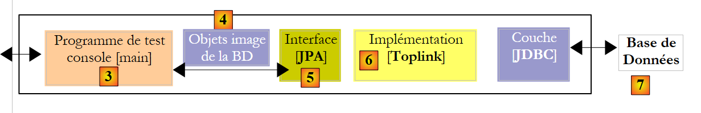 |
Das Eclipse-Projekt mit Toplink ist eine Kopie des Eclipse-Projekts mit Hibernate:
 |
Die Datei <persistence.xml> [2] deklariert die verwalteten Entitäten:
<!-- Anbieter -->
<provider>oracle.toplink.essentials.PersistenceProvider</provider>
<!-- persistente Klassen -->
<class>entites.Restaurant</class>
<class>entites.Adresse</class>
<class>entites.Plat</class>
...
- Zeilen 4–6: die verwalteten Entitäten
Die in [orm.xml] gespeicherten Abfragen JPQL werden von Toplink korrekt ausgeführt. Zu diesem Zweck wurde im vorherigen Projekt darauf geachtet, keine Abfragen vom Typ HQL (Hibernate Query Language) zu verwenden, da diese eine Obermenge von JPQL darstellen und bestimmte Syntaxelemente von JPQL nicht akzeptiert werden.
2.8. Fazit
Hiermit beenden wir unsere Untersuchung der Entitäten JPA. Es war ein langwieriger Prozess, und dennoch wurden wichtige Aspekte (für den fortgeschrittenen Entwickler) nicht behandelt. Auch hier empfiehlt es sich, ein Nachschlagewerk zu lesen, wie dasjenige, das für dieses Tutorial verwendet wurde:
[ref1]: „Java Persistence with Hibernate“ von Christian Bauer und Gavin King, erschienen bei Manning.